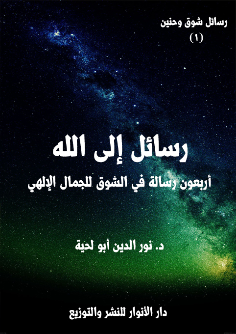

الكتاب: رسائل إلى الله
الوصف: أربعون رسالة في الشوق للجمال الإلهي
السلسلة: رسائل شوق وحنين
المؤلف: أ.د. نور الدين أبو لحية
الناشر: دار الأنوار للنشر والتوزيع
الطبعة: الأولى، 1440 هـ
عدد الصفحات: 182
ISBN: 978-620-3-85924-9
لمطالعة الكتاب من تطبيق مؤلفاتي المجاني وهو أحسن وأيسر: هنا

التعريف بالكتاب
تحاول هذه الرسائل الموجهة للحضرة النورانية المقدسة أن تلغي كل الحجب والمسافات التي تربط بين العبد وربه.. لتصل العبد بربه مباشرة عبر مناجاته والحديث معه وبثه أشواقه ومطالبه، وفي جميع الشؤون.
وهي تختصر في مضامينها أكثر القضايا العقدية والعرفانية الواردة في المصادر المقدسة أو التراث الإسلامي، وبصياغة رقيقة بعيدة عن المصطلحات الصعبة، أو الجدل، أو غيرها من الأساليب التي اضطر الفلاسفة أو المتكلمون إليها.
وهي تحاول كذلك أن تجادل عن تلك المعاني السامية، ولكن بطريقة حسنة بعيدة عن الشغب، والمراء الذي نهينا عنه.
فهي تخاطب العقل.. وتحاول أن تقنعه من خلال البديهيات التي يسلم لها.. ثم تنتقل مباشرة من العقل لتبث في القلب كل ألوان العواطف والمشاعر المرتبطة بتلك المعاني السامية.
رسائل إلى الله (6)
تحاول هذه السلسلة طرح القضايا العقدية وما يرتبط بها من المفاهيم والقيم وغيرها طرحا خاصا يمزج بين العاطفة والعقل.. ويحاول أن يقرب المسافة بين الحقائق والمستقبل لها حتى يصير قريبا منها ملامسا لها.. وحتى لا تبقى أمثال تلك القضايا المهمة نوعا من الفلسفة أو الأفكار الذهنية التي لا علاقة لها بالوجدان أو السلوك.
والدافع إلى تأليفها هو ما نراه من أن العقيدة تختلف عن العلم المجرد.. فالعلم معارف ذهنية قد لا يكون لها أي تأثير في الوجدان أو السلوك، بينما العقيدة تتجاوز ذلك كله، لتخاطب العقل والقلب والروح وكل اللطائف، ثم تتجاوزها جميعا إلى السلوك؛ فتؤثر فيه بكل أصناف التأثيرات.
ولذلك حاولنا في هذه السلسلة ـ عبر قضاياها المختلفة ـ أن نتجاوز الواسطة الذي يفرض مفاهيمه ومعارفه على المتلقي، وإنما جعلنا المتلقي نفسه مع القضايا نفسها من غير أي واسطة.
ففي هذه السلسة يخاطب القارئ ربه مباشرة.. وفي أثناء خطابه له يتلقى المعارف منه، ويرد على كل الشبه التي قد ترد على عقله.. ويستقبل كل المعاني السامية التي تهديه إليها معرفته.
وفيها يخاطب القارئ رسوله صلى الله عليه وآله وسلم.. ويحدثه كما يحدث الجليس جليسه.. لتنتفي بذلك الخطاب كل الوسائط.. وفي ذلك الخطاب يتعلم الأدب في حواره مع رسول الله صلى الله عليه وآله وسلم.. ويتعلم القيم النبيلة التي جاء بها.. ليزداد محبة له، وتعظيما لحضرته.
وهكذا يخاطب القارئ في هذه السلسلة الإمام علي.. التلميذ الأكبر لرسول الله صلى الله عليه وآله وسلم.. والمظلوم الأعظم في هذه الأمة.. ليتعرف عليه، وعلى القيم النبيلة التي مثلها، بعيدا
رسائل إلى الله (7)
عن كل ألوان الجدل والخصومة.
وهكذا يخاطب القارئ في هذه السلسلة القرابة المظلومة من آل بيت النبوة، ويتعرف على فضلها وقيمها النبيلة، ومدى المظلومية التي لحقت بها، حتى يصحح علاقته معها، وحتى يتمثل ما ورد في النصوص المقدسة من الوصية بها.
وهكذا يخاطب القارئ في هذه السلسلة الصحابة المنتجبين الذين حافظوا على هدي النبوة، ووفوا لها، وكانوا نماذج رفيعة عن التلمذة الحقيقية لقيمها، حتى يمتلئ بحبهم، لا بحب المشوهين لهم، أو المتاجرين باسمهم.
وهكذا يخاطب القارئ في هذه السلسلة الأنبياء والمرسلين، ويملأ قلبه من محبتهم وتعظيمهم، ويتعرف على القيم النبيلة التي مثلوها، والتي حاول المغرضون تشويهها، وتشويههم معها.
وهكذا يخاطب القارئ في هذه السلسلة الأئمة المطهرين الذين ورثوا النبوة، ومثلوها أحسن تمثيل، فيتعرف على مقاماتهم الرفيعة، وأخلاقهم العالية، ويملأ قلبه بمحبتهم والشوق إليهم.
وهكذا يخاطب القارئ في هذه السلسلة الملائكة السفرة الكرام البررة، ويتلقى في ذلك الخطاب أنواع المعرفة بفضلهم وكرامتهم ومكانتهم عند الله.. والقيم النبيلة التي مثلوها.. وليعقد الصحبة معهم في الدنيا قبل الآخرة.
وهكذا فإن هذه السلسلة ـ بأجزائها الثمانية ـ محاولة لصياغة جديدة للقضايا الإسلامية المختلفة بصيغة عاطفية عقلية حتى يعيش القارئ المعاني العقدية، والقيم المرتبطة بها، ولا تبقى مجرد معاني ذهنية لا أثر لها على القلب.. ولا في السلوك والحياة.
رسائل إلى الله (8)
وقد كان هادينا إليها ما تعلمناه من القرآن الكريم من تلك المناجيات وغيرها، والتي تصلنا بالله أو رسله أو ملائكته مباشرة، بعيدا عن كل أصناف الوسائط.
وهي ـ لذلك ـ تحتاج إلى طريقة خاصة في القراءة.. فهي أحيانا قد تضع المعاني الكثيرة في كلمات ومفردات قليلة، تحتاج الكثير من التدبر والتأمل والتفكير، ليرقى القارئ بها إلى ما تختزنه من المعاني السامية.
ذلك أنا قصدنا فيها الاختصار حتى يتيسر للقارئ الاطلاع عليها بكل يسر.. والاختصار يحتاج إلى التأمل والتدبر حتى يحيط بمعانيها، وقد ينال في أثناء تدبره لها ما لم يقصده كاتبها نفسه.
وأسأل الله أن يجعل هذه الرسائل شفيعا لي ولقرائها الكرام يقربنا جميعا ممن أرسلتها لهم.. وأنا موقن تماما أنها وصلت لهم، وأنهم ـ بكرمهم وفضلهم ـ أعظم من أن يردوا من خاطبهم، أو خطب ودهم.
رسائل إلى الله (9)
تحاول هذه الرسائل الموجهة للحضرة النورانية المقدسة أن تلغي كل الحجب والمسافات التي تربط بين العبد وربه.. لتصل العبد بربه مباشرة عبر مناجاته والحديث معه وبثه أشواقه ومطالبه، وفي جميع الشؤون.
وهي تختصر في مضامينها أكثر القضايا العقدية والعرفانية الواردة في المصادر المقدسة أو التراث الإسلامي، وبصياغة رقيقة بعيدة عن المصطلحات الصعبة، أو الجدل، أو غيرها من الأساليب التي اضطر الفلاسفة أو المتكلمون إليها.
وهي تحاول كذلك أن تجادل عن تلك المعاني السامية، ولكن بطريقة حسنة بعيدة عن الشغب، والمراء الذي نهينا عنه.
فهي تخاطب العقل.. وتحاول أن تقنعه من خلال البديهيات التي يسلم لها.. ثم تنتقل مباشرة من العقل لتبث في القلب كل ألوان العواطف والمشاعر المرتبطة بتلك المعاني السامية.
وهي تطرح الكثير مما ورد في النصوص المقدسة من أسماء الله الحسنى، وتتقرب إلى الله من خلالها.. فأسماء الله الحسنى هي مرائي التعرف على الله.. وهي معارج السير إليه.. وهي مراقي النفس لتصل إلى براءتها وطهارتها.. وتصل معهما إلى الطمأنينة التي ربطها الله بذكره ودعائه ومناجاته.. فعلامة صدق الذكر والدعاء والمناجاة حصول الطمأنينة.. كما قال تعالى: {الَّذِينَ آمَنُوا وَتَطْمَئِنُّ قُلُوبُهُمْ بِذِكْرِ اللَّهِ أَلَا بِذِكْرِ اللَّهِ تَطْمَئِنُّ الْقُلُوبُ} [الرعد: 28]
ولذلك حاولت هذه الرسائل أن تبث كل معاني الطمأنينة المرتبطة بذكر الله.. وذلك عبر إشعار القارئ بالطمأنينة إلى الله، والثقة المطلقة فيه.. وأنه وحده صاحب
رسائل إلى الله (10)
الكمال المطلق، وصاحب الكرم المطلق.. ولذلك حاولت هذه الرسائل تعليم آداب العبودية.. فعلامة صدق الإيمان تحقق العبودية.
كما أنها حاولت أن تربط العقيدة في الله بالقيم الرفيعة.. فيستحيل على من عرف الله ألا يتحلى بمكارم الأخلاق.. ولذلك مزجت بين الإيمان والأخلاق.. وربطت بين التحقق بمعرفة الله والتحقق بمكارم الأخلاق.
وقد كان دليلنا إليها، ومعلمنا فيها تلك الأدعية النورانية، والمناجيات الروحانية الواردة في القرآن الكريم.. ومثلها تلك التي رويت عن رسول الله صلى الله عليه وآله وسلم أو عن أهل بيته الطاهرين.. والذين تركوا لنا تراثا عظيما من الأدعية والمناجيات يمكنه أن يغنينا عن كل ما سطره المتكلمون أو العرفاء أو الفلاسفة في تلك الجوانب.
ولذلك كانت أسوتنا بهم.. فهم أئمتنا وأساتذتنا.. وكل حرف سطرناه إنما هو نتيجة تشرفنا بالتلمذة عليهم، وعلى ذلك التراث النبيل الذي تركوه لنا، والذي علمونا من خلاله كيف نخاطب ربنا، وكيف نمارس دورنا في العبودية معه.
رسائل إلى الله (11)
إلهي.. يا محتجبا بحجاب الغيب المطلق..
لقد رحت لكل شيء أسأله عنه، وعن سره، فدلني عليك..
أخبرتني الزهرة أنها وعطرها وجمالها لم تكن لولاك..
وأخبرتني أن الذي ذاب في حبها يكذب على نفسه، وعليها، لأنها ليست سوى نقطة من محيطات جمالك الذي لا حدود له.
وأخبرني الكرم والرحمة واللطف المتجلي في كل شيء بأنه منك بدأ، وإليك يعود، وأنه ليس سوى مظهر من مظاهر كمالك الذي تجلى في الأشياء، ولا وجود له لولاك.
وعندما سألت كل العاشقين عن سر عشقهم أخبروني أنهم تاهوا في تلك التقاسيم الجميلة، والأفواه العذبة، والعيون الحوراء، والابتسامات الآسرة..
وعندما رحت أسألها جميعا عنها وعن سرها أخبرتني أنها أشباح لولاك..
فأنت سر الجمال والبهاء المودع فيها، ولولاك لبقيت في عالم الظلمات المطبقة التي لا محل فيها لأي جمال ولا لأي بهاء، ولا لأي وجود.
وعندما رحت أسأل العلماء والفلاسفة عن سرهم أخبروني أنهم غرقوا في بحر الأسرار المودعة في عوالم الحس والمعاني..
وعندما تركتهم، ورحت أسألها عن سرها، وسر تعلق العلماء والفلاسفة بها أخبرتني أنهم لم يتعلقوا بها، وإنما تعلقوا بصاحبها الذي لا حدود لإبداعه، ولا قيود لكماله..
وأخبرتني أن سر حجابهم انشغالهم بالمظاهر عن الظاهر، وبالأشياء عن مشيئها، وبالصور عن مصورها، وبالكون عن مكونه.
رسائل إلى الله (12)
فأسألك يا رب كما دللتني عليك بالمظاهر التي أظهرتها ألا تحجبني بها عنك، فإن أكثر الناس راحوا يتأملون فيها وفي جمالها، وبدل أن يرحلوا منها إليك، سجنوا أنفسهم في سجونها، ونسوك، فتحولت لهم إلى صورتها الحقيقية التي خلت عنك، وملأتهم عذابا.
يا رب.. لقد علمت أنه لا جمال لشيء من دونك.. فأنت المصور البديع الذي بيده كل الألوان، فلا وجود للألوان من دونك..
وقد علمت أنه لا رحمة لشيء من دونك.. فأنت الرحمن الرحيم.. وما نراه من رحمة ولطف وعناية ليست سوى قطرات من محيطات رحمانيتك التي لا حدود لها.
وقد علمت أنه لا سعادة من دونك، فأنت الذي تملأ القلوب بالفرح الحقيقي الذي لا يزول، وكيف يزول ومصدره منك، وأنت الحي الذي لا يموت؟
وقد علمت أنه لا كمال من دونك.. وكيف يحصل الكمال لمن تعلق بالناقصين، وسجن في سجون القاصرين، ولم يرتق في سلم العارفين؟
وقد علمت أنه لا وجود من دونك.. فأنت صاحب الوجود المطلق، وكل ما نراه من موجودات فيوضات من بحر جودك ووجودك.
يا رب.. فأعوذ بك أن يأسرني الوجود التبعي عن الوجود الأصلي..
وأعوذ بك أن أسجن في سجون الظلال التي تريد أن تملأ حياتي بالوهم.
وأعوذ بك أن أبحث في السراب عن الماء.. فلا وجود للماء من دونك.. ولا يرتوي العطشان قبل أن يلقاك.
يا رب.. اجعلني أتنقل في الآثار بصحبة الاعتبار.. حتى لا أسجن في سجونها.. وإنما لأعبر منها إليك، وأجعلها سلمي الذي أرتقي به إلى عظمتك.. فأنت المطلوب
رسائل إلى الله (13)
الأول، وأنت المقصد الأعظم.
يا رب لقد أبرزت المظاهر لتدل عليك، فاجعلني أرحل منها إليك..
وأعوذ بك أن تكون رحلتي من الأكوان للأكوان، فأكون كحمار الرحى الذي يتنقل في دائرة مفرغة، مليئة بالعبث.
اجعلني يا رب أراك في كل شيء، وقبل كل شيء، وبعد كل شيء، ومع كل شيء، وعند كل شيء.. حتى لا تقيدني الأشياء بقيودها، فأحجب بها عنك.
يا رب.. لقد أعطيتني من نعمك كل ما طلبته منك.. لكني أعوذ بك أن تكون تلك النعم اختبارا لصدق مودتي لك.. فأنا لم أطلبها منك لتكون حجابا بيني وبينك، بل طلبتها لعلمي بكرمك وفضلك ورحمتك.
يا رب طلبتها منك، لتكون دليلي إليك، لا حجابا بيني وبينك.. فاجعلني أفرح بها لكونك مهديها ومرسلها والمنعم بها.. وأعوذ بك أن يشغلني فرحي بها عنك، فأكون كذلك الذي باع عز الأبد بدراهم مغشوشة.
يا رب.. أنا قطرة من بحر جودك.. فاغمرني بفضلك.. وأدخل قطرتي في محيط جمالك.. لتفنى في جمالك عن نفسها.. فلا سعادة للقطرة إلا في عودتها للمحيط الذي منه برزت، وبه ظهرت.
رسائل إلى الله (14)
رسائل إلى الله (15)
إلهي.. أيها العزيز الكريم الذي لا يعز إلا من لاذ به، وسكن إليه، وارتمى في بحار عبوديته..
ذل من طلب غيرك، وانتكس من ركن إلى سواك.. فلا عزيز غيرك، ولا عزيز إلا من أعززته.
لقد رأيت من الخلائق من اعتز بماله وغناه، لكنه ما إن نعم به أياما، حتى أذله دهورا وأعواما.. ثم تركه أحوج ما يكون إليه.
ورأيت من اعتز بجاهه وسمعته.. لكن الأيام أغارت عليهما؛ فتحول من العزة إلى الذلة، ومن الشهرة إلى الخمول، ثم سرعان ما نسيه الخلائق، ولم تبق إلا جرائمه تجرعه كل صنوف الهوان.
ورأيت من اعتز بصحبة السلاطين والملوك والأمراء.. لكنهم لم يذيقوه إلا كل ألوان الهوان، ثم تركوه أحوج ما يكون إليهم.
ورأيت من اعتز بعلمه.. فلم ينفعه علمه، لأنه لم يكن لك، ولا بك، ولا لأجلك وإنما كان لمباهاة العلماء، ومماراة السّفهاء، والافتخار به في المجالس والمنتديات والمؤتمرات وعلى شاشات القنوات.
ورأيت من اعتز بنسبه، فلم ينفعه نسبه، لأن من أبطأ به عمله لم يسرع به نسبه، وكان أول من تبرأ منه أولئك الذين ادعى نسبته إليهم.
ورأيت من اعتز بحسبه.. فلم ينفعه حسبه.. بل كل من اعتز بهم أذاقوه من ألوان الهوان، ما زاده ارتكاسا وسقوطا.
كل هؤلاء يا رب تمرغوا في أوحال الذلة.. لأنهم لم يعرفوك، ولم يتصلوا بك، ولم
رسائل إلى الله (16)
يعيروك أي اهتمام.. بل توهموا أن أولئك الذين استعزوا بهم أعظم منك شأنا.. لكنهم اكتشفوا في الأخير أنك أنت وحدك العزيز، وأنه لا عزة إلا لمن صحبك، ولجأ لجوارك، وتواصل معك، وعاش في كنفك.
لقد أدرك سحرة فرعون ذلك.. فعندما دخلوا على فرعون كانوا فرحين مستبشرين يرددون {بِعِزَّةِ فِرْعَوْنَ إِنَّا لَنَحْنُ الْغَالِبُونَ} [الشعراء: 44]، لكن موسى الذي لم تكن عزته إلا بك، كان ينظر إليهم حزينا، وهو يرى تعلقهم بقشة لا تغنيهم شيئا..
وسرعان ما رمى عصاه، لتلتهم كل ما أعدوه، وليعلموا حينها أن العزة لله وحده، وأن فرعون لا يساوي شيئا أمام تلك العصا الخشبية التي كانت في يد نبيك موسى.
وهكذا فعل إبراهيم الذي لم يبال بكل تلك النيران التي أعدت له.. ولا بذلك النمروذ الذي صب عليه جام غضبه.. ولا بأولئك الخلائق الذي التفوا حوله ليشموا روائح جسده، وهو يشوى..
كان إبراهيم حينها مشغولا عنهم بك.. بل كان في غاية السرور، لأنه سيقدم جسده قربانا لعظمتك وجلالك.. ولذلك لم يشعر بأي ذلة، بل كان في قمة عزته وكرامته..
وقد شئت يا رب أن تريهم بعض مظاهر عزتك، فحولت النار بردا وسلاما.. ليقف الجميع مبهوتين.. وليعلموا ذلة من اعتزوا بهم، وهوان من ركنوا إليهم.
يا رب.. أسألك وأنت العزيز الكريم.. ألا تجعلني أركن إلى شيء غيرك.. فأنت الغاية العظمى، وأنت المقصد الأسنى، وأنت الذي يذل كل من احتمى بغيرك.
رسائل إلى الله (17)
وأعوذ بك يا رب من تلك الأهواء التي تقيد أصحابها بخيوط الحرير، لتجرهم إلى حتفهم، وتقضي على حقائقهم، فتكون أنت أول ما يخسرون.. وبخسارتهم لك يخسرون كل شيء.
يا رب.. لقد أمرتنا في كتابك أن نردد: {اللَّهُمَّ مَالِكَ الْمُلْكِ تُؤْتِي الْمُلْكَ مَنْ تَشَاءُ وَتَنْزِعُ الْمُلْكَ مِمَّنْ تَشَاءُ وَتُعِزُّ مَنْ تَشَاءُ وَتُذِلُّ مَنْ تَشَاءُ بِيَدِكَ الْخَيْرُ إِنَّكَ عَلَى كُلِّ شَيْءٍ قَدِيرٌ} [آل عمران: 26]
ونحن نرددها بألسنتنا كما أمرتنا.. فاجعلنا نرددها بقلوبنا وأرواحنا وأسرارنا، حتى نعلم أنك الملك الوحيد في هذا الكون.. وأن نداءك {لِمَنِ الْمُلْكُ الْيَوْمَ لِلَّهِ الْوَاحِدِ الْقَهَّارِ} [غافر: 16] ليس خاصا بالآخرة، بل هو عام في كل الأوقات.. لكن لا يسمعه إلا أصحاب البصائر.
يا رب.. لقد قلت في كتابك: {مَنْ كَانَ يُرِيدُ الْعِزَّةَ فَلِلَّهِ الْعِزَّةُ جَمِيعًا} [فاطر: 10]، ونحن ـ يا رب ـ نريد تلك العزة الحقيقية التي جعلتها لأنبيائك وأوليائك وأصفيائك.. أولئك الذين صفيت القلوب من الأغيار، فلم يلتفتوا إلا لعظمتك، ولم ينبهروا إلا بجمالك، ولم يقضوا حياتهم إلا في خدمتك وصحبتك وعبوديتك.
يا رب.. لقد حدثنا رسولك الخاتم، فقال: (تعس عبد الدينار، وعبد الدرهم، وعبد القطيفة، وعبد الخميصة، إن أعطي رضي، وإن منع سخط) (1).. ونحن نعوذ بك يا رب أن نكون عبيدا لهؤلاء ولغيرهم.. ونسألك أن نكون عبيدا لك وحدك.
يا رب.. لقد قلت في كتابك: {قُلْ إِنْ كَانَ آبَاؤُكُمْ وَأَبْنَاؤُكُمْ وَإِخْوَانُكُمْ وَأَزْوَاجُكُمْ وَعَشِيرَتُكُمْ وَأَمْوَالٌ اقْتَرَفْتُمُوهَا وَتِجَارَةٌ تَخْشَوْنَ كَسَادَهَا وَمَسَاكِنُ تَرْضَوْنَهَا
__________
(1) صحيح البخاري 4/ 34 ح (2886)
رسائل إلى الله (18)
أَحَبَّ إِلَيْكُمْ مِنَ اللَّهِ وَرَسُولِهِ وَجِهَادٍ فِي سَبِيلِهِ فَتَرَبَّصُوا حَتَّى يَأْتِيَ اللَّهُ بِأَمْرِهِ وَاللَّهُ لَا يَهْدِي الْقَوْمَ الْفَاسِقِينَ} [التوبة: 24]، ونحن نعوذ بك يا رب أن يكون آباؤنا أو إخواننا أو عشائرنا أو كل من ذكرته حجابا بيننا وبينك.. فأنت المقصود الأعظم، وأنت المحبوب الأعظم.
يا رب.. نحن لا نملك نفوسنا، ولا قلوبنا، ولا أرواحنا.. ولا نملك شيئا من أمرنا.. فكن أنت سندنا، و(آت نفوسنا تقواها، وزكها أنت خير من زكاها، أنت وليها ومولاها) (1)
فنحن نعلم يا رب أنه لا يعتز بك إلا من أطاعك، وملأ قلبه بحبك، وشغل حياته بك، لا بسواك، وقد قلت في كتابك العزيز: {وَلِلَّهِ الْعِزَّةُ وَلِرَسُولِهِ وَلِلْمُؤْمِنِينَ وَلَكِنَّ الْمُنَافِقِينَ لَا يَعْلَمُونَ} [المنافقون: 8]
__________
(1) رواه مسلم (2722)
رسائل إلى الله (19)
إلهي.. أيها المدبر الحكيم الذي لا يقوم شيء في الكون إلا بتدبيره وتسييره ورعايته.
كم نبتعد عنك حين يعترينا الألم والحزن واليأس لأجل أحداث بسيطة تنزل بنا، تعجز عقولنا عن إيجاد حلول لها.
وبدل أن نهرب إليك، ونفوض الأمر إلى تدبيرك، ننحني للأيام، ونمتلئ باليأس والقنوط، ونغفل أن نضع بين يديك ما حل بنا، لتدبره بحكمتك وعلمك ولطفك وخبرتك.
وكأن الذي دبر هذا الكون من الذرة إلى المجرة غيرك..
وكأن الذي صمم خلايانا وأنسجتنا وأعضاءنا وأجهزتنا بذلك التصميم العجيب الذي أبهر العلماء والأطباء والخبراء سواك.
ولو أننا ـ ربنا ـ تركنا عقولنا التي عقلتنا، ورحنا نتأمل في خلقك البديع، وصنعك الحكيم، لسمعنا كل شيء يسبح بحمدك، ويقر بأنك أنت الخالق الرازق المدبر لكل الأمور، وأنه لولاك لم يكن شيئا.
فأنت الذي أفضت علينا وعلى كل شيء نعمة الوجود، وأنت الذي أمددتنا وأمددت كل شيء بكل أنواع الرزق، وفيوضات الفضل.
أفيعجز من {أَعْطَى كُلَّ شَيْءٍ خَلْقَهُ ثُمَّ هَدَى} [طه: 50] أن يعطينا ما سألناه، أو يدبر من أمورنا ما عجزنا عنه؟
أو يمكن لليأس أن يحل في عقل أو قلب شخص يعلم أنك الخالق الرازاق المدبر الحكيم العليم الخبير.. الذي لا يستحيل عليه شيء، وكيف يستحيل عليه، وهو خالق
رسائل إلى الله (20)
كل شيء، ومدبر كل أمر، والذي لا نهاية لعلمه، ولا حدود لقدرته؟
وهل يكون العجز إلا لذلك الجاهل الذي لا يعرف من الأشياء إلى ظواهرها.. وأنت المحيط بكل شيء علما، دقيقه وجليله، وأوله وآخره، وعاقبته وفاتحته، لا نهاية لمعلوماتك ولا حصر لها، وقد قلت في كتابك الكريم على لسان نبيك شعيب: {وَسِعَ رَبُّنَا كُلَّ شَيْءٍ عِلْماً} (لأعراف: 89)؟
ولذلك كان من أسمائك (الواسع).. فأنت واسع في علمك وخبرتك ولطفك وقدرتك وحكمتك ورحمتك.. وكل شيء.
ولذلك أينما وجهنا عيوننا وقلوبنا وعقولنا وأورواحنا وجدناك، ووجدنا تدبيرك وحكمتك ولطفك.. وسمعنا كل شيء يردد قولك: {وَلِلَّهِ الْمَشْرِقُ وَالْمَغْرِبُ فَأَيْنَمَا تُوَلُّوا فَثَمَّ وَجْهُ اللَّهِ إِنَّ اللَّهَ وَاسِعٌ عَلِيمٌ} (البقرة:115)
ولذلك لا مكان لليأس معك.. وهل اليأس إلا من أولئك الجهلة العاجزين الممتلئين بالضعف.. أولئك الذين وصفتهم بأنهم {لَنْ يَخْلُقُوا ذُبَابًا وَلَوِ اجْتَمَعُوا لَهُ وَإِنْ يَسْلُبْهُمُ الذُّبَابُ شَيْئًا لَا يَسْتَنْقِذُوهُ مِنْهُ ضَعُفَ الطَّالِبُ وَالْمَطْلُوبُ} [الحج: 73]؟
وقد عدت يا رب لكل جامعات الدنيا ومخابرها، وسألت جميع علمائها، وفي جميع التخصصات، فأخبروني بصدق ما ذكرته عن الذبابة، بل أخبروني بأن العلم ـ مع تطوره الكبير، وفي كل المجالات ـ لا يزال عاجزا أمام أبسط الأمور، وأحقر الأشياء.. وأنه يظل دائما يمد يده إليك طالبا مددك وفضلك وجودك.
يارب.. أنا أعلم، بل أوقن.. أن كل تلك المعامل، وكل أولئك العلماء، لم يكونوا ليحققوا شيئا، وفي أي مجال دون مددك..
فأنت الذي هديتهم، وأنت الذي علمتهم، وأنت الذي دللتهم على ما عجزت
رسائل إلى الله (21)
عقولهم عن معرفته وتدبيره.
لكن بعضهم يارب.. وبدل أن ينسب الفضل إليك، ويملأ عبادك بالإيمان واليقين، راح يردد ما ردده قارون من قبله حين فرح بعلمه، ونسي فضلك، وقال: {إِنَّمَا أُوتِيتُهُ عَلَى عِلْمٍ عِنْدِي} [القصص: 78]
فنعوذ بك يا رب أن ننسب أي شيء لتدبيرنا، أو عقولنا، أو علومنا.. فأين تدبيرنا، وعقولنا، وعلومنا منك؟
نعوذ بك يا رب أن نكون كأولئك الذين دعوك في الضراء، فلما مننت عليهم بالسراء، راحوا يغفلون عنك، وينسبون لأنفسهم ما حل بها من فضلك..
لقد قلت تذكرهم في كتابك: {فَإِذَا مَسَّ الْإِنْسَانَ ضُرٌّ دَعَانَا ثُمَّ إِذَا خَوَّلْنَاهُ نِعْمَةً مِنَّا قَالَ إِنَّمَا أُوتِيتُهُ عَلَى عِلْمٍ بَلْ هِيَ فِتْنَةٌ وَلَكِنَّ أَكْثَرَهُمْ لَا يَعْلَمُونَ (49) قَدْ قَالَهَا الَّذِينَ مِنْ قَبْلِهِمْ فَمَا أَغْنَى عَنْهُمْ مَا كَانُوا يَكْسِبُونَ (50) فَأَصَابَهُمْ سَيِّئَاتُ مَا كَسَبُوا وَالَّذِينَ ظَلَمُوا مِنْ هَؤُلَاءِ سَيُصِيبُهُمْ سَيِّئَاتُ مَا كَسَبُوا وَمَا هُمْ بِمُعْجِزِينَ} [الزمر: 49 - 51]
يا رب نعوذ بك أن نُفتن بعقولنا وعلومنا.. فنحن نعلم أن كل شيء منك.. حتى تلك الخواطر التي ترد علينا، وتملأ حياتنا سعادة وسرورا هي من فيوضات رحمتك.. وليست من تدبير عقولنا العاجزة..
وهكذا فإن كل ما نصل إليه من حقائق في الكون والحياة وكل شيء، هي إلهامات منك إلينا.. فأنت المعلم الذي يفيض على عباده من فيض علمه.. وأنت المدبر الذي يوفر لكل شيء ما يحتاجه.
يارب.. فاجعلنا نركن إليك.. لا إلى الأشياء، ونفرح بك لا بالأشياء.. ونمد يدنا إليك لا إلى الأشياء.. حتى لا تكون الأشياء فتنة لنا، وحجابا بيننا وبينك.
رسائل إلى الله (22)
يا رب.. لقد سعد من قرأ حروف تدبيرك في كل شيء.. فلم ير الرياح إلا مرسلة منك، متحركة بتحريكك: {وَهُوَ الَّذِي يُرْسِلُ الرِّيَاحَ بُشْرًا بَيْنَ يَدَيْ رَحْمَتِهِ} [الأعراف: 57]
ولم ير السحاب وهو يتجول في السماء ليبحث عن الأرض التي يرويها إلا متحركا بعلمك وقدرتك: {حَتَّى إِذَا أَقَلَّتْ سَحَابًا ثِقَالًا سُقْنَاهُ لِبَلَدٍ مَيِّتٍ فَأَنْزَلْنَا بِهِ الْمَاءَ فَأَخْرَجْنَا بِهِ مِنْ كُلِّ الثَّمَرَاتِ كَذَلِكَ نُخْرِجُ الْمَوْتَى لَعَلَّكُمْ تَذَكَّرُونَ} [الأعراف: 57]
وهكذا لا يرى شيئا إلا رأى فيه مظاهر علمك وقدرتك وحكمتك ولطفك: {إِنَّ فِي خَلْقِ السَّمَاوَاتِ وَالْأَرْضِ وَاخْتِلَافِ اللَّيْلِ وَالنَّهَارِ وَالْفُلْكِ الَّتِي تَجْرِي فِي الْبَحْرِ بِمَا يَنْفَعُ النَّاسَ وَمَا أَنْزَلَ اللَّهُ مِنَ السَّمَاءِ مِنْ مَاءٍ فَأَحْيَا بِهِ الْأَرْضَ بَعْدَ مَوْتِهَا وَبَثَّ فِيهَا مِنْ كُلِّ دَابَّةٍ وَتَصْرِيفِ الرِّيَاحِ وَالسَّحَابِ الْمُسَخَّرِ بَيْنَ السَّمَاءِ وَالْأَرْضِ لَآيَاتٍ لِقَوْمٍ يَعْقِلُونَ (164} [البقرة: 164]
لقد سعد.. لأن الأشياء لم تزده منك إلا قربا.. والتدبير لم يزده منك إلا معرفة.. فصار حقيقا بذلك الوصف الذي وصفت به العلماء، فقلت: {إِنَّمَا يَخْشَى اللَّهَ مِنْ عِبَادِهِ الْعُلَمَاءُ} [فاطر: 28]
فنسألك يا رب أن ترزقنا هذه الرؤية، ونعوذ بك من رؤية المحجوبين المنشغلين بأنواع التدبير عنك..
أولئك الذين يتناولون من بساتين فضلك، وبدل أن يلهجوا بشكرك، ويعترفوا بفضلك، ويحمدوك على نعمك.. يذكرون كل شيء، يذكرون الماء والهواء والتربة والضغط الجوي.. وينسوا أن يذكروك أنت.
أو أولئك الذين يذكرون الأطباء والمستشفيات والأدوية، ويثنون عليها الثناء
رسائل إلى الله (23)
العريض، وينسون أن يذكروك، مع أنك أنت الطبيب والدواء.. ولولاك ما حل الشفاء، ولا ارتفع البلاء.
رسائل إلى الله (24)
إلهي.. أيها النور الهادي الذي أعطى كل شيء خلقه، ثم هداه سواء السبيل.. ليرتقي من السفل إلى العلو.. ومن النقص إلى الكمال.. ومن الحجاب إلى المشاهدة.
لولا نورك الذي أخرجت به خلقك من عالم الظلمات، لما ظهرت السموات والأرض، ولما بدا العالم بهذه الصورة البديعة التي نراها..
فنحن نرى كل شيء بنورك، ولولا نورك لعشنا مثل ذلك الأكمه الأصم الذي لا يعرف عالم الأصوات، ولا عالم الألوان، ولا عالم الأحاسيس، ولا عالم المشاعر، ولا عالم الأفكار.. ولا أي عالم من العوالم.
بنورك يا رب الذي ملأت به أحاسيسنا أدركنا الأشياء..
وبنورك يا رب عرفنا الأشياء.. واهتدينا إلى أسمائها وحقائقها وخصائصها..
فلولا نورك الذي نورت به أبصارنا وبصائرنا ما ميزنا بين ما يضرنا وما ينفعنا..
ولولا نورك وما اهتدينا في حياتنا إلى شيء.. فأنت الهادي الذي أنقذ خلقه من الضلال، وأنت النور الذي أخرج خلقه من الظلمات.
وأنت الذي علمتنا كيف نأكل وكيف نشرب، وكيف نلبس..
وقد علمتنا بمجرد نزولنا إلى الأرض كيف نستر أنفسنا، ونتجمل بما أنزلته من ثياب، فقلت: {يَابَنِي آدَمَ قَدْ أَنْزَلْنَا عَلَيْكُمْ لِبَاسًا يُوَارِي سَوْآتِكُمْ وَرِيشًا وَلِبَاسُ التَّقْوَى ذَلِكَ خَيْرٌ ذَلِكَ مِنْ آيَاتِ اللَّهِ لَعَلَّهُمْ يَذَّكَّرُونَ} [الأعراف: 26]
ثم حذرتنا أن تتلاعب الشياطين بما أنزلته لنا، فقلت: {يَابَنِي آدَمَ لَا يَفْتِنَنَّكُمُ الشَّيْطَانُ كَمَا أَخْرَجَ أَبَوَيْكُمْ مِنَ الْجَنَّةِ يَنْزِعُ عَنْهُمَا لِبَاسَهُمَا لِيُرِيَهُمَا سَوْآتِهِمَا إِنَّهُ يَرَاكُمْ هُوَ وَقَبِيلُهُ مِنْ حَيْثُ لَا تَرَوْنَهُمْ إِنَّا جَعَلْنَا الشَّيَاطِينَ أَوْلِيَاءَ لِلَّذِينَ لَا يُؤْمِنُونَ} [الأعراف:
رسائل إلى الله (25)
27]
وهكذا علمتنا كيف نتحول إلى بشر ممتلئين بالحضارة والمعارف والعلوم..
فكل العلوم منك، وأنت الذي هديت خلقك إليها، ولولا هدايتك ما اهتدوا إلى شيء..
وكل الاكتشافات والاختراعات هبة من هباتك لعبادك، ليعيشوا حياة مليئة بالطمأنينة والراحة، وليتفرغوا بعدها لمعرفتك، وعبادتك، وسلوك طريقك.
فأعوذ بك يا رب أن يتوجه شكري للعلماء والمفكرين والمكتشفين والمخترعين.. ثم لا أتوجه بشكري إليك.. فلولاك لم يصلوا إلى شيء.. فأنت الهادي الذي دلهم، وأنت المعلم الذي علمهم.
أنت يا رب مثل ذلك الذي بنى بيتا، ثم راح يصف لزواره ما أودع فيه من خصائص ولطائف.. فأما المتنورون بنورك، فقد فرحوا بك، وبفضلك، وسبحوك على جميل صنعك، وحمدوك على جميل فضلك.. وأما المحجوبون، فقد غفلوا عنك، وراحوا يشكرون من اكتشف بعض مظاهر صنعتك، ويحجبون به عنك.. مع أنه لم يكن ليكتشفه لولا دلالتك.
لقد سمعت بعضهم يذكر ذلك الذي اخترع المصباح الكهربائي، وبدل أن يكتفي بشكره، راح يلحد في آياتك، ويمن به عليك.. ويذكر أنه لولاه لغرقت البشرية في الظلمات.
وهو يعلم أن ذلك المصباح لم يكن ليعمل لولا الكهرباء التي ليست سوى آية من آياتك.. ومثل ذلك الزجاج والأسلاك التي صنع بها المصباح.. ومثل ذلك العقل الذي جعله يفكر ذلك التفكير.. أو يهتدي لذلك الصنع.
رسائل إلى الله (26)
لكنك ـ يا رب ـ تحجب من تشاء بما تشاء..
لقد حجبت قارون عن معرفة سر فضلك عليه؛ فراح يفتخر بعلمه، وينساك.. لقد قال لهم، وهو ممتلئ بالكبرياء: {إِنَّمَا أُوتِيتُهُ عَلَى عِلْمٍ عِنْدِي} [القصص: 78]
وهكذا فعل أقوام الأنبياء الذين توهموا أن ما وصلوا إليه من معارف يغنيهم عن رسل الله، مع أن معارفهم ليست سوى هبة إلهية ليشكروه، لا ليكفروه.
لقد قال الله تعالى يذكرهم، ويذكر سبب حجابهم: {فَلَمَّا جَاءَتْهُمْ رُسُلُهُمْ بِالْبَيِّنَاتِ فَرِحُوا بِمَا عِنْدَهُمْ مِنَ الْعِلْمِ وَحَاقَ بِهِمْ مَا كَانُوا بِهِ يَسْتَهْزِئُونَ} [غافر: 83]
يا رب.. فأعوذ بك أن يحجبني العلم عنك.. فالعلم ليس سوى نور من أنوارك التي تدلنا عليك.. لكنه قد يتحول إلى ظلام وضلال في قلوب المستكبرين الذين يحتجبون به عن الحقائق، بدل أن يهتدوا به إليها.
يا رب.. أنا أعلم.. بل أوقن أن كل الاكتشافات والاختراعات فضل من فضلك.. وآية من آياتك.. وإني وإن شكرت أولئك الوسطاء الذين اكتشفوها أو اخترعوها إلا أن شكري الأول لك.. وحمدي العظيم لك.. لأنه لولاك لم يصلوا إلى شيء.
فأنت الذي أوصلتهم، وأنت الذي دللتهم، وأنت الذي علمتهم، وأنت الذي جعلتهم وسائط رحمتك وفضلك على عبادك.. لترزقهم من فضلك، ولتختبر إيمانهم بك، وهل يجعلون النعمة وسيلة إليك، أم يجعلونها حجابا بينهم وبينك؟
يا رب أنا أنظر إليهم مثلما أنظر إلى النحل الذي هديته.. ولولا هدايتك ما استطاع أن يبني مساكنه بتلك الهندسة البديعة..
لقد أوحيت له.. كما أوحيت لكل المخترعين والمكتشفين والباحثين.. لقد قلت
رسائل إلى الله (27)
تذكر ذلك: {وَأَوْحَى رَبُّكَ إِلَى النَّحْلِ أَنِ اتَّخِذِي مِنَ الْجِبَالِ بُيُوتًا وَمِنَ الشَّجَرِ وَمِمَّا يَعْرِشُونَ (68) ثُمَّ كُلِي مِنْ كُلِّ الثَّمَرَاتِ فَاسْلُكِي سُبُلَ رَبِّكِ ذُلُلًا يَخْرُجُ مِنْ بُطُونِهَا شَرَابٌ مُخْتَلِفٌ أَلْوَانُهُ فِيهِ شِفَاءٌ لِلنَّاسِ إِنَّ فِي ذَلِكَ لَآيَةً لِقَوْمٍ يَتَفَكَّرُونَ} [النحل: 68، 69]
وقد ذكرت في كلماتك المقدسة أن البشر عندما تاهت بهم السبل في معرفة كيفية التعامل مع موتاهم أرسلت الغراب ليهديهم.. لقد قلت تذكر ذلك: {فَبَعَثَ اللَّهُ غُرَابًا يَبْحَثُ فِي الْأَرْضِ لِيُرِيَهُ كَيْفَ يُوَارِي سَوْءَةَ أَخِيهِ قَالَ يَاوَيْلَتَا أَعَجَزْتُ أَنْ أَكُونَ مِثْلَ هَذَا الْغُرَابِ فَأُوَارِيَ سَوْءَةَ أَخِي فَأَصْبَحَ مِنَ النَّادِمِينَ} [المائدة: 31]
وهكذا كنت أنت الذي علم نوحا كيفية صناعة الفلك، وقلت له: {وَاصْنَعِ الْفُلْكَ بِأَعْيُنِنَا وَوَحْيِنَا وَلَا تُخَاطِبْنِي فِي الَّذِينَ ظَلَمُوا إِنَّهُمْ مُغْرَقُونَ} [هود: 37]
وهكذا كنت أنت الذي علم أيوب كيف يداوي مرضه، وقلت له: {ارْكُضْ بِرِجْلِكَ هَذَا مُغْتَسَلٌ بَارِدٌ وَشَرَابٌ} [ص: 42]
وهكذا كنت المختبئ وراء كل طبيب أو صيدلي أو مهندس أو مخترع أو مكتشف..
أما أصحاب البصائر، فيبصرونك، كما يبصرونهم، ويعلمون أنك الأصل وهم التبع.. وأنك المعلم وهم التلاميذ.. وأنك الهادي وهم المهتدون.. لكن المحجوبين، يرونهم، ولا يرونك، ويعبدونهم، ولا يعبدونك.. ويسجدون شكرا لهم، ولا يسجدون شكرا لك.
فاهدني يا رب للحقائق التي تنزع عن عيني الغشاوة.. ونور قلبي بالنور الذي يكشف لي أسرار الأشياء.. فلا يمكنني أن أعرفك، وأنا محجوب بالطلاء والبهرج الذي يزور الحقائق، ولا يدل عليها.
رسائل إلى الله (28)
إلهي.. يا مصدر كل النعم، ومنبع كل خير..
يا من خاطبت عقولنا وأرواحنا بكلماتك المقدسة، تسألها قائلا: {آللَّهُ خَيْرٌ أَمَّا يُشْرِكُونَ} [النمل: 59]؟
أجل.. يا ربنا، فأنت الخير الأعظم، وأنت صاحب كل فضل ونعمة.. ولولاك لم نعرف الابتسامة، ولم نمتلئ بمشاعر الفرح، ولم تغمرنا لحظات السعادة، ولم نعرف في حياتنا إلا الشقاء.
لولاك لضاقت بنا الأكوان، وضاقت بنا الحياة.. وكيف لا تضيق ولا أمل إلا معك، ولا سعادة إلا بك؟
فذلك الحنان الذي قابلناه أول ما خرجنا إلى هذه الدنيا لم يكن إلا منك.. فلولا تلك الرحمة التي أودعتها قلوب آبائنا وأمهاتنا، لرمونا، ولما أجهدوا أنفسهم في تحمل عنت الحياة من أجلنا..
وهكذا كل ما رأيناه من مشاعر الود واللطف والحنان.. كلها منك، وبك، فقد كنت أنت الودود، وأنت اللطيف الذي يستعمل كل الوسائل لإسعادنا، وأنت الحنّان الذي يملأ قلوبنا بالفرح والأمل والسعادة.
أما ما نراه أو ما حصل لنا من الآلام، فهي مغمورة في جنب فضلك العظيم، وهي محدودة بزمن محدود، سرعان ما يزول، لتحل بعده نعمك الخالصة التي لا تُنغص، والصافية التي لا تُكدر.
أنا أعلم يا رب أنك ما خلطت هذه الدار بتلك الكدورات إلا لتنبهنا وتربينا وتهذب أخلاقنا.. فقد رأيت بعضهم يغتر بصحته، ويفخر على من حوله بكونه لم
رسائل إلى الله (29)
يمرض في حياته أبدا، وبدل أن يشكرك، ويتواضع لعظمتك، راح يستعلي عليك، وعلى خلق الله، ويذيقهم بأس عضلاته المفتولة، وعقله الفارغ.
وهكذا رأيت من الأغنياء ممن رُبي في أحضان الثروة، يتيه على الفقراء، ويستكبر عليهم، بل يدعو إلى إبادتهم لكونهم لا يختلفون عن البعوض والذباب.
ولو أنه ابتلي بما ابتلوا به.. وذاق من ضنك الحياة وضيقها بعض ما ذاقوه لخفف من كبريائه، ولعاد إليه وعيه.. لكنك يا رب تبتلي من تشاء بما تشاء.
ولذلك كان من رحمتك وحكمتك أن تضع في الحياة كل الألوان حتى تتميز جميع الصور، ويتميز معها الخبيث من الطيب..
لقد ذكرت ذلك في كلماتك المقدسة، فقلت: {وَلَوْلا أَنْ يَكُونَ النَّاسُ أُمَّةً وَاحِدَةً لَجَعَلْنَا لِمَنْ يَكْفُرُ بِالرَّحْمَنِ لِبُيُوتِهِمْ سُقُفاً مِنْ فِضَّةٍ وَمَعَارِجَ عَلَيْهَا يَظْهَرُونَ} (الزخرف:33) (1)
وذكرت أيضا ذلك الصلف والكبرياء التي تعتري أولئك الجاحدين الذين غمرتهم ببعض فضلك، وبدل أن يشكروك، ويطلبوا المزيد، راحوا ينشغلون بما أعطيتهم، ويتصورون أنه حقهم، ولا يعلمون أنهم مستدرجون، وأنك لم تعطهم إلا لتختبر مواقفهم..
لقد قلت في كلماتك المقدسة تذكر ذلك: {أَيَحْسَبُونَ أَنَّمَا نُمِدُّهُمْ بِهِ مِنْ مَالٍ وَبَنِينَ نُسَارِعُ لَهُمْ فِي الْخَيْرَاتِ بَلْ لا يَشْعُرُونَ} (المؤمنون:55 ـ 56)
وقلت: {وَلا يَحْسَبَنَّ الَّذِينَ كَفَرُوا أَنَّمَا نُمْلِي لَهُمْ خَيْرٌ لِأَنْفُسِهِمْ إِنَّمَا نُمْلِي لَهُمْ لِيَزْدَادُوا إِثْماً وَلَهُمْ عَذَابٌ مُهِينٌ} (آل عمران:178)
__________
(1) أي لولا أن يعتقد كثير من الجهلة أن إعطاءنا المال دليل على محبتنا لمن أعطيناه، فيجتمعوا على الكفر لأجل المال لجعلنا للذين كفروا ذلك الترف الموصوف في الآية..
رسائل إلى الله (30)
وهكذا أعلمتنا بأن رضاك ليس في تنزل النعم، وسخطك ليس في تنزل البلاء، وإنما علامة رضاك هي ذلك الرضا الذي نبديه لك، سواء أنعمت علينا، أو ابتليتنا.. لأنك لم تفعل ذلك بنا إلا لتربينا، وتعلمنا، فالدنيا دار تربية واختبار، وليست دار جزاء واستقرار.
لقد قلت تذكر ذلك، وتفنده: {فَأَمَّا الْإِنْسَانُ إِذَا مَا ابْتَلَاهُ رَبُّهُ فَأَكْرَمَهُ وَنَعَّمَهُ فَيَقُولُ رَبِّي أَكْرَمَنِ (15) وَأَمَّا إِذَا مَا ابْتَلَاهُ فَقَدَرَ عَلَيْهِ رِزْقَهُ فَيَقُولُ رَبِّي أَهَانَنِ} [الفجر: 15، 16]
وذكرت أن غايتك من كل ما يوجد في الدنيا من أنواع البلاء هو تمييز الصالحين الصادقين من المنافقين الكاذبين.. لقد قلت تذكر ذلك: {مَا كَانَ اللَّهُ لِيَذَرَ الْمُؤْمِنِينَ عَلَى مَا أَنْتُمْ عَلَيْهِ حَتَّى يَمِيزَ الْخَبِيثَ مِنَ الطَّيِّبِ وَمَا كَانَ اللَّهُ لِيُطْلِعَكُمْ عَلَى الْغَيْبِ وَلَكِنَّ اللَّهَ يَجْتَبِي مِنْ رُسُلِهِ مَنْ يَشَاءُ فَآمِنُوا بِاللَّهِ وَرُسُلِهِ وَإِنْ تُؤْمِنُوا وَتَتَّقُوا فَلَكُمْ أَجْرٌ عَظِيمٌ} (آل عمران:179)
لقد جربت ذلك يا رب مع من يحيط بي من الناس.. ذلك أني بعد أن أظهرت لهم بعض إحساني تقربوا مني، وأظهروا مودتي، لكني بمجرد أن أصابني من بلائك ما منعني من الإحسان إليهم، نفروا مني.. ولم يبق إلا الصادقون المخلصون، الذين لم يكتفوا بالزهد فيما عندي، وإنما راحوا يطلبون مني أن أتقبل إحسانهم وفضلهم.
لقد عرفت من ذلك سر البلاء.. وأنه لولاه لعشت حياتي كلها مخدوعا بأولئك المنافقين المحيطين بي.. والذين لم تكن مودتهم لشخصي، وإنما لذلك الكرم الذي كنت أبديه لهم.
لقد تعلمت من ذلك يا رب سر البلاء.. وحمدتك عليه، لأنك به نبهتني، ولولاه
رسائل إلى الله (31)
لم أكن لأكتشف الحقيقة، وأميز بين الصحيح والمزيف.
إلهي.. لقد رأيت بعض المستكبرين الجاحدين يرتدي نظارة سوداء قاتمة، ثم يطل من خرم إبرة على بعض مظاهر الشقاء الموجودة في الدنيا، ثم يقول باستعلاء مخاطبا بعض المغفلين المحيطين به: (ما دام الشر موجودا.. فالله ليس بموجود.. ذلك أنه إما أن يريد منع الشر لكنه لا يقدر؛ فهو إذن عاجز.. أو هو يقدر لكنه لا يريد؛ فهو إذن بغيض... أو هو قادر ويريد معًا؛ فهو إذن شرير) (1)
يا ويله.. كيف يفكر هذا الذي يدعي العلم والفلسفة؟
فلو أنه اكتفى بالثقة في هذا العظيم الذي أبدع هذا الكون بمنتهى الدقة والحكمة واللطف، لعرف أنه يستحيل عليه أن يفعل شيئا من دون أن تكون خلفه حكمة.. وعرف أن الجهل بالحكمة لا يعني عدم وجودها.
هو يفعل ذلك مع من يعظمهم من العلماء والفلاسفة والمفكرين.. فيكتفي فقط بعرض أفكارهم ونظرياتهم، ويعتبر مجرد نسبتها إليهم كافية في إثباتها..
وهكذا لو أنه اكتفى بذلك منك، وراح يثق فيك، كما يثق فيهم لوجد عشرات الحلول التي تحل له هذه التي سماها معضلة.
__________
(1) هذا نص [معضلة الشر] التي ذكرها أبيقور، ثم تبناها بعده كل الملاحدة، وهي. تعتبر في الغرب اليوم، أهم شبهة إلحادية، وقد صرح كثير من أئمة الإلحاد، مثل (أنتوني فلو)، أهم منظري الإلحاد في العالم، في النصف الثاني من القرن العشرين، قبل تراجعه في بداية القرن الواحد والعشرين، أن شبهة الشر هي سبب إلحادهم، وجحدهم وجود إله خالق.. وهكذا نرى الفيلسوف الأمريكي (مايكل تولي) في مناظرته مع (ويليام لين كريغ) (2010 م)، اكتفى ـ تقريبا ـ باستعراض مشكلة الشر لإنكار وجود الخالق، مصرحا أن الحجة المركزية للإلحاد هي حجة الشر، وهو ما فعله أيضا الفيلسوف البريطاني الملحد (ستيفن لاو)، في مناظرته مع كريغ (2011 م)، وقد نشر (باري وتني) دراسة ببليوغرافية عن المؤلفات الفلسفية واللاهوتية التي نشرت عن مشكلة الشر في ثلاثة عقود فقط، من (1960 - 1990)، فإذا هي تبلغ 4200 دراسة.
رسائل إلى الله (32)
وأول ذلك النظر في الآثار العظيمة التي يحدثها البلاء في النفوس والمجتمعات، فلولاه لم يكن هناك شيء اسمه صبر، ولا رحمة، ولا حزن، ولا ألم.. وكلها وإن كانت قاسية إلا أن لها آثارها في التهذيب والتربية والإصلاح.
ولو أنه عرف ـ من خلال ما أنزلته في كلماتك المقدسة على جميع أنبيائك ـ أن هذه الدار، ليست دار قرار، وإنما هي دار اختبار، ولفترة محدودة، وأن ضيافتك الحقيقية معدة هناك، ولكنها معدة للطيبين فقط، أولئك الذين ينجحون في الاختبار.. لعرف أن الشر الذي يراه ليس سوى امتحان مثل تلك الامتحانات التي نجريها في الدنيا، لاختبار من نريد توظيفهم في أي وظيفة من الوظائف.
فهل رأى العالم أجمع أحدا يرقى لأي منصب، أو ينال أي شهادة، أو يطمع في أي مكسب من دون أن يبذل أي جهد، أو يعاني أي عناء، أو يضحي أي تضحية؟
فإن كان هذا في مكاسب الدنيا التي تفنى، فكيف في مكاسب الآخرة التي لا تنتهي أبدا؟
لقد قلت تذكر لنبيك هذا بعد كل ذلك البلاء الذي عاناه: {وَلَلْآخِرَةُ خَيْرٌ لَكَ مِنَ الْأُولَى (4) وَلَسَوْفَ يُعْطِيكَ رَبُّكَ فَتَرْضَى} [الضحى: 4، 5]
وذكرت له آثار ما نزل به في حياته من آلام، فقلت: {أَلَمْ يَجِدْكَ يَتِيمًا فَآوَى (6) وَوَجَدَكَ ضَالًّا فَهَدَى (7) وَوَجَدَكَ عَائِلًا فَأَغْنَى (8) فَأَمَّا الْيَتِيمَ فَلَا تَقْهَرْ (9) وَأَمَّا السَّائِلَ فَلَا تَنْهَرْ (10) وَأَمَّا بِنِعْمَةِ رَبِّكَ فَحَدِّثْ (11)} [الضحى:6 - 11]
وهكذا كان يمكن لذلك الجاحد أن يجد عشرات الحلول لتلك التي سماها معضلة، ويتأدب معك، ومع خلق الله الذي غواهم..
ولكنه يا رب لم يفعل.. لا لأنك لم تهده، أو لم تدله على السراط المستقيم.. وإنما
رسائل إلى الله (33)
لأنه لم يرد أن يسمع لك، ولا أن يسلك طريقك المستقيم.
لقد امتلأ بحب نفسه وأهوائه، وقد رأى أنك عقبة تحول بينه وبين تلك الأهواء الآثمة، فلذلك لم يجد حلا للفرار منك سوى الجحود، واستعمال البلاء وسيلة لذلك.
هو مثل ذلك التلميذ الكسول الذي يبحث عن أي فرصة، ليفر من بين يدي أستاذه، فلذلك إذا ما سمع من أستاذه أي كلمة نابية، أو فرض عليه بعض الواجبات الثقيلة، راح يفر منه، ويتذرع بأن أستاذه لم يرد به إلا الشر، مع أنه لم يرد به إلا الخير.
أو مثل ذلك الذي يفر من الطبيب الجراح الذي يريد أن يستأصل ما يؤذيه بحجة أن الجراح يحمل سكينا، وهل يمكن للجراح أن يؤدي وظيفته من غير سكين؟
وهكذا لو تأمل هؤلاء في أي شيء.. فسيجدون رحمتك محيطة بكل شيء.. حتى في ذلك البلاء الذي يتألمون.
لو أنهم فعلوا ذلك لحولت ـ بفضلك وكرمك ـ النار عليهم بردا وسلاما.. ولما شعروا بالآلام النازلة بهم.
وكيف يشعر بالآلام من يعلم أنه سيعود إليك، ويسكن دار السعادة التي لا نصب فيها ولا وصب، ولا حزن، ولا ألم، ولا شقاء؟
وكيف يشعر بالآلام من يعلم أن الدنيا كلها ساعات محدودة أمام حبل الزمن الممتد إلى ما لا نهاية: {كَأَنَّهُمْ يَوْمَ يَرَوْنَ مَا يُوعَدُونَ لَمْ يَلْبَثُوا إِلَّا سَاعَةً مِنْ نَهَارٍ بَلاغ} (الاحقاف:35)، {كَأَنَّهُمْ يَوْمَ يَرَوْنَهَا لَمْ يَلْبَثُوا إِلَّا عَشِيَّةً أَوْ ضُحَاهَا} (النازعات:46)؟
وكيف يشعر بالألم من يعلم أن كل ثانية تمر في البلاء، يتضاعف فيها رصيد الفضل الإلهي الدائم الممتد، وقد قال نبيك يخبرنا عن ذلك: (يؤتى بأنعم أهل الدنيا من أهل النار يوم القيامة، فيصبغ في النار صبغة، ثم يقال: يا ابن آدم، هل رأيت خيرا قط؟
رسائل إلى الله (34)
هل مر بك من نعيم قط؟ فيقول: لا والله يا رب، ويؤتى بأشد الناس بؤسا من أهل الجنة، فيصبغ صبغة في الجنة، فيقال له: يا ابن آدم، هل رأيت بؤسا قط؟ هل مر بك من شدة قط؟ فيقول: لا والله يا رب، ما مر بي بؤس قط، ولا رأيت شدة قط) (1)
وقال: (يود أهل العافية يوم القيامة حين يعطى أهل البلاء الثواب لو أن جلودهم كانت قرضت في الدنيا بالمقاريض) (2)
يا رب.. فأسألك أن تملأ حياتي بالنظر إليك، والاكتفاء بك.. فأنت الخير الأعظم الذي لا تحل الطمأنينة إلا لمن لجأ إليه، وسكن في حضرته، وسجد قلبه لعظمته.
اجعل يا رب قلبي ساجدا لك سجودا أبديا.. فلا نعمة إلا في السجود لك.. ولا فضل إلا في القرب منك.
__________
(1) رواه مسلم (8/ 135)
(2) رواه الترمذي رقم (2403)
رسائل إلى الله (35)
إلهي.. يا من تجلى جماله في كل المرائي.. فصارت المرائي فانية في بحر إطلاقه.
أعوذ بك أن تقيدني المظاهر، أو تسجنني، أو تغل يدي عن رحلتي إليك، فأنا لا أريدها هي، بل أريدك أنت.
أنا لا أريد أن أسجن في سجون الأكوان المحدودة.. بل أريد أن أرحل إليك.. إلى عالم الإطلاق الذي لا يعرف الحدود والقيود.
فأعوذ بك ـ يا رب ـ أن أكون كذلك المجنون الذي سجن في أحداق ليلى، فصارت حياته كلها ليلا..
وكيف لا تصبح حياته كلها ليلا، وهو لم يرحل من عيون ليلى إليك، ولم يستدل بها عليك، ولم يعلم أن وراء عيونها التي أسرته عالما كبيرا من الجمال لا حدود له..
ولم يعلم أن عيون ليلى ليست سوى قطرة من محيط جمالك الذي لا حدود له.
ولم يعلم أن عيون ليلى لم تكن سوى قنطرة توصل قلبه بالمحيط.. لتخرجه من عالم الجمال المقيد إلى عالم الجمال المطلق.
ولو أنه علم ذلك ـ يارب ـ لعاد إليه عقله، بل لأضاف لعقله عقولا كثيرة.
فالجمال المطلق ـ الذي هو جمالك يا رب ـ يجعل صاحبه كمرآة كبيرة عاكسة تمتد كلما امتد النظر، وتتسع كلما اتسعت االهمة.
يارب.. فأسألك أن تسقيني من شراب محبتك ما يغنيني عن كل شراب..
وأسألك أن تسقيني بكؤوس الأكوان.. فقلبي أوسع من أن تكفيه تلك الأكواب الصغيرة.
وأسألك أن تسقيني بكأس الإطلاق، فقلبي الذي عرفك لم يعد يرتضي سكنى
رسائل إلى الله (36)
الجحور والوكور والقصور.. بل يريد أن يمتد بامتداد جمالك الذي لا حدود له.
يا رب.. وأسألك أن تجعل كل جوارحي قلوبا وعيونا لتتملى حسنك الزاهي في كل شيء.. فلا ترى شيئا إلا وتشم فيه عطر جمالك.
يا رب.. أنا أعلم أن عظمتك وعزتك تأبى أن يرى جمالك إلا المخلصون الصادقون، أولئك الذين استأثرتهم، وطهرتهم، وملأتهم سكينة وهمة.
فاجعل قلبي الذي لا يتقلب إلا بتقليبك طاهرا ممتلئا بالصدق والإخلاص والسكينة والهمة حتى يصبح محلا صالحا لتجلي جمالك.
فلا يمكنني يا رب أن أحبك الحب كله، قبل أن تطهر قلبي من غيرك.. فأنت لا ترضى الشريك، والقلب الصادق لا يتسع للشركاء.
يا رب.. لقد قلت في كلماتك المقدسة: {يَاأَيُّهَا الَّذِينَ آمَنُوا مَنْ يَرْتَدَّ مِنْكُمْ عَنْ دِينِهِ فَسَوْفَ يَأْتِي اللَّهُ بِقَوْمٍ يُحِبُّهُمْ وَيُحِبُّونَهُ أَذِلَّةٍ عَلَى الْمُؤْمِنِينَ أَعِزَّةٍ عَلَى الْكَافِرِينَ يُجَاهِدُونَ فِي سَبِيلِ اللَّهِ وَلَا يَخَافُونَ لَوْمَةَ لَائِمٍ ذَلِكَ فَضْلُ اللَّهِ يُؤْتِيهِ مَنْ يَشَاءُ وَاللَّهُ وَاسِعٌ عَلِيمٌ} [المائدة: 54]
فاجعلني من هؤلاء الذين شرفتهم بحبك.. أولئك الذين تطهرت نفوسهم، وارتقت أرواحهم إليك، بسبب حبهم لك.. فحبك يا رب أكبر مدرسة للتربية والأخلاق والهمة العالية.
حبك يا رب هو البلسم الذي يداوي الجراح، وهو الرقية التي تغني عن الرقاة، وهو الدواء الذي لا يكون معه داء..
حبك يا رب هو السعادة التي لا شقاء بعدها، وكيف يشقى من حبيبه صاحب الجمال الذي لا يفنى، ولا يحد، ولا يحصر؟
رسائل إلى الله (37)
حبك يا رب هو الإكسير الأحمر الذي يرفع الإنسان من عالم الجسد الممتلئ بالطين والوحل والحمأ المسنون إلى عالم الأرواح التي تسبح في بحر الجمال المطلق.
حبك ـ يا رب ـ هو الجنة الحقيقية.. والمعجلة لمن شاء أن يدخلها..
والبعد عنك ـ يا رب ـ هو جهنم الحقيقية.. فمن ابتعد عنك عذب حتى لو سكن القصور، ووفر لطينه كل أسباب الراحة والسعادة.
وكيف تسعد روحه، وهو يسجنها في سجون الطين، ويقيدها بذلك الجمال الوهمي الذي تحول إلى وثن يعبده من دونك.
هو يا رب يختصر حقيقته في جسده، ولذلك راح يلبي ما يطلبه جسده، وينسى روحه التي لا راحة لها إلا معك، ولا سعادة لها إلا في الرحلة إليك، ولا طمأنينة لها إلا في لقائك، والاستقرار في جوارك.
يا رب.. أنا أعلم رحمتك ولطفك ورفقك بعبادك وتربيتك لهم.. فلذلك تتيح لهم الفرص ليختاروا منها ما شاءوا.. إلى أن يصلوا إليك بعد أن يعلموا أن ما عداك سراب ووهم.. وأنك أنت وحدك الحق.
لقد ذكرت ذلك في كلماتك المقدسة، فقلت: {وَالَّذِينَ كَفَرُوا أَعْمَالُهُمْ كَسَرَابٍ بِقِيعَةٍ يَحْسَبُهُ الظَّمْآنُ مَاءً حَتَّى إِذَا جَاءَهُ لَمْ يَجِدْهُ شَيْئًا وَوَجَدَ اللَّهَ عِنْدَهُ فَوَفَّاهُ حِسَابَهُ وَاللَّهُ سَرِيعُ الْحِسَابِ} [النور: 39]
فأعوذ بك يا رب أن أختار غيرك، أو أعذب بتلك الاختيارات المشؤومة.. أو أقضي عمري وأنا أتجول في عالم الجمال الفاني الممتلئ بالقيود والأغلال..
بل اجعلني أنجذب إليك، وأكتفي بك من غير أن أتلطخ بتلك القيود والسجون والأوهام..
رسائل إلى الله (38)
يا رب فاسقني من بحر الحقيقة.. وأعوذ بك من بحار الأوهام والسراب.. فأنا لا يروي قلبي وروحي وسري إلا أنت.. فكن أنت غايتي ومقصدي وقبلتي وفروضي ونفلي وحديثي وشغلي.. وكل شيء لي.
رسائل إلى الله (39)
إلهي.. أيها الخالق البارئ المصور.. فاطر السموات والأرض.. وبديع كل شيء.
كنت اليوم خارج البيت، أتجول في حقولك التي أبدعتها.. كانت الشمس مشرقة.. وكانت الطبيعة تسبح بحمدك، وترتل آيات جمالك الذي لا حدود له بلسان أزهارها وعطورها وبراعم أشجارها وثمارها..
وفجأة غابت الشمس، وامتلأت السماء بالسحب.. وما هي إلا لحظات حتى تنزلت أمطار جميلة غيرت المشهد تماما.. لكن إلى صورة لا تقل جمالا عن صورته الأولى..
لقد كانت الأمطار وهي تتهاطل بموسيقاها الجميلة التي اختلط فيها صوت الرعد مع لمعان البرق تسبح جميعا بحمدك، وتحدث في النفوس آثارا جديدة تدل على إبداعك وجمالك وتنوع مظاهر قدرتك وتصويرك.
وبعد لحظات.. هبت رياح شديدة.. ثم تنزلت بعدها ثلوج كثيفة، كست الأشجار بحلتها البيضاء الجميلة.. وتحول الحقل في ساعات محدودة إلى سجادة بيضاء ناصعة ممتلئة بالجمال.. وخرج الصبية مع آبائهم وأمهاتهم يفرحون ويمرحون، ويقذف بعضهم بعضا بكرياته اللطيفة.
وهكذا كنت أرى الجبال منها {جُدَدٌ بِيضٌ وَحُمْرٌ مُخْتَلِفٌ أَلْوَانُهَا وَغَرَابِيبُ سُودٌ} [فاطر: 27]
وكنت أرى الحيوانات منهم {مَنْ يَمْشِي عَلَى بَطْنِهِ وَمِنْهُمْ مَنْ يَمْشِي عَلَى رِجْلَيْنِ وَمِنْهُمْ مَنْ يَمْشِي عَلَى أَرْبَعٍ} [النور: 45]
وكنت أرى {جَنَّاتٍ مَعْرُوشَاتٍ وَغَيْرَ مَعْرُوشَاتٍ وَالنَّخْلَ وَالزَّرْعَ مُخْتَلِفًا أُكُلُهُ
رسائل إلى الله (40)
وَالزَّيْتُونَ وَالرُّمَّانَ مُتَشَابِهًا وَغَيْرَ مُتَشَابِهٍ} [الأنعام: 141]
وكنت أرى {زَرْعًا مُخْتَلِفًا أَلْوَانُهُ ثُمَّ يَهِيجُ فَتَرَاهُ مُصْفَرًّا ثُمَّ يَجْعَلُهُ حُطَامًا} [الزمر: 21]
وكنت أرى البشر مختلفي الألوان والأشكال، واللغات والطباع.
وهكذا كنت أرى تنوعا كبيرا في إبداعك يا رب.. فأنت الذي خلق كل شيء وبرأه وصممه وصوره ليملأ حياتنا بكل ألوان البهجة، وليصرف عنا كل ألوان الملل، ولنعرف بعد ذلك كله مدى قدرتك التي لا حدود لها.
يا رب.. لقد قال عبدك الصالح يذكر ذلك في مناجاته لك: (إلهي علمت باختلاف الآثار وتنقلات الأطوار أن مرادك مني أن تتعرف إلي في كل شيء حتى لا أجهلك في شيء) (1)
فأسألك يا رب ألا أكون كذلك المشاهد البسيط الذي يستغرق في مشاهدة أفلامه متأثرا بها، منفعلا لها، غافلا عن المصمم والمخرج والمهندس والمبدع الذي أخرجها بتلك الصورة.
أسألك يا رب أن أرى في كل شيء لمسات إبداعك وتصميمك وتصويرك.. حتى تكون تلك المشاهد زادا لقلبي يرفعني إليك، ولا يحبسني في سجون الأشياء.
يا رب لقد وصفت عبادك الصادقين من أولي الألباب، فقلت: {إِنَّ فِي خَلْقِ السَّمَاوَاتِ وَالْأَرْضِ وَاخْتِلَافِ اللَّيْلِ وَالنَّهَارِ لَآيَاتٍ لِأُولِي الْأَلْبَابِ (190) الَّذِينَ يَذْكُرُونَ اللَّهَ قِيَامًا وَقُعُودًا وَعَلَى جُنُوبِهِمْ وَيَتَفَكَّرُونَ فِي خَلْقِ السَّمَاوَاتِ وَالْأَرْضِ رَبَّنَا مَا خَلَقْتَ هَذَا بَاطِلًا سُبْحَانَكَ فَقِنَا عَذَابَ النَّارِ} [آل عمران: 190، 191]
__________
(1) إقبال الأعمال ص 348.
رسائل إلى الله (41)
يا رب.. فكما جعلت اختلاف الليل والنهار، وخلق السموات والأرض معارج لترفعهم بها إليك، فاجعلها معراجي إليك.
وارفع درجتي ـ يا رب ـ لأرى من فضلك ما حجب عن خلقك.. فأنت القادر على كل شيء، وقد قلت عن نبيك وخليلك إبراهيم: {وَكَذَلِكَ نُرِي إِبْرَاهِيمَ مَلَكُوتَ السَّمَاوَاتِ وَالْأَرْضِ وَلِيَكُونَ مِنَ الْمُوقِنِينَ} [الأنعام: 75]
وقلت عن خاتم أنبيائك وسيدهم: {وَلَقَدْ رَآهُ نَزْلَةً أُخْرَى (13) عِنْدَ سِدْرَةِ الْمُنْتَهَى (14) عِنْدَهَا جَنَّةُ الْمَأْوَى (15) إِذْ يَغْشَى السِّدْرَةَ مَا يَغْشَى (16) مَا زَاغَ الْبَصَرُ وَمَا طَغَى (17) لَقَدْ رَأَى مِنْ آيَاتِ رَبِّهِ الْكُبْرَى (18)} [النجم: 13 - 19]
يا رب.. وأعوذ بك من الحجاب الذي وقع فيه الغافلون حين راحوا بعقولهم التي أنت أبدعتها يفرضون عليك القوانين التي توهموا أنهم اكتشفوها..
لقد راح وهمهم يخبرهم أنه لا جنة ولا نار، ولا بعث ولا حساب، ولا موازين ولا سراط.. وأن كل ما أخبر به رسلك وهم وأساطير..
عجبا لهم.. ولعقولهم القاصرة.. فهل يمكن لمن صمم هذا الكون البديع، أن يعجز أن ينشئ كونا آخر، أو حياة أخرى، بقوانين غير هذه القوانين؟
فهل المصمم والمهندس هو الذي يفرض إبداعه على تصميمه أم أن الإبداع هو الذي يفرض نفسه؟
وهل الرسام هو الذي يختار ألوانه، والمشاهد التي يلهمه إياها ذوقه، أم أن الألوان والمشاهد هي التي تفرض نفسها عليه؟
وهل الشاعر هو الذي ينتقي الألفاظ والأوزان والقوافي والمعاني التي يخرج بها قصيدته.. أم أنها هي التي تفرض نفسها عليه؟
رسائل إلى الله (42)
ويل لهم.. ولعقولهم القاصرة.. فلو تأملوا قليلا في الكون، ورأو مظاهر التنوع فيه، وتأملوا في الأحياء، ورأوا كيف أن بعضها يعيش في البحر، وبعضها يعيش في البر، وبعضها يطير في السماء.. وبعضها صغير جدا، وبعضها كبير جدا..
ولو عادوا لموسوعات الحياة والأحياء لوجدوا ملايين الأنواع التي تختلف في كل شيء..
فهل يعز على من خلق كل هذا، أن يحيي الخلق بقوانين أخرى، وسنن جديدة، وهيئات هو الذي يختارها، أم أن القوانين التي وضعها أول مرة، ستفرض عليه كل مرة؟
ويل لهم.. وويل لعقولهم القاصرة.. ألم يروا إلى مبدأ خلقهم حين كانوا يسبحون كالحيتان في البحر، ثم فجأة خرجوا إلى الدنيا، ليتنفسوا هواءها، ويتحولوا من كائنات بحرية إلى كائنات برية.. أيعجز الذي فعل هذا بهم، أن يحييهم حياة جديدة، لا برية ولا بحرية؟ أم أن العقل لا يحتمل إلا الحياتين فقط؟
ويل لهم.. ألم يعلموا أن الذي أبدع الزهور الممتلئة بالأريج العطر، والفواكه الممتلئة بالمذاق الطيب، والطيور الجميلة صاحبة الأصوات العذبة.. لن يعجز أن ينشئ جنة لعباده الصالحين تحوي أصناف الجمال ما رأوا مثله وما لم يروا، جزاء لهم على صدقهم وصلاحهم؟
ويل لهم.. ألم يعلموا أن الذي خلق البراكين والزلازل والحيات والعقارب لن يعجز أن يبني دارا ممتلئة بكل أصناف العذاب لأولئك المجرمين المستبدين الظلمة الذين استكبروا عليه، وأذاقوا خلقه ألوان الهوان؟
يا رب.. طهر عقلي من أن تتسرب إليه أمثال هذه الضلالات.. فأنت الهادي
رسائل إلى الله (43)
الذي تنعم على الصادقين بالهداية.. كما أنك المضل الذي تترك المنحرفين الممتلئين بأهوائهم لضلالهم وغيهم، لأنهم تكبروا أن يستمعوا إليك، أو يذعنوا لرسلك.
يا رب.. فاملأ حياتي بألوان هدايتك.. حتى أمتلئ تعظيما لك.. ونور بصيرتي حتى أرى كل شيء منك وبك وإليك.
رسائل إلى الله (44)
إلهي.. يا صاحب الإرادة النافذة، والمشيئة القاهرة، والقضاء المحكم.
لا شريك لك، ولا نظير.. ولا حاكم معك، ولا مدير.. ولا راد لأمرك، ولا معقب لحكمك، ولا تُسأل عن فعلك، وهم يسألون.
وكيف تسأل عن فعلك، أو يعقب أحد على حكمك، وأنت البديع الذي أبدع كل شيء، والحكيم الذي أحكم كل شيء، والعليم الذي وسع كل شيء علما؟
يا رب، فأسألك أن أتحرك في مجال إرادتك التي ترضيك، وأعوذ بك أن أتحرك في مجال إرادتك التي تسخطك.. وأسألك أن أكون من الذين أردتهم، ورضيت عنهم وأكرمتهم، وأحببتهم، فكانوا في كل محل تتنزل فيه مرضاتك، واجتنبوا كل محل يكون فيه سخطك.
وأعوذ بك يا رب أن أكون من أولئك المشركين الذين تعللوا بإرادتك على اقتحام معاصيك، وقالوا: {لَوْ شَاءَ اللَّهُ مَا عَبَدْنَا مِنْ دُونِهِ مِنْ شَيْءٍ نَحْنُ وَلَا آبَاؤُنَا وَلَا حَرَّمْنَا مِنْ دُونِهِ مِنْ شَيْءٍ} [النحل: 35]، وقالوا: {لَوْ شَاءَ اللَّهُ مَا أَشْرَكْنَا وَلَا آبَاؤُنَا وَلَا حَرَّمْنَا مِنْ شَيْءٍ} [الأنعام: 148]، وقد رددت عليهم بقولك: {هَلْ عِنْدَكُمْ مِنْ عِلْمٍ فَتُخْرِجُوهُ لَنَا إِنْ تَتَّبِعُونَ إِلَّا الظَّنَّ وَإِنْ أَنْتُمْ إِلَّا تَخْرُصُونَ} [الأنعام: 148]
صدقت يا رب.. فما ذاك إلا كذب منهم وتخريص.. وإلا فلم يسعون في أرزاقهم مع أنهم يعلمونك أنك الرزاق؟.. ولم يسعون في علاج أنفسهم مع أنهم يعلمون أنك الطبيب؟.. ولم يسعون في حفظ أنفسهم من المهالك مع أنهم يعلمون أنك الحفيظ؟.. لم لم يوكلوا كل ذلك إليك كما أوكلوا أمر الهداية والضلال؟
نعم.. هم لم يشركوا إلا بمشيئتك، وكيف يخرج أحد من مشيئتك؟
رسائل إلى الله (45)
لكن كان في إمكانهم أن يختاروا مشيئة الهداية بدل مشيئة الضلال.. ومشيئة السعادة بدل مشيئة الشقاء.. لكنهم لتخرصهم وكذبهم على أنفسهم، واتباعهم لأهوائهم اختاروا المشيئة التي تسخطك.
هم في ذلك مثل ذلك الأستاذ الذي وضع امتحانا لطلبته.. هو يعرف مستوياتهم، ويميز المجتهد منهم من الكسول، ولكنه لعدله بدل أن يحكم لكل واحد منهم بما يعلمه راح يختبرهم، ويترك لهم الفرصة ليختاروا أحد النجدين.. نجد النجاح، أو نجد الرسوب.
فمن اختار منهم نجد النجاح رضي عنه، وقربه، ووهبه من التزكية ما يرفع مستواه، أو يؤهله للوظائف الكريمة.
ومن اختار منهم نجد الرسوب، أو قعد من دون أن يجيب.. فالأستاذ كذلك لا يتدخل في شأنه.. لأنه وإن خالف رضاه، لم يخالف إرادته..
ذلك أنه أراد تمييز الصادقين من تلاميذه من الكاذبين، ولذلك منح الحرية للجميع ليعبروا بمحض إرادتهم، لا بما يملى عليهم.. فلا يمكن لأحد أن يعبر عما تختلج به جوانحه، تحت سيف الإكراه والقهر.. ولذلك لم يخرج الراسبون عن مشيئته، وإن خرجوا عن رضاه.
لذلك ـ يا رب ـ كان الذين يريدون منك أن تتخلى عن مشيئتك وإرادتك حتى تتحقق لهم الحرية، واهمون وكاذبون على أنفسهم.. ذلك أنهم يشعرون بالحرية، ويفرقون بين أعضائهم التي تعمل من دون إرادتهم، وأعضائهم التي لا تتحرك إلا برضاهم ورغبتهم.. ويعلمون أنك لا تحاسبهم إلا على ما كسبت أيديهم، وتحركت به رغباتهم.
رسائل إلى الله (46)
يارب.. هم لجهلهم بك.. يتصورون أن كمالك في أن تسلم الشر لإله آخر يديره، وتتمحض أنت للخير المجرد.. ويحصل بينكما الصراع..
ويل لهم، وما أضعف عقولهم. أليس من الحكمة والرحمة واللطف أن يكون كل شيء بيدك.. فأنت الخير المطلق.. وأنت الذي لك الأسماء الحسنى والكمال الأعظم.. وأنت الذي لم ترد الشر ابتداء، وإنما كان الشر نتيجة لتلك النفوس التي أبت إلا أن تختار هذا السبيل.. وأنت بكرمك ولطفك لا ترد من رغب في شيء عن رغبته.
فعندما استكبر إبليس عن السجود لآدم كان في إمكانك أن تفرض عليه سلطتك وتجبره على السجود.. لكنك لم تفعل.. بل تركته لحريته..
بل كنت تريد أن يظهر بذلك المظهر حتى يكشف عن حقيقته التي كانت مملوءة بالكبر والحسد.. ولولا ذلك الأمر ما ظهر كبره ولا حسده، ولظل يخدع غيره بعبادته وتقواه.
وهكذا عندما طلب أن يؤخر ليوم البعث، تركته، وأعطيته الفرصة، وجعلته وسيلة من الوسائل التي تميز بها الطيب من الخبيث..
لقد صار مثل ذلك المغناطيس الذي ينقي الذهب من الشوائب التي لا يحق لها أن توضع مع المعادن النفيسة والحجارة الكريمة.
وهكذا كانت مشيئتك رب في أن تضع معالم الهداية والضلال، فقد أرسلت الرسل الذين يبينون الحقائق للناس، وتركت في نفس الوقت الفرصة لمن يضلهم، لأنه لا يتحقق التمييز إلا بتوفر السبل الكثيرة التي تجعل الإنسان يختار بمحض إرادته ما تميل إليه نفسه..
وعندما يختار، لن يخرج اختيارك.. ولن ينضم إلى إله الشر كما يقول المشركون..
رسائل إلى الله (47)
بل يظل عبدك.. وتظل إرادتك نافذة فيه.
لقد ذكرت ذلك يا رب فقلت: {إِنَّ هَذِهِ تَذْكِرَةٌ فَمَنْ شَاءَ اتَّخَذَ إِلَى رَبِّهِ سَبِيلًا (29) وَمَا تَشَاءُونَ إِلَّا أَنْ يَشَاءَ اللَّهُ إِنَّ اللَّهَ كَانَ عَلِيمًا حَكِيمًا (30)} [الإنسان: 29 - 31]، وقلت: {إِنْ هُوَ إِلَّا ذِكْرٌ لِلْعَالَمِينَ (27) لِمَنْ شَاءَ مِنْكُمْ أَنْ يَسْتَقِيمَ (28) وَمَا تَشَاءُونَ إِلَّا أَنْ يَشَاءَ اللَّهُ رَبُّ الْعَالَمِينَ (29)} [التكوير: 27 - 29]
صدقت يا رب.. فهدايتك أكرم من أن تتنزل على المنحرفين والمستكبرين.. أولئك الذين نصبت لهم العقبات التي تحول بينهم وبين الهداية إلا بعد أن يتخلوا عن كبريائهم وطغيانهم وجبروتهم.
ولذلك كنت المنصرف عنهم قبل انصرافهم عنك.. فأنت الذي لم ترد أن يجاوروك في عزك، أو يجاوروا المؤمنين الطاهرين، وهم متلطخون بأوزار خبثهم.
لذلك قلت يا رب عنهم: {سَأَصْرِفُ عَنْ آيَاتِيَ الَّذِينَ يَتَكَبَّرُونَ فِي الْأَرْضِ بِغَيْرِ الْحَقِّ وَإِنْ يَرَوْا كُلَّ آيَةٍ لَا يُؤْمِنُوا بِهَا وَإِنْ يَرَوْا سَبِيلَ الرُّشْدِ لَا يَتَّخِذُوهُ سَبِيلًا وَإِنْ يَرَوْا سَبِيلَ الْغَيِّ يَتَّخِذُوهُ سَبِيلًا ذَلِكَ بِأَنَّهُمْ كَذَّبُوا بِآيَاتِنَا وَكَانُوا عَنْهَا غَافِلِينَ} [الأعراف: 146]
فأنت الذي صرفتهم وأضللتهم.. لأنهم لم يكونوا أهلا لعزك ولطفك وهدايتك.. ولو كانوا أهلا لذلك لتخلوا عن تلك الطباع التي تحول بينهم وبينك.
إن مثلهم يا رب مثل رجل دعا قوما إلى وليمة، فحضر الأمراء والعلماء والحكماء، وكانوا كلهم بأحسن مظهر.. ثم جاء بعض الناس بثياب قذرة، تفوح منها الروائح الكريهة، وكان لسانه ممتلئا بالفحش والبذاءة.. فهل يمكن لمثل هذا أن يشارك في تلك الوليمة؟.. وهل يمكن لأحد من الناس أن يرضى بالجلوس بجانبه؟
رسائل إلى الله (48)
لكنه لو ذهب، وتطهر، وغسل ثيابه، وطهر لسانه، وعاد إلى الوليمة لم يكن للداعي الكريم أن يرفضه، ولا أن يرده.
وهكذا الأمر يا رب.. فأنت لم ترد أولئك لذواتهم، وكيف تفعل ذلك وأنت الذي خلقتهم ورزقتهم ووفرت لهم كل الحاجات، ولكنك فعلت ذلك بهم لما اختاروه لأنفسهم من الكبر والضلال.. ولو أنهم تخلوا عن ذلك لكنت أول من يقبلهم، فهدايتك شملت كل شيء، ورحمتك وسعت كل شيء.
يا رب.. فاجعل رضاي في رضاك، وسخطي في سخطك، حتى لا أتحرك إلا في وفق مشيئتك التي تحب، واجعلني أعرفك كما أنت لا كما يقول الجاهلون الذي صنعوا إلههم بأهوائهم، وعجنوه بعقولهم، وقاسوه على أنفسهم، فأنت أعظم من كل شيء، ولا يقاس بك شيء.
رسائل إلى الله (49)
إلهي.. أيها القدوس الذي لا تدركه الأبصار، ولا الأوهام، ولا الخيال، ولا العقول.
إلهي يا من جل عن الشبيه والنظير، فـ {لَيْسَ كَمِثْلِهِ شَيْءٌ وَهُوَ السَّمِيعُ الْبَصِيرُ} [الشورى: 11]
تعاليت يا رب في قدسك، فلا تعرف إلا بجلالك وكمالك وعظمتك، ولا يرتد البصر الطامع في رؤيتك إلا خاسئا كليلا حسيرا.
وكيف يطمع أحد في رؤيتك وأنت الذي تقول: {لَا تُدْرِكُهُ الْأَبْصَارُ وَهُوَ يُدْرِكُ الْأَبْصَارَ وَهُوَ اللَّطِيفُ الْخَبِيرُ} [الأنعام: 103]؟
فتعاليت أن تدركك الأبصار، وكيف تدركك، وهي لا تدرك إلا الأجسام والألوان والأحجام.. وأنت قد تعاليت على ذلك كله.
فأعوذ بك يا رب أن أقع في حجب الأوهام والكثافة التي وقع فيها المحجوبون عنك وعن عظمتك، فراحوا يضعونك في قوالب الأجسام، ويفرضون عليك ما يفرضونه على الأجسام من الحدود والقيود والأغلال.
أعوذ بك يا رب أن أتوهم لك المكان، وكيف تحتاج إلى المكان، وأنت خالق المكان؟.. وكيف توصف بالجهات، وأنت خالق الجهات؟
ويل لهم أولئك الذين أوقعتهم الأوهام في أغلال الجهات والأمكنة.. ألم يقرؤوا قولك، وأنت تصف نفسك: {وَهُوَ مَعَكُمْ أَيْنَ مَا كُنْتُمْ} [الحديد: 4]؟
رسائل إلى الله (50)
ألم يقرؤوا قولك، وأنت تصف معيتك الدائمة لكل شيء: {مَا يَكُونُ مِنْ نَجْوَى ثَلَاثَةٍ إِلَّا هُوَ رَابِعُهُمْ وَلَا خَمْسَةٍ إِلَّا هُوَ سَادِسُهُمْ وَلَا أَدْنَى مِنْ ذَلِكَ وَلَا أَكْثَرَ إِلَّا هُوَ مَعَهُمْ أَيْنَ مَا كَانُوا ثُمَّ يُنَبِّئُهُمْ بِمَا عَمِلُوا يَوْمَ الْقِيَامَةِ إِنَّ اللَّهَ بِكُلِّ شَيْءٍ عَلِيمٌ} [المجادلة: 7]؟
ألم يقرؤوا قولك، وأنت تصف قربك منهم: {وَلَقَدْ خَلَقْنَا الإِنسَانَ وَنَعْلَمُ مَا تُوَسْوِسُ بِهِ نَفْسُهُ وَنَحْنُ أَقْرَبُ إِلَيْهِ مِنْ حَبْلِ الْوَرِيدِ} [ق 16]، وقولك: {وَنَحْنُ أَقْرَبُ إِلَيْهِ مِنْكُمْ وَلَكِنْ لَا تُبْصِرُونَ} [الواقعة: 85]؟
ألم يقرؤوا قولك، وأنت تذكر تعاليك عن الجهات وقيودها: {وَلِلَّهِ الْمَشْرِقُ وَالْمَغْرِبُ فَأَيْنَمَا تُوَلُّوا فَثَمَّ وَجْهُ اللَّهِ} [البقرة: 115]؟
ولم يكتفوا بذلك رب، بل راحوا يصفونك بصفات الأجسام، فيجعلونك صاحب يدين، وساقين، ووجه، وفم، وأضراس، وحقو..
وراحو يفرضون عليك ما يفرضونه على الأجسام من الطول والعرض والحجم والكتلة..
وراحوا يعتبرون أن العرش يثقل على حملته بسببك، وأنه يئط من ثقلك.. وأنك تجلس وتستلقي عليه، وتضع قدميك على الكرسي كما يفعل الملوك.
ولم يكتفوا بذلك، بل راحوا يذكرون أنك تنزل وتصعد، وتجري وتهرول، وأنك تضحك وتبتسم، وأنك تتكلم بالحروف والأصوات مثلما يتكلم عبادك.
ولم يكتفوا بذلك، بل راحوا يصفونك بأنك تلبس الثياب، وتضع التيجان، وتنتعل النعال.. وأنك تدنو من العباد كما يدنوا بعضهم من بعض، وأنك تلامسهم، ويلامسونك.. كما تلامس الأجسام بعضها بعضا.
ولم يكتفوا بذلك.. بل راحوا يعتبرون ما يذكرونه من أوهام وخرافات توحيدا
رسائل إلى الله (51)
وسنة، وأن خلافهما بدعة وضلالة.
ويل لهم.. وأين عقولهم.. وأين هم من كلماتك المقدسة التي نزهتك وقدستك.. وحذرت من الوقوع فيما وقع فيه المنحرفون عنك من البحث فيما لا تطيقه عقولهم، ولا تدركه أوهامهم ولا خيالهم.
لكنهم رب أعرضوا عنها، وراحوا يؤولونها، ويتبعون المتشابه، فزاغت قلوبهم وعقولهم عن الحقائق، فصوروك بصورة الوثن، وعبدوك كما يعبد المشركون أصنامهم.
أعوذ بك يا رب.. أن أقع في تلك الحجب.. أو أدع لخيالي وعقلي وقياسي أن يتسرب إلى قدس أقداسك.. فأنت لا تعرف إلا بعظمتك وجلالك الذي لا حدود له.
ولا طاقة للعقول إلا بمعرفة أسمائك الحسنى وصفاتك العليا.. فهي البحر الذي نسبح فيه للوصول إليك، والتعرف عليك.
يا رب.. فأسألك أن تملأ قلبي بتنزيهك وتقديسك وتسبيحك حتى لا تتسرب إلي تلك الأوهام، فأحجب بها عنك، فلا يعرفك إلا من قدسك، وسبح بحمدك، وملأ روحه وكيانه بتعظيمك.
إلهي.. لقد كان السبب الأكبر في كل ما حصل لأولئك المشبهين والمجسمين الذين ابتعدوا عنك إعراضهم عن كلماتك المقدسة، وعن أنبيائك وأوليائك الذين جعلتهم هداة إليك..
فأسألك يا رب أن أتمسك بحبلهم، وأركب سفينتهم، ولا أسمع لغيرهم.. لأنهم مصدر الحق الأوحد، وهم الدعاة إليك بإذنك، وعلى بصيرة.
فارزقني ـ يا رب ـ من المعرفة ما رزقتهم، واحفظ عقلي من الأوهام، وقلبي من الأغيار، فلا يعرفك إلا من تأدب بآداب العبودية، وخلص عقله من البحث فيما لا
رسائل إلى الله (52)
يعنيه، ولا قدرة له عليه، وخلص قلبه من كل الأغيار، فمعرفتك أجل من أن تختلط مع الأغيار.
يا رب.. وهب لي كمال تنزيهك وتعظيمك، حتى أسبحك في كل شيء، ومع كل شيء، فأنت الأكبر والأعظم..
أنت أكبر وأعظم من كل الأوصاف.. وكيف توصف وأنت الذي لا حدود لك؟.. وكيف تقيد بقيود الكلمات، وأنت الذي خلقتها؟
لذلك نستغفرك رب من تقصيرنا في وصفك.. لا نحصي ثناء عليك أنت كما أثنيت على نفسك.
رسائل إلى الله (53)
إلهي.. أيها الغني الحميد.
ما أعجب أمر خلقك، فقد رأيتهم قبل أيام يتحدثون عمن يطلقون عليهم أغنى الأغنياء، ويذكرون مراتبهم، وثرواتهم، وكيفية تعاملهم مع أموالهم..
ورأيت مع حديثهم اللعاب وهو يسيل من أفواههم عند ذكر الأموال.. كما شممت روائح الحسد الكريهة تنبعث من قلوبهم عند ذكرها، وكأنهم يرددون ما قاله المغرمون بأموال قارون: {يَالَيْتَ لَنَا مِثْلَ مَا أُوتِيَ قَارُونُ إِنَّهُ لَذُو حَظٍّ عَظِيمٍ} [القصص: 79]
لقد قلت لهم حينها: {وَيْلَكُمْ ثَوَابُ اللَّهِ خَيْرٌ لِمَنْ آمَنَ وَعَمِلَ صَالِحًا وَلَا يُلَقَّاهَا إِلَّا الصَّابِرُونَ} [القصص: 80]، لكنهم لم يلتفتوا لي، ولم يسمعوا كلامي، فقد كان الحجاب الذي أسدله حب المال عظيما، منع آذان قلوبهم من أن تعي ما أقول، ولا أن تفهم ما أعني..
وبعد أن فارقتهم يا رب رحت أفكر في تلك العقول التي تنبهر لذلك الغنى المجازي المحدود، وتنسى غناك المطلق الذي لا حدود له.
وهل يمكن أن يقارن غنك بغناهم أو غنى أحد من خلقك.. فإن كان أولئك الذين انبهروا بغناهم يملكون ملايين المثاقيل من الذهب، ومثلها من الفضة، ومثلها من اللآلي، فأنت تملكهم، وتملك ما يملكون، ويمكنك في لمح البصر، أو ما دون ذلك أن تجعل الكون كله مصاغا من الذهب الخالص.. وقد قلت في كتابك الكريم: {وَلَوْلَا أَنْ يَكُونَ النَّاسُ أُمَّةً وَاحِدَةً لَجَعَلْنَا لِمَنْ يَكْفُرُ بِالرَّحْمَنِ لِبُيُوتِهِمْ سُقُفًا مِنْ فِضَّةٍ وَمَعَارِجَ عَلَيْهَا يَظْهَرُونَ} [الزخرف: 33]
رسائل إلى الله (54)
فالذهب والحديد والتراب عندك سواء.. وقد وصفت أمرك فقلت: {إِنَّمَا أَمْرُهُ إِذَا أَرَادَ شَيْئًا أَنْ يَقُولَ لَهُ كُنْ فَيَكُونُ} [يس: 82]
ولذلك فإن المستغني بك، والقريب منك أغنى من كل أولئك الذين انبهروا بهم، وكيف لا يستغني، وأنت الغني المغني الذي لا يرد من لجأ إليه، ولا يفتقر من استغنى به.
ولكن المقربين منك، لا يهتمون بمثل تلك الأمور، لأنه يكفيهم أنت.. ويكفيهم رضاك.. ويكفيهم أن يقفوا بين يديك يناجونك، ويسمعون كلماتك التي تخاطبهم بها، فهي أغلى عندهم من كل جواهر الدنيا.
لقد عدت يا رب، وتأملت في أحوال أولئك الذين وصفوهم بالغنى، فوجدتهم مع تلك الثروات فقر مطبق، ومن كل الجهات.. فهم كغيرهم مصاديق لقولك: {يَاأَيُّهَا النَّاسُ أَنْتُمُ الْفُقَرَاءُ إِلَى اللَّهِ وَاللَّهُ هُوَ الْغَنِيُّ الْحَمِيدُ} [فاطر: 15]
لقد وجدت الأمراض تنتابهم، وتنهش أجسادهم مثل سائر الناس.. ورأيتهم يعذبون بها، ويتألمون، من غير أن تغني عنهم ثروتهم شيئا.
ورأيت الغضب ينتابهم، ويملأ حياتهم بالكدر.. ورأيت الضيق والضنك في ملامح وجوههم من غير أن تستطيع كل تلك الثروات إزالته عنهم.
ورأيت الشيب يسرع إلى رؤوسهم مثل سائر الناس.. ثم ما أسرع ما تمر الأيام لتضعهم مع العجزة والشيوخ الذين بلغوا أرذل العمر من غير أن تفلح أموالهم في ردهم إلى شبابهم وقوتهم.
ورأيت أنه مع كون موائدهم ممتلئة بصنوف الطعام، إلا أن الشبع سرعان ما يدب إليهم، ويمنعهم من الاستمتاع بكل ما وضع في تلك الموائد.. بل رأيت أنهم
رسائل إلى الله (55)
لإلفهم لتلك الصنوف، صار مذاقها عندهم لا يختلف عن مذاق الخبز في فم الفقير.
لذلك يا رب.. شعرت بفقرهم وفاقتهم الشديدة.. وعلمت أنك أنت الغني الوحيد، وما عداك فقير..
فأنت الذي لك الوجود الأصلي الذي لم تستفده من أي جهة.. وكل من عداك مفتقر في وجوده إليك، ولولا أنت لظل في ظلمات العدم، لم يحظ بأن يشم أريج عطر الوجود.
وأنت الحي الذي يسمع ويبصر ويعلم بكل شيء من غير أن يفتقر إلى تلك الآلات والوسائل والأدوات التي نستعملها لذلك.. ونحن الفقراء الذين نحتاج إلى الوسائل والأدوات.. والتي قد يصيبها العطب، فيتحول بصرنا عمى، وسمعنا صمما، وعلمنا جهلا.
وأين سمعنا من سمعك، وأين بصرنا من بصرك.. وأنت يستوي عندك كل شيء، فلا فرق عندك بين الذرة والمجرة، وبين الصغير والكبير.. بل الكل عندك سواء.
وأنت يا رب الغني بذاتك عن أن يتعلق بك الزمان والمكان.. فكلاهما من خلقك، ونحن يا رب المقيدون بقيود الزمان والمكان..
وأنت يا رب الغني عن الأحداث والتغيرات.. ونحن يا رب عرضة لها، نفرح لما يفرح منها، ونحزن لما يحزن..
يا رب لا يمكنني أن أعدد حقائق غناك، وكيف أعد ما لا يمكن عده؟.. وكيف أحصي أملاك من يملك السموات والأرض، وكل شيء.. بل إن السموات والأرض ليستا سوى دينار من كنوز غناك الذي لا حدود له..
يا رب.. فأغنني بالافتقار إليك عن سواك، واجعلني أنظر إلى غناك، وأكتفي به،
رسائل إلى الله (56)
حتى يزول من قلبي كل تعلق بأولئك الفقراء الذين توهموا أنفسهم أغنياء.. وحتى يكون كل توجهي إليك، لا إلى تلك اللعب التي يملكها أولئك الواهمون، والتي سرعان ما تذهب عنهم، أو يذهبون عنها.
يا رب.. لقد قلت في كلماتك المقدسة: {وَرَبُّكَ الْغَنِيُّ ذُو الرَّحْمَةِ إِنْ يَشَأْ يُذْهِبْكُمْ وَيَسْتَخْلِفْ مِنْ بَعْدِكُمْ مَا يَشَاءُ كَمَا أَنْشَأَكُمْ مِنْ ذُرِّيَّةِ قَوْمٍ آخَرِينَ} [الأنعام: 133]، وقلت: {يَاأَيُّهَا النَّاسُ أَنْتُمُ الْفُقَرَاءُ إِلَى اللَّهِ وَاللَّهُ هُوَ الْغَنِيُّ الْحَمِيدُ (15) إِنْ يَشَأْ يُذْهِبْكُمْ وَيَأْتِ بِخَلْقٍ جَدِيدٍ (16) وَمَا ذَلِكَ عَلَى اللَّهِ بِعَزِيزٍ (17)} [فاطر: 15 - 18]
وإني أعوذ بك يا رب أن تستبدل بي أحدا من خلقك، فأنا عبدك الفقير الذليل الحقير الذي لا يمكنه أن يتنفس الهواء، أو يشرب الماء، أو يأكل الطعام، أو يسير في الأسواق، أو تتقلب به الدنيا، دون أن تمده أنت بعطائك ورزقك وجودك وفضلك.
يا رب فاجعلني أشعر بفضلك علي في كل ذلك.. حتى أعلم أنه لا خير إلا منك، ولا فضل إلا بك.. وأنك أنت الغني الحميد.
يا رب أعوذ بك أن أكون كأولئك المغفلين الذين توهموا أنهم ينفعونك بعبادتهم، أو يضرونك إن تركوها، فأنت يا رب الغني بذاتك عن أن يصل إليك النفع منك، فكيف لا تكون غنياً عن غيرك؟
يا رب لقد قلت في كلماتك المقدسة تذكر غناك وفقرنا، وتدعونا إلى مد أيدينا إليك، لا إلى الأشياء التي هي من صنعك: (يا عبادي كلكم جائع، إلا من أطعمته، فاستطعموني أطعمكم، يا عبادي كلكم عار، إلا من كسوته، فاستكسوني أكسكم، يا عبادي إنكم تخطئون بالليل والنهار، وأنا أغفر الذنوب جميعا، فاستغفروني أغفر لكم، يا عبادي إنكم لن تبلغوا ضري فتضروني ولن تبلغوا نفعي، فتنفعوني، يا عبادي لو أن
رسائل إلى الله (57)
أولكم وآخركم وإنسكم وجنكم كانوا على أتقى قلب رجل واحد منكم، ما زاد ذلك في ملكي شيئا، يا عبادي لو أن أولكم وآخركم وإنسكم وجنكم كانوا على أفجر قلب رجل واحد، ما نقص ذلك من ملكي شيئا، يا عبادي لو أن أولكم وآخركم وإنسكم وجنكم قاموا في صعيد واحد فسألوني فأعطيت كل إنسان مسألته، ما نقص ذلك مما عندي إلا كما ينقص المخيط إذا أدخل البحر، يا عبادي إنما هي أعمالكم أحصيها لكم، ثم أوفيكم إياها، فمن وجد خيرا، فليحمد الله ومن وجد غير ذلك، فلا يلومن إلا نفسه) (1)
فأسألك يا رب أن تملأ قلبي بهذه الحقائق النورانية التي يدل عليها كل شيء، حتى أعيش في رحاب غناك المطلق، غنيا عن أن أمد يدي لأولئك الممتلئين بالفقر والحاجة والضعف.
وأعوذ بك يا رب أن تختبرني بما لا أطيق من الدنيا التي قد تصرفني عنك.. فاصرف لي منها ما أحتاجه، وما يغنيني عن مد يدي لخلقك، واصرف عني ما يؤدي إلى البطر والكبر والغرور.. فأنت تعلم ضعفي، فاحفظني من كل ما يبعدني عنك، أو يصرفني عن بابك.. فبابك عندي هو الغنى المطلق الذي لا أحتاج معه لغيره.
__________
(1) صحيح مسلم 4/ 1994 ح (2577)
رسائل إلى الله (58)
إلهي.. أيها القدوس المتعالي على كل شيء.. حتى عن تعريفنا به، ووصفنا له.
أعوذ بك من الجهل الذي يجعلني عبدا رقيقا للألفاظ، فأجعل منها شبكة لاصطياد الحقائق، فالحقائق أعظم من أن تصطاد بالألفاظ.. والحقائق أعظم من أن تعبر عنها تلك الرموز التي لم توضع لأجلها، وإنما وضعت لغيرها.
أعوذ بك يا رب أن يحصل لي ما حصل لأولئك الذين راحوا يعرفونك من خلال الألفاظ، فانتزعوا من عظمتك كل معاني القداسة، وشبهوك بخلقك، وجعلوا منك وثنا، لا إلها عظيما قدوسا متعاليا عن كل الأوهام والخيالات.
يا رب لقد راحوا لغفلتهم يذكرون أن لك يدين.. وأن فيهما أصابع.. وأنك تمسك بهما الأشياء.. وذلك عندما تركوا الحقائق الواردة في ذكرك لليدين في كلماتك المقدسة، وتشبثوا بالألفاظ..
لقد قرأوا قولك في الرد على اليهود الذين اتهموك بالبخل: {وَقَالَتِ الْيَهُودُ يَدُ اللهِ مَغْلُولَةٌ غُلَّتْ أَيْدِيهِمْ وَلُعِنُوا بِمَا قَالُوا بَلْ يَدَاهُ مَبْسُوطَتَانِ يُنفِقُ كَيْفَ يَشَاءُ} [المائدة: 64]، وبدل أن يفهموا من الآية الكريمة الغرض الذي وردت من أجله، وهو نفي البخل عنك، راحوا يذكرون أنها تثبت لك صفة ذاتية يُطلق عليها اليد.. وأنها اليد الحقيقية.. وليس من فرق بين أيدينا ويدك إلا أننا نعرف أيدينا وشكلها، ولا نعرف شكل يديك.. تعاليت وتقدست عما يقولون علوا كبيرا..
ولو أنهم قرأوا معها قولك: {لَا تَجْعَلْ يَدَكَ مَغْلُولَةً إِلَى عُنُقِكَ وَلَا تَبْسُطْهَا كُلَّ الْبَسْطِ فَتَقْعُدَ مَلُومًا مَحْسُورًا} [الإسراء: 29]، لعلموا أنك لا تنهاهم عن وضع أيديهم في أعناقهم، ولا بسطها، وإنما تنهاهم عن البخل والتبذير.. ولذلك لم يقل أحد من
رسائل إلى الله (59)
الفقهاء بتحريم قبض اليد أو بسطها.
وهكذا راحوا يفهمون قولك لإبليس: {مَا مَنَعَكَ أَنْ تَسْجُدَ لِمَا خَلَقْتُ بِيَدَيَّ} [ص: 75]، على أن لك يدان حقيقيتان، وأنك مددتهما إلى طينة آدم، لتسويها، كما نسوي نحن الطين بأيدينها..
ويلهم أين عقولهم.. وهل يمكن لقداستك أن تحتاج إلى هذا، وأنت الذي لا تحتاج لأي وسيلة لتنفيذ أي مطلب مهما عز وعلا.. لقد قلت في كلماتك المقدسة تذكر ذلك: {إِنَّمَا أَمْرُهُ إِذَا أَرَادَ شَيْئًا أَنْ يَقُولَ لَهُ كُنْ فَيَكُونُ} [يس: 82]، وقلت: {وَمَا أَمْرُنَا إِلَّا وَاحِدَةٌ كَلَمْحٍ بِالْبَصَرِ} [القمر: 50]
ويلهم.. ألم يقرؤوا قولك، وأنت تصف أعمال عبادك: {ذَلِكَ بِمَا قَدَّمَتْ أَيْدِيكُمْ} [آل عمران: 182]، فهذه الآية الكريمة واضحة في الدلالة على الأفعال مهما اختلف نوعها، وليس المراد منها حصر الحساب والعقاب على ما عملت الأيدي فقط.. بل يدخل فيها ما عملت الألسن والأرجل وكل الجوارح.
وهكذا يا رب راحوا يذكرون أنك تحتاج لعينين لتبصر بهما، مثلما يحتاج البشر إلى ذلك.. وقد جرهم لذلك انسياقهم وراء الكلمات والرموز، لا المعاني والحقائق، فقد قرأوا قولك: {تَجْرِي بِأَعْيُنِنَا} [القمر 14] وقولك: {وَاصْنَعِ الْفُلْكَ بِأَعْيُنِنَا وَوَحْيِنَا} [هود 37]، وقولك: {وَاصْبِرْ لِحُكْمِ رَبِّكَ فَإِنَّكَ بِأَعْيُنِنَا} [الطور 48]، وبدل أن يفهموا منها جميعا ما يدل على عنايتك بعبادك الصالحين، وتكفلك بحاجاتهم، وحفظك لهم.. راحوا يجسمونك، ويذكرون أن لك عينين، وليس من فرق بينهما، وبين عبادك إلا في الشكل والكيفية.
وهكذا راحوا يفهمون من قولك: {وَمَا قَدَرُوا اللَّهَ حَقَّ قَدْرِهِ وَالْأَرْضُ جَمِيعًا
رسائل إلى الله (60)
قَبْضَتُهُ يَوْمَ الْقِيَامَةِ وَالسَّمَاوَاتُ مَطْوِيَّاتٌ بِيَمِينِهِ سُبْحَانَهُ وَتَعَالَى عَمَّا يُشْرِكُونَ} [الزمر: 67] الرموز دون الحقائق؛ فأثبتوا لك يدين تقبض بهما الأشياء.. مثلما يقبض الخلق الأشياء بأيديهم، مع أن دلالات كلماتك المقدسة واضحة في خطابهم بما يفهمون، وباللغة التي تطيقها عقولهم.. وليس المراد منها الحقيقة.
فأنت قد ضربت لهم مثلا بكون كل شيء في قبضتك، وتحت أمرك، وأنه لا يعجزك شيء، لكنهم تركوا الحقائق المرتبط بها، وراحوا يتشبثون بالألفاظ.. مع أنهم هم أنفسهم يستعملون أمثال هذه التعابير، ولا يريدون بها الحقائق.
فهم يقولون كل حين: الأمر أصبح بأيدينا، وفي قبضتنا.. مع أنهم لا يريدون من هذه الألفاظ ظواهرها، وإنما يريدون الحقائق المرتبطة بها..
وهكذا يقولون: فلان بين يدي، ونحن بين أيديكم.. وهم لا يريدون، لا الأيدي، ولا البينية، وإنما المعاني المتعلقة بها، والدالة عليها.
لكنهم إن رجعوا إلى كلماتك المقدسة، راحوا يتشبثون بالحروف، وينسون المعاني، ويغفلون عنها.. فيشوهونك ويشبهونك ويجسمونك.
ولو أنهم عادوا لكلماتك المقدسة نفسها، وطبقوا هذه المقاييس التي طبقوها على تلك الآيات الكريمة، لعلموا أن مرادك أعظم من أن يكون تلك الظواهر التي فهموها، فقد قلت في كلماتك المقدسة عند ذكرك للمنافقين: {نَسُوا اللَّهَ فَنَسِيَهُمْ} [التوبة: 67]، فهل يمكن أن يجرؤوا أحد على وصفك بالنسيان.. وهل يستقيم النسيان مع العلم.. وهل يستقيم النسيان مع العظمة؟
وهكذا قلت عنهم: {إِنَّ الْمُنَافِقِينَ يُخَادِعُونَ اللَّهَ وَهُوَ خَادِعُهُمْ} [النساء: 142]، وهل يستقيم مع عظمتك المطلقة، ورحمتك الواسعة، أن تكون مخادعا.. فالخداع لا
رسائل إلى الله (61)
يكون إلا للضعفاء الذين تعوزهم القدرة، فيلجؤون إلى الحيلة.
وهكذا ذكر نبيك صلى الله عليه وآله وسلم رحمتك بعبادك، وعنايتك بهم، وشبه ذلك باعتناء الوالد بعياله، فقال: (الخلق كلهم عيال الله، فأحب الخلق إلى الله أنفعهم لعياله) (1)، فهل يمكن لأحد من الناس أن يفهم من هذا الحديث ظاهره، فينسب لك الولد والعيال؟
فكل هذه الألفاظ لم تُرد منها يا رب ظواهرها، وإنما أردت منها المعاني التي تقف خلفها، وهي معان متناسبة مع جلالك وجمالك وكمالك.. ومتناسبة مع اللغة التي خاطبت بها خلقك، والتي يستعملون فيها نفس تلك التعابير.
وليتهم اكتفوا بذلك يا رب.. بل راحت شياطين الإنس والجن تزودهم بالكثير من الروايات التي لم تزد عقولهم إلا ارتكاسا وتشبيها وتجسيما ووهما.
لقد قال أحدهم يصف عظمتك: (يطوي الله عز وجل السموات السبع بما فيهن من الخلائق والأرضين بما فيهن من الخلائق يطوي كل ذلك بيمينه فلا ُيرى من عند الإبهام شيء ولا يرى من عند الخنصر شيء فيكون ذلك كله في كفه بمنزلة خردلة) (2)
وقال آخر متهكما من الذين ينزهونك، ويقدسونك: (إذا كانت السموات السبع في يده كالخردلة في يد أحدنا، والأرضون السبع في يده الأخرى كذلك فكيف يقدره حق قدره من أنكر أن يكون له يدان فضلاً عن أن يقبض بهما شيئاً، فلا يد عند المعطلة ولا قبض في الحقيقة وإنما ذلك مجاز لا حقيقة له، وللجهمية والمعطلة من هذا الذم أوفر نصيب) (3)
وقال آخر يصفك بالملل: (جاء في الحديث عن النبي صلى الله عليه وآله وسلم قوله: (فإنَّ الله لا يَمَلُّ
__________
(1) المعجم الكبير للطبراني 10/ 86 ح (10033)
(2) العظمة 2/ 445 (136)
(3) الصواعق المرسلة 4/ 1364
رسائل إلى الله (62)
حتى تملوا) (1)، فمن العلماء من قال: إنَّ هذا دليل على إثبات الملل لله، لكن؛ ملل الله ليس كملل المخلوق؛ إذ إنَّ ملل المخلوق نقص؛ لأنه يدل على سأمه وضجره من هذا الشيء، أما ملل الله؛ فهو كمال وليس فيه نقص، ويجري هذا كسائر الصفات التي نثبتها لله على وجه الكمال وإن كانت في حق المخلوق ليست كمالاً) (2)
وراح يصفك بالهرولة، فقال: (صفة الهرولة ثابتة لله تعالى كما في الحديث الصحيح الذي رواه البخاري ومسلم، فذكر الحديث وفيه: (وإن أتاني يمشي أتيته هرولة)، وهذه الهرولة صفة من صفات أفعاله التي يجب علينا الإيمان بها من غير تكييف ولا تمثيل، لأنه أخبر بها عن نفسه وهو أعلم بنفسه فوجب علينا قبولها بدون تكييف) (3)
يا رب.. فأسألك أن تعيذني من الجهل الذي يبعدني عنك، وأن تطهر عقلي من كثافة التشبيه والتجسيم، وأن تجعلني ألجأ إليك كل حين، فأنت العاصم الذي يعصم العقول من أن تقع في هذه الانتكسات.
وأعوذ بك يا رب أن أترك المحكم الواضح الظاهر الذي اتفقت فيه العقول مع كلماتك المقدسة، وأتشبث بالمتشابه الذي صار فتنة للمحجوبين بالرموز عن الحقائق.
لقد ذكرت ذلك يا رب، ونبهتنا إليه، وحذرتنا منه، فقلت: {هُوَ الَّذِي أَنْزَلَ عَلَيْكَ الْكِتَابَ مِنْهُ آيَاتٌ مُحْكَمَاتٌ هُنَّ أُمُّ الْكِتَابِ وَأُخَرُ مُتَشَابِهَاتٌ فَأَمَّا الَّذِينَ فِي قُلُوبِهِمْ زَيْغٌ فَيَتَّبِعُونَ مَا تَشَابَهَ مِنْهُ ابْتِغَاءَ الْفِتْنَةِ وَابْتِغَاءَ تَأْوِيلِهِ وَمَا يَعْلَمُ تَأْوِيلَهُ إِلَّا اللَّهُ وَالرَّاسِخُونَ فِي الْعِلْمِ يَقُولُونَ آمَنَّا بِهِ كُلٌّ مِنْ عِنْدِ رَبِّنَا وَمَا يَذَّكَّرُ إِلَّا أُولُو الْأَلْبَابِ} [آل عمران: 7]
فاجعلني يا رب من الراسخين في العلم الذين يميزون بين الحقائق والألفاظ،
__________
(1) ... رواه البخاري (43). ومسلم (785).
(2) ... مجموعة دروس وفتاوى الحرم (1/ 152).
(3) ... فتاوى ابن عثيمين -العقيدة-1/ 380.
رسائل إلى الله (63)
ويعرفون أن الألفاظ أضعف من أن تعبر عنك، وأنك أعظم من أن توضع في تلك القوالب التي لم يضعها البشر إلا للتعبير عن أنفسهم وحاجاتهم.
رسائل إلى الله (64)
إلهي.. أيها المبدئ المعيد.. الفعل لما يريد.
أسألك كما بدأتني بفضلك، وغمرتني في بدايتي بكل ألوان لطفك وهدايتك وجودك.. أن تعيدني إليك، وأنا بفطرتي النقية التي خلقتها، وسويتها، ورضيتها، مزودا بكل ما أتحت لي من دروس الهداية التي غذيت بها روحي ونفسي وعقلي وقلبي وكل لطائفي.
وأعوذ بك يا رب أن يصير حالي كحال أولئك الذين انطمست بصائرهم التي زودتهم بها، بعد أن رغبوا عنك، وتحولوا إلى أعدائك.. وكان أول ما حصل لهم ذلك العمى الذي وصفته بقولك: {وَمَنْ أَعْرَضَ عَنْ ذِكْرِي فَإِنَّ لَهُ مَعِيشَةً ضَنْكًا وَنَحْشُرُهُ يَوْمَ الْقِيَامَةِ أَعْمَى (124) قَالَ رَبِّ لِمَ حَشَرْتَنِي أَعْمَى وَقَدْ كُنْتُ بَصِيرًا (125) قَالَ كَذَلِكَ أَتَتْكَ آيَاتُنَا فَنَسِيتَهَا وَكَذَلِكَ الْيَوْمَ تُنْسَى} [طه: 124 ـ 126]
فأعوذ بك يا رب أن أنسى آياتك، أو أعرض عن رسلك، أو أتمرد عن تعاليمك، أو أهجر كتابك، أو أعادي أولياءك، أو أوالي أعداءك، أو أشيح بوجهي عن مواعظ الملك الذي قرنته بي، وجعلته سبيلا من سبلي إليك.
يا رب، فاحفظ لي بصيرتي حتى استردها عند الإعادة، وفي ذلك العالم، وفي تلك النشأة الجديدة، وهي ممتلئة جمالا ونورا وصفاء وطهرا.. حتى أستمد من أنوارها ما يحفظني في تلك الظلمات، ويجعلني أمر على السراط كما تمر الأنوار، لا يصيبها الخوف، ولا ينتابها الحزن، ولا تشعر بدقته، ولا بحدته، ولا يهولها ما يقف أسفله وعلى جوانبه من الأهوال.
يا رب.. وأسألك أن تجعلني من الذي عصمتهم من ذلك الفزع الذي يعتري
رسائل إلى الله (65)
الخلائق عندما تأمر بنهاية النشأة الأولى، وبداية النشأة الثانية.. عندما يُنفخ في الصور، ويفزع من في السموات ومن في الأرض إلا من شئت.. فاجعلني ممن شئت.. فأنت أكرم الأكرمين.
يا رب.. وإن وزنتني ووزنت أعمالي في ذلك العالم، وتلك النشأة، فاجعل ميزاني ميزان من أحببتهم ورضيت عنهم، وملأت قلوبهم وحقائقهم بكل قيم النبل والطهارة، حتى إذا خرجت نتيجة ذلك الميزان صحت كما صاح ذلك المؤمن الذي وصفته في كتابك، ووصفت فرحه واستبشاره وقوله: {هَاؤُمُ اقْرَءُوا كِتَابِيَهْ (19) إِنِّي ظَنَنْتُ أَنِّي مُلَاقٍ حِسَابِيَهْ} [الحاقة: 19، 20]
أو كما وصفت ذلك الآخر الذي أدخلته جنتك، وفيها تذكر صديقه الذي كان يستعمله الشيطان لغوايته، لكنه اجتنبه، واتبع رسلك وأولياءك، وضحى بكل شيء في سبيلك، وبعد أن اطلع على حاله صاح فرحا وسرورا بنعمتك عليه: {أَفَمَا نَحْنُ بِمَيِّتِينَ (58) إِلَّا مَوْتَتَنَا الْأُولَى وَمَا نَحْنُ بِمُعَذَّبِينَ (59) إِنَّ هَذَا لَهُوَ الْفَوْزُ الْعَظِيمُ (60) لِمِثْلِ هَذَا فَلْيَعْمَلِ الْعَامِلُونَ} [الصافات: 58 - 61]
يا رب.. وإن أدخلتني دار القرار، فاجعلني مع أوليائك الذين أحببتهم وواليتهم وضحيت بكل شيء في سبيل نصرتهم.. فقد قلت في كلماتك المقدسة: {وَمَنْ يُطِعِ اللَّهَ وَالرَّسُولَ فَأُولَئِكَ مَعَ الَّذِينَ أَنْعَمَ اللَّهُ عَلَيْهِمْ مِنَ النَّبِيِّينَ وَالصِّدِّيقِينَ وَالشُّهَدَاءِ وَالصَّالِحِينَ وَحَسُنَ أُولَئِكَ رَفِيقًا} [النساء: 69]، وقال لنا نبيك مبشرا: (المرء مع من أحب) (1)
يا رب.. وأعوذ بك أن تعيدني في زمرة أعدائك، فأنا، وإن قصرت في حقك،
__________
(1) رواه أحمد 3/ 159 (12652) وأبو داود 5127.. وغيرهما..
رسائل إلى الله (66)
لكن قلبي لم يكن معهم، ولا مواليا لهم، بل كان مع أوليائك، سلم لمن سالموا، وحرب لمن حاربوا.
يا رب.. كلما تذكرت اسمك [المبدئ المعيد] أشعر بسرور عظيم يهزني إليك.. ويرفع عني كل عن تلك الهموم التي أراها، وأعيشها، لأني أعلم أن هذه مجرد بداية، وأن النهاية أجمل بكثير.
فكل أولئك المظلومين المحرومين المحتقرين الذين أراهم، وأتألم لهم، ليست تلك نهايتهم، ولا نهاية قصتهم.
بل ما أراه منها ليس سوى البداية فقط، أما النهاية فهي أجمل بكثير؛ فأولئك المضطهدين سيجلسون في يوم من الأيام على أرائك السعداء، ومنابر النور، مسرورين يشاهدون أولئك الذين ظلموهم واحتقروهم، وهم يلقون جرائر أعمالهم التي لم يحاكموا عليها في بدايتهم، والتي ظنوا أنهم لن يحاكموا عليها أبدا، غافلين عن عدلك المطلق الذي أقمت عليه كل شيء.
لقد قلت في كلماتك المقدسة تصف ذلك الموقف لتملأ قلوب المستضعفين راحة وسعادة وطمأنينة: {فَالْيَوْمَ الَّذِينَ آمَنُوا مِنَ الْكُفَّارِ يَضْحَكُونَ (34) عَلَى الْأَرَائِكِ يَنْظُرُونَ (35) هَلْ ثُوِّبَ الْكُفَّارُ مَا كَانُوا يَفْعَلُونَ (36)} [المطففين: 34 - 36]
وقلت تذكر أولئك الظلمة الذين حفروا الأخاديد للمؤمنين، وملأوها حطبا ونارا، ثم ألقوهم فيها، وهم يتوهمون أنهم يلقونهم في النار، بينما لم يكونوا في حقيقة الأمر يلقونهم إلا في جنتك وفضلك: {قُتِلَ أَصْحَابُ الْأُخْدُودِ (4) النَّارِ ذَاتِ الْوَقُودِ (5) إِذْ هُمْ عَلَيْهَا قُعُودٌ (6) وَهُمْ عَلَى مَا يَفْعَلُونَ بِالْمُؤْمِنِينَ شُهُودٌ (7) وَمَا نَقَمُوا مِنْهُمْ إِلَّا أَنْ يُؤْمِنُوا بِاللَّهِ الْعَزِيزِ الْحَمِيدِ (8) الَّذِي لَهُ مُلْكُ السَّمَاوَاتِ وَالْأَرْضِ وَاللَّهُ عَلَى كُلِّ
رسائل إلى الله (67)
شَيْءٍ شَهِيدٌ (9) إِنَّ الَّذِينَ فَتَنُوا الْمُؤْمِنِينَ وَالْمُؤْمِنَاتِ ثُمَّ لَمْ يَتُوبُوا فَلَهُمْ عَذَابُ جَهَنَّمَ وَلَهُمْ عَذَابُ الْحَرِيقِ (10) إِنَّ الَّذِينَ آمَنُوا وَعَمِلُوا الصَّالِحَاتِ لَهُمْ جَنَّاتٌ تَجْرِي مِنْ تَحْتِهَا الْأَنْهَارُ ذَلِكَ الْفَوْزُ الْكَبِيرُ} [البروج: 4 - 11]
ثم ذكرت البطش الشديد الذي ينتظر أولئك المجرمين في دار الإعادة، فقلت: {إِنَّ بَطْشَ رَبِّكَ لَشَدِيدٌ (12) إِنَّهُ هُوَ يُبْدِئُ وَيُعِيدُ (13) وَهُوَ الْغَفُورُ الْوَدُودُ (14) ذُو الْعَرْشِ الْمَجِيدُ (15) فَعَّالٌ لِمَا يُرِيدُ} [البروج: 12 - 16]
يا رب.. فأسألك أن أنجح في كل الاختبارات التي تختبرني بها في دار بدايتي، حتى إذا ما أعدتني إليك كنت محتفظا بإنسانيتي، لأصعد بها في معارج الكمال التي هيأتها لي، ولأرى من أنوار ملكوتك ما تمتلئ به بصيرتي إيمان وتحقيقا ورقيا.
رسائل إلى الله (68)
إلهي.. أيها الحكم العدل.. صاحب الملك والملكوت.. والقوة والجبروت.. والموازين الدقيقة.. والقدرة النافذة.
عندما أنظر إلى عالم الآفاق، فأرى الكواكب، وهي تسير في مساراتها الدقيقة بانتظام عجيب، ولملايير السنين، من غير أن يصطدم بعضها ببعض، أو يطغى بعضها على بعض.
وعندما أستمع إلى ما يقوله الخبراء حول عالم الذرة الدقيق، والأكوان المصغرة التي صنعتها بلطفك وحكمتك، والتي لا تقل في إبداعها عن عالم الكواكب والنجوم والمجرات.
وعندما أنظر إلى عالم الحياة وأرى النمل والنحل والحشرات، وهي منتظمة في قراها ومدنها، يؤدي كل منها وظائفه بدقة وإحكام في مجتمعات ممتلئة بالرقي والتحضر.
وعندما أنظر إلى عالم النفس، ذلك العالم المملوء بعجائب الروح والمادة، والغيب والشهادة، والأحاسيس والمشاعر..
عندما أنظر إلى كل ذلك وغيره، أمتلئ إعجابا بقدرتك الباهرة، وموازينك الدقيقة، وعلومك التي لا حدود لها، ولطفك الذي لا نهاية لجماله.
بعد تلك الرحلة التي أرى فيها كل شيء مستقرا منتظما ممتلئا بالجمال والكمال والعدل، أنزل إلى تلك العوالم التي أذنت لنا فيها ببعض الحركة، حتى نؤدي وظائف الاستخلاف التي امتحنتنا بها، لترفعنا، وتمنحنا من الكمال ما هو متاح لنا.
عندما أنزل إلى هذه العوالم أصاب بالصدمة.. فالحرب والصراع والتنافس على حجارة الأرض ومعادنها وسوائلها وهوائها يقضي على كل شيء جميل، ويجعل الحياة
رسائل إلى الله (69)
البشرية كابوسا ثقيلا.
وعندما أنظر إلى أولئك الذين يجلسون على عروش السلطة، وأرى فيهم فرعون والنمرود ونيرون وهتلر وترامب.. وكل أولئك المجرمين الذين ملأوا الأرض خرابا ودمارا، أمتلئ بالألم، لأن البشر تركوك، وراحوا إلى أهوائهم يحكمونها من دونك.
ولو أنهم علموا أنك أنت الحكم العدل، كما أنك الخالق الرازق.. لجاءوا إليك يطلبون منك أن تكون الحكم بينهم مثلما كنت الحكم في عوالم الآفاق والحياة والأنفس.
ولو أنهم فعلوا ذلك لوجدوا كرمك الذي تجلى في عالم الخلق، يتجلى في عالم الأمر.. والذي تجلى في عالم الكون يتجلى في عالم التشريع؛ فيستحيل على الذي خلق كل شيء ألا يكون قادرا على تسييره.. ويستحيل على من دبر أمور الحشرات والحيوانات والذرات أن يعجز عن تدبير أمور البشر.
ولو أنهم تخلوا عن كبريائهم، وراحوا يدرسون سيرة الأنبياء والمرسلين.. لعلموا أنهم لم يتحملوا كل تلك التضحيات لمجرد التعريف بك، وبكيفية عبادتك، وإنما جاءوا مع ذلك ليعرفوهم بتلك القوانين التي تحكمهم، والقيم التي تصلح لهم، والتي تحميهم من نفوسهم، ومن تغيير الشياطين لفطرتهم.
ولو أنهم تواضعوا، وراحوا يقرؤون كلماتك المقدسة الممتلئة بالإعجاز، لوجدوا فيها كل ما يبحثون عنه.. فكل شرائع العدالة والرحمة واللطف مبثوثة فيها، بمنطوقها ومفهومها.
لكنهم حجبوا بأولئك الجبابرة الذين حكموا باسمك، وتسلطوا على عبادك بالشريعة التي كذبوا على الخلق حينما أوهموهم أنها شريعتك.
رسائل إلى الله (70)
ولو أنهم تواضعوا، وراحوا إلى البيان النبوي الذي أرفقته مع تنزيلك، لعلموا أن رسول الله صلى الله عليه وآله وسلم أخبر أن السلطان والقرآن سيفترقان.. وأن كل الحكام الذين سيمر عليهم التاريخ لن يحكموا بشريعتك، وإنما سيحكمون بأهوائهم وأسمائهم وعشائرهم.. وإلا فإن أسماءهم وحدها تدل عليها.. فهي أحكام أموية أو عباسية أو عثمانية أو سعودية.. وليست أحكاما إلهية ربانية نبوية.
إلهي.. هم يتوهمون أن أحكامك بينهم قاصرة على تلك الحدود التي شرعتها، أو العقوبات التي سلطتها على المجرمين والخونة والظالمين.. ولم يعلموا أن شريعتك وأحكامك أعمق وأعظم، لأنها تبدأ بتربية النفس وتهذيبها، وتنتهي بذلك المجتمع الفاضل الممتلئ بكل قيم الرحمة واللطف والعدالة.
لقد جربوا أن يقيموا لأنفسهم دولا ودويلات وأنظمة بعيدة عنك، فتحققت لهم بعض مظاهر العدالة، فتوهموا أنه يمكنهم أن يقيموا حياتهم بمعزل عنك، وقد وهموا، فتلك العدالة التي يرونها ليست سوى شباك للشيطان يصطادهم بها.
فبتلك العدالة انتكست أخلاقهم، وظهرت بينهم كل أصناف الشذوذ والإباحية والرذيلة، وتحولوا معها إلى عوالم غريبة، لا هي من عالم الإنسان، ولا هي من عالم الحيوان.. ونجح الشيطان في تغيير خلقتهم وجبلتهم وفطرتهم.
إلهي.. ما حصل لهم ذلك كله إلا بتمردهم عليك، وفرحهم بعلومهم، وتوهمهم أنهم يمكن أن يستغنوا عنك بذلك البصيص من نور العقل الذي وهبتهم.. ولو أنهم استعملوه حق استعماله، لاهتدوا به إليك، ولنالوا من أشعة فضلك ما يحميهم من تلك الظلمات التي أوقعتهم فيها نفوسهم الأمارة، وشياطينهم المتمردة.
رسائل إلى الله (71)
إلهي.. فهب لي جميل التسليم لك حتى أكون كنبيك إبراهيم.. ذلك الذي طلبت منه في عالم الرؤيا لا في عالم اليقظة أن يذبح ابنه، فأسرع إلى ذلك، لا يجادلك، ولا يماريك، ولا يعقب عليك.. لأنه يعلم أن رحمتك التي وهبته إياه هي نفسها التي طلبت منه ذلك.
وهب لي ـ إلهي ـ ما وهبته لإسماعيل.. ذلك الفتى الحليم الذي تقبل أمرك، وسلم له، وطلب من أبيه أن ينفذه بكل دقة.. ولم يتهرب، ولم يجادل، ولم يدخل ذلك البصيص الضئيل من العقل الذي يعقل عن الحقيقة.
إلهي.. أعوذ بك أن أتمرد على أوامرك، أو أدخل أهوائي في شرائعك.. فأنت أعلم بمن خلقت، وأنت الحكم العدل، وأنت اللطيف الخبير.
إلهي، وأعوذ بك أن يكون تسليمي لحكمك تسليم المقهورين المجبورين المكرهين، فأنت أكرم من أن تقبل مثل هذا التسليم..
وأسألك بدله أن يكون تسليمي لك ولشريعتك وحاكميتك تسليم المحبين الصادقين المخلصين.
وكيف لا يكون تسليمي لك مثل هذا التسليم.. وكل كياني ساجد لك، خاضع لأمرك..
وهل يمكن أن أكون أدنى همة من ذلك الذي قال لمحبوبته:
لو أرسلتْ، يوماً، بُثينة ُ تبتغي يميني، ولو عزّت عليّ يميني
لأعطيتها ما جاءَ يبغي رسولها، وقلتُ لها بعد اليمين: سليني
إلهي.. وأعوذ بك أن أدخل هواي في شريعتك، أو أقدم عقلي على ذلك العقل المقدس الذي وهبته لنبيك، وأنزلته لنا في كتابك.. فأنت الأعلم والأحكم، وأنت
رسائل إلى الله (72)
الأدرى أين تضع شريعتك..
فأسألك يا رب أن أكون كذلك الذي قال:
أترك ما أهوى لما قد هويته... فأرضى بما ترضى وإن سخطت نفسي
فأسألك يا رب، وأنت الذي تملك نفسي، وتملك رضاها وسخطها، أن تجعلني ـ كما أعبدك بالذكر والسجود والصلاة والقراءة ـ أعبدك في السياسة والاقتصاد والفن والثقافة وكل شؤون الحياة.. فلا خير في شأن تكون أنت بعيدا عنه.
فاجعل يا رب سياستي واقتصادي وفني وكل شؤون حياتي تابعة لمرضاتك، حتى أتحقق بما أمرتنا أن نقوله: {قُلْ إِنَّ صَلَاتِي وَنُسُكِي وَمَحْيَايَ وَمَمَاتِي لِلَّهِ رَبِّ الْعَالَمِينَ (162) لَا شَرِيكَ لَهُ وَبِذَلِكَ أُمِرْتُ وَأَنَا أَوَّلُ الْمُسْلِمِينَ} [الأنعام: 162، 163]
رسائل إلى الله (73)
إلهي.. أيها الواحد الأحد.. الفرد الصمد.. الذي ليس له نظير ولا ند.. ولم يكن له كفوا أحد.
مهما عظمت صفاتك وكملت وضاقت العبارات عن التعبير عنها إلا أن أعظمها وأكملها وأجملها وحدانيتك وأحديتك.. فأنت الواحد الأحد الذي لا يعتريه التعدد من كل الوجوه، وبكل المعاني، وفي كل الأحوال.
وكل من ادعى معرفتك، وادعى معها تعددك، أو تركيبك، أو وجود من يشبهك، أو وجود ما يناظرك، أو يكون معك ندا، أو يكون معك مدبرا، أو يكون معك حاكما.. فقد جهلك.. فأساس معرفتك وحدانيتك، وأساس كل ضلالة الإشراك بك.
فلولا وحدانيتك ـ رب ـ ما كملت صفاتك، ولا تنزهت ذاتك، وكيف تكمل صفاتك، وهناك من ينازعك إرادتك إذا أردت؛ فيختار عكس اختيارك.. وبذلك يجعلك مكرها.. أو يختار مثل اختيارك، فيكون لك ـ أو تكون له ـ تابعا.. أو ينازعك قدرتك، فيجعلك عاجزا.. أو يخالف ما دلك عليه علمك، فيجعلك جاهلا.. أو يخالف رحمتك فيجعلك قاسيا.. أو يخالف عدلك، فيجعلك جائرا.
وهكذا يا رب لن تبقى صفة من صفات كمالك، إلا وأفسدها التعدد.. فالتفرد والوحدانية أساس الكمال، ومن كان متعددا كان عرضة للفساد والانحلال.
ولهذا كانت وحدانيتك ـ رب ـ أساسا للسلام والطمأنينة والسعادة التي يشعر بها المؤمنون الموحدون.. وكيف لا يشعرون بها، وهم يرون صراع الأقطاب والنظراء، وغلبة بعضهم على بعض، وتسلط بعضهم على بعض، وقهر بعضهم لبعض.. وتحول الحياة بسبب ذلك كله إلى مفازة للقتل والدمار.
رسائل إلى الله (74)
فلولا وحدانيتك ـ رب ـ ما رأينا الأقمار والكواكب والنجوم والمجرات والذرات، وهي تسير بدقة في مساراتها المحددة لها، لتجعل من الكون جميعا لوحة فنية بديعة الجمال.. وهل يمكن لسفينة يتنازعها ربانان أن تصل إلى المرسى؟.. وهل يمكن لكون يتنازعه ربان أن يسير بانتظام ودقة؟
ولولا وحدانيتك رب ما رأينا ذلك التكامل في الموجودات.. ولا ذلك التناسق بينها.. ولا تلك الخدمات التي يقدمها بعضها لبعض، فهي تسير في دورة منتظمة، وبمقاييس دقيقة لا يصيبها الشذوذ، ولا ينحرف بها الصراع.
فويل لأولئك الذين دنسوا عقولهم وقلوبهم بالإشراك بك.. فملأوها بالأسماء التي لا مسميات لها، والتي قلت فيها في كلماتك المقدسة توبخهم بسببها: {إِنْ هِيَ إِلَّا أَسْمَاءٌ سَمَّيْتُمُوهَا أَنْتُمْ وَآبَاؤُكُمْ مَا أَنْزَلَ اللَّهُ بِهَا مِنْ سُلْطَانٍ إِنْ يَتَّبِعُونَ إِلَّا الظَّنَّ وَمَا تَهْوَى الْأَنْفُسُ وَلَقَدْ جَاءَهُمْ مِنْ رَبِّهِمُ الْهُدَى} [النجم: 23]
يا رب.. وكما هديتني إلى جنان توحيدك، وملأت قلبي بتعظيمك، وحفظت عقلي من أن تتسرب إليه أوهام الشرك بك.. فاجعلني أوحد قلبي لك، حتى لا يكون فيه غيرك، وحتى تكون أنت وحدك ملاذي وملجئي وطلبتي وغايتي.. وحتى لا يتربع على عرش قلبي حب غير حبك، أو تسليم غير التسليم لك، أو ذلة لغير جمالك، أو سكون غير السكون لك.
يا رب.. أنت تعلم أني ما أحببت إلا من أمرتني بحبهم، ولم أعظم سوى من أمرتني بتعظيمهم، ولم أسكن لغير من أمرتني بالسكون إليهم..
ولذلك فإن حبي وتعظيمي وسكوني لهم لم يكن سوى حبا وتعظيما وسكونا لك.. لأنك أنت الآمر، وأنت الخالق، وأنت المبدع.. وليسوا سوى مظاهر لجمالك
رسائل إلى الله (75)
وكمالك، وهل يمكن للعاشق أن يعشق الظاهر، ولا يعشق المظاهر التي يُظهرها أو يظهر بها؟.. وهل يمكن لمن يحب الشاعر أن يكره قصائده؟.. وهل يمكن لمن يحب الرسام أن يكره لوحاته؟
لذلك يا رب.. فإن قلبي محفوظ لك، ومتوجه إليك، وما دخله ليس أغيارا تزاحم محبتك، وإنما هي آثار لمحبتك.. وإنما هو فيضان لبحر محبتك.. وهل يمكن لعاشق أن يخالف محبوبه في الحب والبغض؟
إلهي.. فكما ملأت عقلي بكل براهين وحدانيتك، حتى استحال عليه أن يعتقد التعدد، أو يقع في مستنقعات الشرك.. فاحفظ قلبي المتقلب من أن يقع في تلك المستنقعات الآسنة، فينشغل بالمظاهر عن الظاهر، وبالأنوار عن النور، وبالأشياء عن مشيئها، وبالأكوان عن مكونها.
رسائل إلى الله (76)
إلهي.. أيها اللطيف الخبير.. الذي يعلم كل شيء.. ظاهره وباطنه.. ومكشوفه وغامضه.. وسره وعلانيته.. ويعلم ما يصلحه.. وما يفسده.. وما ينفعه.. وما يضره.
عندما أراقب أنفاسي، وهي تمتص رحيق النسيم، فيمر في جنبات جسمي لطيفا هادئا لا يشعرني بأي نوع من الانزعاج ولا القلق، مع أنه يقوم بأعقد عمليات الاحتراق، ليوفر لي ما أحتاجه من الراحة، ويحول من ذلك الطعام مادة تزود خلاياي بالحياة.
وعندما أتذوق الطعام، وأجد لذته، وأرى مروره الهادئ بين أجهزة جسمي وأعضائي ودمي وخلاياي.. مع أنه يقوم بأعقد العمليات التي لا تضاهيها جميع مصانع الدنيا.. من غير أي ضجيج ولا ضوضاء ولا قلق.
وعندما أرى جسمي على الكرة الأرضية، وهي تتحرك حركتها السريعة، وتسبح مع الكواكب والنجوم في أفلاكها الدقيقة من غير أن يصيبني الدوار، ولا الغثاء.. بل أشعر، وكأني ذلك الرضيع الذي يتقلب في مهده بكل سعادة وراحة.
وعندما أرى مصابيح النهار تنطفئ بالليل لتتيح لي نوما مريحا..
وعندما أراها تشتغل بكل هدوء ولطف مع تنفس الصبح، لتتيح لي أن أتقلب في هذه الحياة ومطالبها..
وعندما أرى كل شيء معدا إعدادا دقيقا، وكأنه لم يخلق إلا لأجلي، فأشعة الشمس حانية.. وألوان الفضاء زاهية.. والماء العذب يترقرق بانسيابية وهدوء وجمال.
رسائل إلى الله (77)
عندما أرى كل ذلك يا رب.. أرى لطفك وحنانك وخبرتك بما يحتاجه خلقه.. فلذلك تتكرم عليهم بكل ما يصلحهم، ويصلح لهم، وتبعد عنهم كل ما يزعجهم ويؤذيهم.
يا رب.. عندما أرى كل هذا أتيقن أن كل شيء يحصل في هذه الحياة هو ثمرة للطفك وخبرتك التي لا ندركها.. فخالق الحياة هو خالق الكون.. وهو أنت..
وما دام لطفك يتحكم في عالم الأكوان، فهو يتحكم في عالم الحياة.. وما دام هو المتحكم في عالم الآفاق، فهو المتحكم في عالم الأنفس.
لقد أدرك نبي الله يوسف صلواتك عليه وسلامه هذا المعنى عندما قال في خاتمة مسيرة حياته: {إِنَّ رَبِّي لَطِيفٌ لِمَا يَشَاءُ إِنَّهُ هُوَ الْعَلِيمُ الْحَكِيمُ} [يوسف: 100]
لقد أدرك أن الأذى الذي أصابه به إخوته.. والبئر التي رمي فيها.. والعبودية التي امتحن بها.. والإغراء الذي تعرض له.. والسجن الذي لبث فيه بضع سنين.. لم يكن كل ذلك سوى مقدمة لتتويجه بذلك التاج الشريف الذي أتاح له أن ينقذ البشر من المجاعة.
لقد كان كل ذلك ضروريا حتى يصل إلى ذلك المحل، بعد أن يمر بكل أصناف الفتن ما ضر منها، وما سرّ.. ليسير بعد ذلك وفق التجارب التي عاشها، والتربية التي ربيته بها.
وهكذا يمكن لكل الخلق إن فهموا سر لطفك أن يتوجوا بمثل ذلك التاج.
وذلك التاج ليس ضروريا أن يكون في الدنيا.. فالدنيا دنيا.. وقصيرة.. ولا معنى لها.. ولو كانت تعدل عندك جناح بعوضة ما سقيت منها كافرا شربة ماء.
رسائل إلى الله (78)
لذلك يمكن لكل الناس.. لكل الفقراء.. والمحرومين.. والمرضى.. والمبتلين.. أن يعتبروا أنفسهم قد وقعوا في الجب الذي وقع فيه يوسف، ورُموا في السجن الذي رمي فيه.. فإن أحسنوا كما أحسن يوسف، وصبروا كما صبر، ورضوا كما رضي.. فسيتوجون بذلك التاج الذي توج به.. ويصبحون أعزة بعد أن كانوا أذلة.. وأصحاء بعد أن كانوا مرضى.. ومنعمين بعد أن كانوا مبتلين..
لو فقهوا اللطف الإلهي لعلموا أن اللطيف الخبير لا يؤذيهم ولا يعذبهم ولا يتفنن في الإساءة لهم كما تزعم الشياطين.. بل هو يصعد بهم في لطف وحنان وتؤدة إلى أن يصلوا إلى الكمال الذي أتيح لهم، والتيجان التي يستحقونها.
إلهي.. وأسألك بلطفك الذي غمرت به كل شيء، أن تلطف بي في مجاري أقدارك حتى لا يقع لي منها إلا ما يسعدني ويرفعني ويؤهلني لتلك المناصب الرفيعة التي أهلت لها أولياءك بعد أن امتلأت قلوبهم محبة لك وشوقا إليك.
يا رب.. الطف بقلبي كما تلطف بجسدي حتى لا تحرقه الأغيار، فينصرف عنك، فيختنق بذلك الانصراف.. فأنت هواؤه وحياته.. ولا حياة له من دونك.
يا رب.. وأسألك بلطفك أن تلطف بهؤلاء البشر المساكين الذين تركوا سبيل أنبيائك وأوليائك وراحوا يسلكون سبل الشياطين، ويتمردون على الصالحين والقديسين الذين علمتهم تأويل الحديث، وأرسلتهم إلى البشر لينقذوهم من جوع الروح، كما أنقذهم يوسف من جوع الجسد.
لقد كان جوع المصريين لسبع سنين.. وأنقذهم نبيك يوسف منها.. ونحن يا رب قد امتد جوعنا لمئات السنين.. ونسألك أن تنقذنا من تلك البقرات العجاف والسنابل اليابسات التي تلتهم حياتنا وديننا وأخلاقنا وكل شيء صالح فينا.
رسائل إلى الله (79)
يا رب نحن في انتظار ذلك الذي وعدتنا به، فقلت: {وَعَدَ اللَّهُ الَّذِينَ آمَنُوا مِنْكُمْ وَعَمِلُوا الصَّالِحَاتِ لَيَسْتَخْلِفَنَّهُمْ فِي الْأَرْضِ كَمَا اسْتَخْلَفَ الَّذِينَ مِنْ قَبْلِهِمْ وَلَيُمَكِّنَنَّ لَهُمْ دِينَهُمُ الَّذِي ارْتَضَى لَهُمْ وَلَيُبَدِّلَنَّهُمْ مِنْ بَعْدِ خَوْفِهِمْ أَمْنًا يَعْبُدُونَنِي لَا يُشْرِكُونَ بِي شَيْئًا وَمَنْ كَفَرَ بَعْدَ ذَلِكَ فَأُولَئِكَ هُمُ الْفَاسِقُونَ} [النور: 55]
وننتظر بشغف ذلك الوعد الذي كتبته في جميع كتبك، وقلت عنه: {وَلَقَدْ كَتَبْنَا فِي الزَّبُورِ مِنْ بَعْدِ الذِّكْرِ أَنَّ الْأَرْضَ يَرِثُهَا عِبَادِيَ الصَّالِحُونَ} [الأنبياء: 105]
وننتظر من لطفك أن يتحقق ذلك الوعد الذي ينقذ البشرية، ويقتل شياطينها، والذي قلت فيه: {هُوَ الَّذِي أَرْسَلَ رَسُولَهُ بِالْهُدَى وَدِينِ الْحَقِّ لِيُظْهِرَهُ عَلَى الدِّينِ كُلِّهِ وَلَوْ كَرِهَ الْمُشْرِكُونَ} [التوبة: 33]
يا رب لا مبدل لكلماتك، ولا خلف لوعدك.. ونحن ننتظر لطفك بنا، وبهذه الأمة، وبالبشر جميعا.. حتى يعودوا إليك، وتعود إليهم مع العودة إليك تلك الابتسامة التي سرقتها منهم الشياطين، وعوضتهم بدلها ما نراه من صراع وسفك دماء.
رسائل إلى الله (80)
إلهي يا من دل كل شيء عليك.. وكنت الدليل على كل شيء.. فلا يحجب عنك إلا من طُبع على قلبه، وغُشي على بصره وبصيرته.
لقد سألت كل شيء عنك، وعن دليله عليك، فأخبرني أنك أنت الدليل على الأشياء.. لأنها لولاك لم تكن.. ولذلك كان وجودك مقدمة لوجودها.. وحضورك الدائم بذرة لحضورها.. ولطفك العظيم ورحمانيتك السابغة عنوانا لظهورها.
عميت عين لا تراك، وأنت حاضر في كل شيء.. وخسرت صفقة عبد يشك في وجودك، وقد دل عليك كل شيء، بل أنت الدليل على كل شيء.
ولو أن هؤلاء نظروا إلى الضعف والقصور والعجز المرسوم في صفحات الأشياء، لعرفوا أن ذلك أكبر دليل عليك.. فلا يخرج الضعيف عن ضعفه إلا القوي، ولا يخرج المريض عن مرضه إلا الطبيب.. ولذلك كان مجرد بدو الضعيف قويا دليلا على وجود القوي.. ومجرد تحول المريض سليما دليلا على وجود الطبيب.
يا رب.. لو أنهم طبقوا هذه المعايير الموجودة في عقولهم، والتي يزعمون من خلالها أنهم عقلاء وفلاسفة ومفكرون وعلماء.. ثم يتباهون بذلك، ويتفاخرون به.. لو طبقوها على الأشياء لدلتهم كلها عليك، ولعرفوا أنك أنت الحقيقة العظمى التي سبقت وجود كل شيء.. ولولاها لما وجد شيء.
وهل يمكن أن يتشكل القصر العظيم من غير أن يكون هناك مهندسون يخططون لبنائه، وعمال يقومون بالبناء.. ويكون معهم الكثير من الرمل والإسمنت وكل أدوات البناء.. فهل يعقل أن نؤمن بوجود القصر، ثم لا نؤمن بوجود المهندس الذي صممه، والبناؤون الذين قاموا ببنائه؟
رسائل إلى الله (81)
إنهم ـ يا رب ـ إذا رأوا قصور الدنيا، حتى لو كانت خربة قد أكل عليها الدهر وشرب، يقرون بوجود أصحاب لها، ويعجبون بالمهندسين الذين صمموها، ويحفظونها في الآثار، ويكتبون عنها الكتب.. لكنهم يمرون على تلك القصور العجيبة الموجودة في خلايا أجسامهم، وفي كل شيء يحيط بهم، ثم لا يعيرونها أي اهتمام، وكأنها تملك من العقول ما يجعلها مستغنية عن المهندسين والمصممين والبنائين.
يا رب.. لو أنك لم تخلق في كونك جميعا سوى زهرة واحدة لكانت دليلا للعاقل يدله عليك، ويوصله إليك.. وكيف وأنت خلقت ما لا يعد ولا يحصى من المخلوقات، ومن كل الأنواع، وبكل الهيئات..
لكن عقل الجاحد يعرض عنك، ويظل يميز بين إبداعك وإبداع من يتوهم أنه إبداعهم من خلقك.. حيث ينسب إليهم كل ما يصلون إليه من اكتشافات لبعض بدائع صنعك، في نفس الوقت الذي يعمي عينيه عنك.
وهو يجادل في ذلك.. ولا يعلم أن جداله نفسه دليل عليك.. فمن أين لتلك المواد الكيميائية التي يتصور أن حركتها هي السبب في تحرك فكره القدرة على التفكير والجدل، وهي مجرد مواد ميتة لاعقل لها، ولا مشاعر، ولا أحاسيس.. وهل يمكن للموتى إذا اجتمعوا أن يشكلوا حياة ممتلئة بالإدراك والوعي والأحاسيس؟
وهكذا يمكنه أن يتساءل عن تلك الزهرة الممتلئة بالجمال، مع أنها صماء بكماء لا عقل لها.. فهل تملك أدوات الألوان، أو عبقرية الفنان، أو تلك المواد الكيميائية لتشكل نفسها بتلك الصورة الجميلة التي تجتمع فيها الألوان الباهرة، والروائح الذكية، والتناسق العجيب، ثم تظهر في أوقات محددة، وتختفي في أوقات أخرى بعد أن تؤدي بدقة ما وكل لها من وظائف هي نفسها لا تعلمها.
رسائل إلى الله (82)
هل يعقل أن تكون تلك الزهرة هي التي صنعت نفسها، وهي التي صممت ألوانها، ومزجت من المواد المنتشرة بينها ما شكل رائحتها؟.. وهل هي على علم بعلوم الفيزياء والكيمياء والطبيعة؟.. وهل هي على علم بالمواد المحيطة بها وتفاصيلها؟
إن الحمق يبلغ مبلغه من أولئك الذين يرونها، ثم لا ينسبونها إليك، أو يعتبرونها رسالة منك إليهم لتدلهم عليك، في نفس الوقت الذي ينبهرون فيه للباحث البسيط الذي استطاع أن يكتشف الصيغة الكيميائية المشكلة لروائحها، أو سر ألوانها وبهائها، أو ذلك الفنان الذي يقلد جمالها في لوحاته.
إنهم إذا رأوا تلك اللوحات انبهروا بها، وسجدوا للفنان الذي رسمها.. وأحالوا أن يكون ذلك الرسم مجرد صدفة لألوان اجتمعت.. بل يعتبرونها إبداعا عظيما، ومن عقل جبار، وذوق رفيع..
لكنهم ـ يا رب ـ يتركون تلك المكاييل التي حكموا بها للعالم والفنان، ليطبقوا على الزهرة قوانين الصدفة العمياء، والطبيعة البكماء الصماء المجنونة.
إلهي.. ولذلك كان وجودك دليلا على وجود الأشياء، وكمالك دليل على ما أودع فيها من قوى وطاقات لا يمكن أن يوفرها إلا صاحب علم عظيم، وإرادة نافذة، وقدرة باهرة.
يا رب.. عندما أتأمل في سر ذلك الغباء والحمق والغفلة التي يقع فيها أولئك الذين يزهون بأنفسهم، ويترفعون عليك أعلم أن ذلك أيضا دليل عليك، فهم لم يحتجبوا عنك، وإنما أنت الذي حجبتهم، لأنك لا تريد أن تري جمالك تلك النفوس المملوءة بقذارة الكبر، وعفن الغرور، والزهو الكاذب.
رسائل إلى الله (83)
ولو أنهم بدل أن يسلموا أمر معرفتك لعقولهم المعقولة بأهوائهم، راحوا يطهرون أنفسهم من تلك القاذورات التي تحولت إلى قيود وأغلال تحجبهم عنك، لعرفوك من غير حاجة لأي دليل يدل عليك، لأن كل شيء يشير بلسان حاله ومقاله إليك.
فالجهل بك ـ يا رب ـ ليس ناشئا عن دليل أو علم أو فلسفة أو فكر.. وإنما هو ناشئ من تلك الأمراض التي سيطرت على البصيرة، فحالت بينها وبين الرؤية الصحيحة للأشياء..
لقد ذكرت ذلك يا رب.. وبينت سره، فقلت: {سَأَصْرِفُ عَنْ آيَاتِيَ الَّذِينَ يَتَكَبَّرُونَ فِي الْأَرْضِ بِغَيْرِ الْحَقِّ وَإِنْ يَرَوْا كُلَّ آيَةٍ لَا يُؤْمِنُوا بِهَا وَإِنْ يَرَوْا سَبِيلَ الرُّشْدِ لَا يَتَّخِذُوهُ سَبِيلًا وَإِنْ يَرَوْا سَبِيلَ الْغَيِّ يَتَّخِذُوهُ سَبِيلًا ذَلِكَ بِأَنَّهُمْ كَذَّبُوا بِآيَاتِنَا وَكَانُوا عَنْهَا غَافِلِينَ} [الأعراف: 146]
فالكبر والغفلة والغرور هي الأمراض التي تسيطر على عين البصيرة، لتجادل في البديهيات الواضحات، ولو أنها طبقت ذلك الجدال على كل الحقائق التي تؤمن بها، لتبرأت منها، وتحولت إلى السفسطة التي تنكر كل شيء.
ولذلك كان أعقل الملاحدة وأكثرهم انسجاما مع نفسه أولئك السفسطائيين، لأنهم احترموا عقولهم، فطبقوا إنكارهم لك على الأشياء.. ذلك أنه لا يمكن لعاقل أن يجمع بين إقراره بوجود الأشياء، ثم لا يقرّ بك.
ذلك أن مثله مثل الذي يقر بوجود التصميم البديع، ثم لا يقر بوجود المهندس، أو يقر بوجود الشعر الراقي، ولا يقر بوجود الشاعر، أو يقر بوجود الترياق الشافي، ثم لا يقر بوجود الطبيب.
رسائل إلى الله (84)
يا رب.. وأسألك أن تخلص نفسي من كل ذلك العفن الذي يحول بينها وبين جمال معرفتك.. وأن تخلص عقلي من كل القيود التي تحول بينه وبين الرحلة إليك.. فأنت الغاية والمنتهى، وأنت البداية والأساس.. ومن لم ينطلق منك لم يصل إلى شيء.. ومن لم تكن أنت قصده فلن يصل إلا إلى السراب.
رسائل إلى الله (85)
إلهي يا من وصفت نفسك بالقبض والبسط، فكان من أسمائك الحسنى: القابض الباسط.. وهما اسمان ارتسما في كلماتك جميعا الصامتة والناطقة.. فقد قلت في كلماتك المقدسة: {وَاللَّهُ يَقْبِضُ وَيَبْسُطُ وَإِلَيْهِ تُرْجَعُونَ} [البقرة: 245]
وقد وجدت حروف هذين الاسمين الجليلين مكتوبة.. ليس في كلماتك المقدسة فقط، وإنما في كل الأشياء والمواقف.. فكلها من فيض قبضك وبسطك، وعطائك ومنعك.. ابتداء من نفسي التي أعيش مشاعرها وأحاسيسها، وانتهاء بأبسط ذرة في الكون.
والغفلة عن علاقة ذلك بك ـ يا رب ـ وبأسمائك الحسنى وصفاتك العليا، هو الذي يوقع الغافلين في الشرك، ويجعلهم يتيهون في البحث عن الأسرار والحقائق بما يتوهمونه من الأوهام التي لا وجود لها.
إن الغفلة ـ يا رب ـ جعلتنا نتوهم أن القبض الذي ينزل على نفوسنا، فيملأها بالكآبة، سببه ذلك العوز المادي، أو ذلك الفقر العاطفي، أو تلك الحاجات التي تهفو إليها نفوسنا.. ولذلك نسعى لذلك العلاج الوهمي.. ثم نكتشف بعد ذلك أن الغنى المادي والعاطفي وغيرهما لم يغنيا عنا شيئا.. بل كانا مجرد مهدئات، زال مفعولها بعد استعمالها لمرات محدودة معدودة.
ولو أنا علمنا أن ذلك القبض الذي أصابنا منك، وأنك صاحبه، وأنه من تجليات اسمك القابض.. وليس من ذلك الفقر المادي أو العاطفي.. ولو علمنا أنك لم ترسل إلينا ذلك القبض وما يرافقه من الاكتئاب والإحباط والكدر عقوبة، وإنما أرسلته تنبيها وتأديبا لنعود إلى حقيقتنا حتى لا تقتلنا الغفلة، فنتيه في وديان البسط والراحة والسرور
رسائل إلى الله (86)
غافلين عن سر رحلتنا في هذا العالم، وساكنين عن الصعود في المعارج التي نصبتها لنا لنترقى في مدارج الكمال.
لو علمنا ذلك يا رب.. لتركنا كل شيء، ولجأنا إليك، ذلك أنه لا يسقينا بأكواب السعادة الخالصة غيرك.. بل إن اسمك الكريم هو الدواء الوحيد الذي يعالج كل أصناف القبض ما قدم منها وما استجد.. فاسمك دواء، وذكرك شفاء، وطاعتك غنى.
يا رب.. لقد ذكرت لنا ذلك في كلماتك المقدسة، فقلت: {الَّذِينَ آمَنُوا وَتَطْمَئِنُّ قُلُوبُهُمْ بِذِكْرِ اللَّهِ أَلَا بِذِكْرِ اللَّهِ تَطْمَئِنُّ الْقُلُوبُ} [الرعد: 28]
والطمأنينة هي تلك السكينة التي تمتلئ بها النفس، وتمتلئ معها بكل أنواع النشوة والسعادة والسرور التي تجعل صاحبها يعيش عوالم الجمال المطلق التي لا توفرها له كل خمور الدنيا ومخدراتها التي يهرب إليها الغافلون ليعالجوا القبض الذي يصيب قلوبهم.
ولو أنهم تدبروا كلماتك المقدسة لعلموا أن ذلك الكدر والكآبة ليس سوى مظهر من مظاهر الغفلة عنك، أو هي تجل من تجليات اسمك القابض.. فأنت الذي بيدك مفاتيح السعادة، كما أن بيدك مفاتيح الشقاء.. في الدنيا والآخرة.. وقد ذكرت ذلك في كلماتك المقدسة، فقلت ـ تعد المؤمنين المقبلين عليك ـ: {مَنْ عَمِلَ صَالِحًا مِنْ ذَكَرٍ أَوْ أُنْثَى وَهُوَ مُؤْمِنٌ فَلَنُحْيِيَنَّهُ حَيَاةً طَيِّبَةً وَلَنَجْزِيَنَّهُمْ أَجْرَهُمْ بِأَحْسَنِ مَا كَانُوا يَعْمَلُونَ} [النحل: 97]، وقلت ـ تتوعد المعرضين عنك ـ: {وَمَنْ أَعْرَضَ عَنْ ذِكْرِي فَإِنَّ لَهُ مَعِيشَةً ضَنْكًا وَنَحْشُرُهُ يَوْمَ الْقِيَامَةِ أَعْمَى} [طه: 124]
إلهي.. فهب لي من بسطك ما يرفعني عن كدورات الدنيا، ويجعل قلبي متعلقا بك، سائرا في طريقك، مقبلا بكل كيانه عليك.. وأعوذ بك من كل بسط وسرور
رسائل إلى الله (87)
وسعادة تحجبني عنك، وتملؤني بالغفلة، لأخسر بذلك روحي وحقيقتي التي لا يمكن أن يعوضها كل كنوز الدنيا.
إلهي.. عندما أخرج من عالم نفسي، وأدخل عوالم الآفاق المحيطة بي أرى حروف قبضك وبسطك مكتوبة في كل الكائنات.. فالزهرة تتفتح، وترسل أريجها عندما يتجلى عليها جمال بسطك.. وتنقبض وتذبل عندما يتجلى عليها جمال قبضك.. والعارف هو الذي يعرفك في كليهما، ويراك في كليهما، ويعيش معك في كليهما.
والريح عندما ترسل.. والليل عندما يعسعس.. والصبح عندما يتنفس.. كلهم يتحركون من خلال قبضك وبسطك..
لقد ذكرت ذلك في كلماتك المقدسة، فقلت ـ عن الرياح ـ: {وَهُوَ الَّذِي أَرْسَلَ الرِّيَاحَ بُشْرًا بَيْنَ يَدَيْ رَحْمَتِهِ} [الفرقان: 48].. وقلت عن المياه: {وَهُوَ الَّذِي يُنَزِّلُ الْغَيْثَ مِنْ بَعْدِ مَا قَنَطُوا وَيَنْشُرُ رَحْمَتَهُ وَهُوَ الْوَلِيُّ الْحَمِيدُ} [الشورى: 28].. وقلت عن الفلك: {هُوَ الَّذِي يُسَيِّرُكُمْ فِي الْبَرِّ وَالْبَحْرِ حَتَّى إِذَا كُنْتُمْ فِي الْفُلْكِ وَجَرَيْنَ بِهِمْ بِرِيحٍ طَيِّبَةٍ وَفَرِحُوا بِهَا جَاءَتْهَا رِيحٌ عَاصِفٌ وَجَاءَهُمُ الْمَوْجُ مِنْ كُلِّ مَكَانٍ وَظَنُّوا أَنَّهُمْ أُحِيطَ بِهِمْ دَعَوُا اللَّهَ مُخْلِصِينَ لَهُ الدِّينَ لَئِنْ أَنْجَيْتَنَا مِنْ هَذِهِ لَنَكُونَنَّ مِنَ الشَّاكِرِينَ} [يونس: 22]
وهكذا، فإن كل ما نراه في عوالم الآفاق والأكوان مما نستبشر له، أو نحزن بسببه، ليس سوى تجل من تجليات بسطك وقبضك.. والعارف هو الذي يقرأ حروف الرسائل التي ترسلها إلينا من خلال ذلك القبض والبسط.. والغافل هو الذي يملأ بسطه بالسرور الكاذب، واللهو الفارغ، والأمل الطويل.. ويملأ قبضه بالقنوط من رحمتك، والهرب إلى كل العقاقير التي تقتل عقله وروحه وكل جمال فيه.
رسائل إلى الله (88)
إلهي.. يا من بيده كل شيء.. لجأت إليك، وأنا عبدك الضعيف صاحب القلب المتقلب.. أن تحفظني من آثار الأشياء، حتى لا تبعدني عنك.. فالسعادة كلها في جوارك، والطمأنينة كلها في رحابك.. وهل يمكن أن يطمئن لأحد عيش وهو يقاطع ويعادي ويغفل عمن بيده القبض والبسط؟
يا رب.. لقد رأينا بأم أعيننا أولئك الذين بذلوا كل حياتهم من أجل الثروة والجاه وكل أصناف المتع، لكنهم ماتوا بعدها منتحرين.. لأنهم توهموا أن البسط في تلك الثروة والجاه، ولم يعلموا أن البسط بيدك.. فأنت الذي ملأت قلوب الصالحين بالسعادة من غير أن يكون لهم مال ولا متاع.. كما ملأت قلوب المستكبرين بالكدر مع أن كل شيء كان لهم وبجانبهم.
أنت يا رب صاحب مفاتيح السعادة والشقاء.. والسرور والكدر.. والفرح والحزن.. والنشوة والانقباض.. توزعها لمن تشاء، وكيف تشاء.. فاجعلنا من أهل السعادة والسرور، ومن أهل جنة الدنيا وجنة الآخرة.. فالجنان بيدك، والنيران بيدك.
أنت ـ يا رب ـ من حول نيران إبراهيم جنانا وبردا وسلاما.. فكلما حولتها له كذلك، فحول كل النيران التي تحيط بنا إلى برد وسلام.. حتى لا يصيبنا منها شيء.. فأنت ربنا ورب كل شيء..
رسائل إلى الله (89)
إلهي.. أيها الخافض الرافع.. المعز المذل.. من بيده أقدار الخلق يخفضها متى شاء، وكيف شاء، ويرفعها متى شاء وكيف شاء.
أسألك يا رب أن تجعلني من الذين رفعت أقدارهم برضاك، لا بسخطك، وبجودك لا بمنعك، وبفضلك لا بمقتك.
وأعوذ بك ـ يا أكرم الأكرمين ـ أن تستدرجني لمعارج الرفعة، حتى إذا وصلت إلى قمة قممها رميتني في الهاوية التي لا قرار لها.
وأعوذ بك يا رب أن تجعلني كأولئك الذين باعوا ذممهم ودينهم وأخلاقهم وكل قيمهم لأجل الظفر بذلك الجاه المحدود، والسمعة المشوبة، والشهرة المقيتة.
وأسألك يا رب أن تكون أنت جاهي.. فحسبي أن تراني.. وحسبي أن تعرفني.. وحسبي أن ترضى عني.. وحسبي أن تشرفني بحبك وقربك ولطفك..
فمن رضيت عنه يا رب وأحببته وقربته.. لا يبتغي عنك بدلا، ولا يرضى عنك متحولا، ولا يهتم لغيرك، أرضوا أم سخطوا؟.. أحبوا أم أبغضوا؟.. أعجبوا أم نفروا؟
من عرفك يا رب.. وعرف عظمتك لم يطلب الجاه عند غيرك، ولم يرض الرفعة عند سواك..
اجعلني يا رب مثل بلال الذي وضعوا الصخرة على صدره ليهينوه.. لكنه لم يلتفت لهم، وإنما التفت إليك، وكان يصيح في ذلك الموقف جذلان مسرورا بنظرك إليه، وهو يقول فرحا: أحد أحد.
يا رب.. واجعلني مثل عبدك الصالح الإمام الحسين.. ذلك الذي مزقوا جسده، وقطعوا رأسه، ثم رفعوه فوق الرماح، وهم يتوهمون أنهم أهانوه، أو خفضوه، بينما لم
رسائل إلى الله (90)
يهينوا إلا أنفسهم.. فقد توجته بكرمك في ذلك الحين الذي قطع فيه رأسه بكل تيجان العزة والرفعة والكرامة.. وتحول من عالم الدنس والمعايير المغلوطة إلى سيد شباب أهل الجنة.
يا رب واجعلني مثل نبيك صلى الله عليه وآله وسلم.. ذلك الذي تحمل في سبيلك كل ألوان البلاء، حيث حرشت به قريش وكل من ساندها من المجرمين الأطفال ليضربوه، والشعراء ليهجوه، والقصاصين ليكذبوا عليه، والوضاعين ليضعوا الأحاديث التي تسيء إليه.. لكنه لم يكن يلتفت لكل ذلك.. بل كان نظره إليك، وفرحه بك.. وعزته ورفعته معك وفي القرب منك.
يا رب.. واجعلني مثل أوليائك جميعا.. أولئك الذين ضحوا بسمعتهم وكرامتهم من أجلك.. فنطقوا بالحق الذي سكت عنه الجبناء، عبيد السمعة والشهرة، وواجهوا الباطل في أوجه قوته.. ولم يبالوا بأنفسهم في ذاتك.
إلهي.. وأعوذ بك من أولئك الذين انتكسوا بعدما رفعتهم بالعلم.. لكن حرصهم على سمعتهم وشهرتهم وجاههم وصيتهم جعلهم يضحون بالحقائق في سبيل تلك القلوب التي قيدتهم واستعبدتهم من دونك.
إلهي أعوذ بك من أن أكون من تلك الطائفة التي مثلها بلعم بن باعوراء الذي ضحى بصحبته للأولياء في سبيل صحبته للأشقياء، فأنزلت تقول فيه: {وَاتْلُ عَلَيْهِمْ نَبَأَ الَّذِي آتَيْنَاهُ آيَاتِنَا فَانْسَلَخَ مِنْهَا فَأَتْبَعَهُ الشَّيْطَانُ فَكَانَ مِنَ الْغَاوِينَ (175) وَلَوْ شِئْنَا لَرَفَعْنَاهُ بِهَا وَلَكِنَّهُ أَخْلَدَ إِلَى الْأَرْضِ وَاتَّبَعَ هَوَاهُ فَمَثَلُهُ كَمَثَلِ الْكَلْبِ إِنْ تَحْمِلْ عَلَيْهِ يَلْهَثْ أَوْ تَتْرُكْهُ يَلْهَثْ ذَلِكَ مَثَلُ الْقَوْمِ الَّذِينَ كَذَّبُوا بِآيَاتِنَا فَاقْصُصِ الْقَصَصَ لَعَلَّهُمْ يَتَفَكَّرُونَ} [الأعراف: 175، 176]
رسائل إلى الله (91)
أو ذلك القرشي الذي سمع كلماتك المقدسة، وأدرك إعجازها، لكن خشيته على سمعته جعلته لا يقرّ بكونها كلماتك، وإنما بكونها سحرا، وهو يعلم أنها ليست كذلك.. لقد قلت تصفه: {ذَرْنِي وَمَنْ خَلَقْتُ وَحِيدًا (11) وَجَعَلْتُ لَهُ مَالًا مَمْدُودًا (12) وَبَنِينَ شُهُودًا (13) وَمَهَّدْتُ لَهُ تَمْهِيدًا (14) ثُمَّ يَطْمَعُ أَنْ أَزِيدَ (15) كَلَّا إِنَّهُ كَانَ لِآيَاتِنَا عَنِيدًا (16) سَأُرْهِقُهُ صَعُودًا (17) إِنَّهُ فَكَّرَ وَقَدَّرَ (18) فَقُتِلَ كَيْفَ قَدَّرَ (19) ثُمَّ قُتِلَ كَيْفَ قَدَّرَ (20) ثُمَّ نَظَرَ (21) ثُمَّ عَبَسَ وَبَسَرَ (22) ثُمَّ أَدْبَرَ وَاسْتَكْبَرَ (23) فَقَالَ إِنْ هَذَا إِلَّا سِحْرٌ يُؤْثَرُ (24) إِنْ هَذَا إِلَّا قَوْلُ الْبَشَرِ (25)} [المدثر: 11 - 25]
أو كأولئك المستكبرين الذين طلبوا من أنبيائك أن يصرفوا المستضعفين حتى لا تهان كرامتهم، أولئك الذي ذكرت مقولتهم: {مَا نَرَاكَ إِلَّا بَشَرًا مِثْلَنَا وَمَا نَرَاكَ اتَّبَعَكَ إِلَّا الَّذِينَ هُمْ أَرَاذِلُنَا بَادِيَ الرَّأْيِ وَمَا نَرَى لَكُمْ عَلَيْنَا مِنْ فَضْلٍ بَلْ نَظُنُّكُمْ كَاذِبِينَ} [هود: 27]، لكنهم اكتشفوا بعد حين أن أولئك الذين سموهم أراذل كانوا أصحاب جاه عظيم عندك، وعند ملائكتك، وعند أنبيائك.
وأعوذ بك يا رب أن أكون كأولئك الذين يدّعون العلم والمعرفة والحكمة لكنهم ـ بعد أن يرتفع جاههم، ويذيع صيتهم ـ ينسون كل الحقائق التي تعلموها، استسلاما لذلك الصنم الذي شكلوه لأنفسهم، وراحوا يطلبون الخلق بعبادته.
إلهي.. أيها الخافض الرافع.. أسألك أن ترفعني في ذلك الوقت الذي يُخفض فيه المستكبرون، ويرفع فيه المستضعفون في ذلك اليوم العظيم الذي ذكرته، فقلت: {وَعَدَ اللَّهُ الَّذِينَ آمَنُوا مِنْكُمْ وَعَمِلُوا الصَّالِحَاتِ لَيَسْتَخْلِفَنَّهُمْ فِي الْأَرْضِ كَمَا اسْتَخْلَفَ الَّذِينَ مِنْ قَبْلِهِمْ وَلَيُمَكِّنَنَّ لَهُمْ دِينَهُمُ الَّذِي ارْتَضَى لَهُمْ وَلَيُبَدِّلَنَّهُمْ مِنْ بَعْدِ خَوْفِهِمْ أَمْنًا يَعْبُدُونَنِي لَا يُشْرِكُونَ بِي شَيْئًا} [النور: 55]
رسائل إلى الله (92)
وأعوذ بك يا رب أن أرفع في ذلك الوقت الذي تنتكس فيه الحقائق، وتضل فيه القيم.. ويصبح سيد القوم أكثرهم نفاقا ودجلا وكذبا.
يا رب.. وإن جعلت لي في قلوب عبادك أي رفعة أو مكانة.. فأعوذ بك أن أستسلم لها، أو أرضى عنها، أو ألتفت إليها.. حتى لا تستعبدني قلوبهم دونك، وحتى لا يصبح رضاهم غايتي، لا رضاك.
يا رب.. أسألك أن أكون كذلك الصالح الذي قال:
فليتك تحلو والحياة مريرة... وليتك ترضى والأنام غضاب
وليت الذي بيني وبينك عامر... وبيني وبين العالمين خراب
إذا صح منك الود فالكل هين... وكل الذي فرق التراب تراب
رسائل إلى الله (93)
إلهي.. أيها الجبار القهار الذي أعطى لعباده كل أنواع الفضل والكرامة، فجبر بذلك كسرهم، وقهر بذلك كل ما يؤذيهم، ومن يؤذيهم.
يا رب.. عندما أقرن بين أسمائك الحسنى التي تجتمع فيها كل أنواع الرحمة واللطف والعفو والمغفرة، مع أسمائك التي يجتمع فيها القهر والغيرة والجبروت.. أشعر بالسعادة العظمى.. فأنت الكامل الذي تجتمع فيه كل صفات الكمال.. فالذي تقتصر صفاته على الرحمة واللطف، ثم لا ينتقم من المتجبرين المتكبرين، ولا يعاقب من يتحدى حدوده، ولا يجازي من يظلم عباده ضعيف لا يستحق أن يكون إلها.. وهو برحمته المستكبرين يكون قاسيا على المستضعفين، وبرحمته للمتجاوزين لحدوده يكون دافعا لتجاوزها.
يا رب.. لقد رأيت من عبادك من يأنف بك عن مثل هذه الصفات، ويتوهم أن كمالك في إتاحة كل أنواع الحرية للتجبر والتكبر والغطرسة والظلم، ثم لا يجازى أصحابها بعد كل جرائمهم إلا بالجنان والنعيم..
يا ليت شعري.. كيف يفكر هؤلاء.. وهم الذين تثور ثائرتهم، ويوجهون جام غضبهم لمن انتهك حرمتهم بكلمة.. ويعتبرون غضبهم كمالا فيهم.. ويتهمون من انتهك عرضه ولم يغضب بالدياثة والبلادة.. لكنهم إن أتوا إليك فرضوا عليك أن تكون بتلك الصفات التي أنفوا منها.
ولو أنهم ـ يا رب ـ قلبوا طرفهم في الكون حولهم لوجدوا أن كمالك في توفر كلا الصفتين: الجلال والجمال.. والرحمة والقهر.. واللطف والانتقام.
رسائل إلى الله (94)
فأنت ـ يا رب ـ خالق الربيع، وخالق الشتاء.. وخالق الثلج، وخالق النار.. وخالق البسمة، وخالق الدمعة.. أنت الذي تضحك وتبكي.. وتسعد وتشقي.. وتحن وتعاقب.
أنت يا رب الذي يغير على حرمات الكون والحياة أن تنتهك.. وعلى القيم التي فرضتها أن يتجاوزها العتاة والمردة.. فأسماؤك الحسنى تقتضي كل ذلك.. وجمال الكون والحياة يقتضي ذلك.
ولذلك أمرت رسولك أن يقول مخاطبا عبادك، ومعرفا لهم بك: {نَبِّئْ عِبَادِي أَنِّي أَنَا الْغَفُورُ الرَّحِيمُ (49) وَأَنَّ عَذَابِي هُوَ الْعَذَابُ الْأَلِيمُ} [الحجر: 49، 50]
ولذلك جعلته، كما جعلت جميع الرسل مبشرين ومنذرين، فقلت: {وَمَا نُرْسِلُ الْمُرْسَلِينَ إِلَّا مُبَشِّرِينَ وَمُنْذِرِينَ فَمَنْ آمَنَ وَأَصْلَحَ فَلَا خَوْفٌ عَلَيْهِمْ وَلَا هُمْ يَحْزَنُونَ (48) وَالَّذِينَ كَذَّبُوا بِآيَاتِنَا يَمَسُّهُمُ الْعَذَابُ بِمَا كَانُوا يَفْسُقُونَ} [الأنعام: 48، 49]
وهكذا جعلت أولياءك العارفين بك.. لا يقنطون عبادك من رحمتك، ولا يملأونهم بالجرأة عليك.. بل يعرفونهم بكمالك المملوء بالرحمة والمملوء بالغيرة.
يا رب.. تجلى قهرك وجبروتك وجلالك من أن يكون كقهر وجبروت وجلال المستكبرين.. فهم يفعلون ذلك لينتقموا، ويملأوا نزوات نفوسهم الأمارة.. وأنت المنزه عن كل ذلك.
فقهرك يا رب قهر رحمة وعدالة ولطف.. فأنت لا تعذب المجرمين إلا لتؤدبهم، ولتنتقم للمستضعفين الذين أوذوا بسببهم..
رسائل إلى الله (95)
وأنت يا رب.. تمهلهم فوق ذلك بالعمر الطويل.. وبإرسال المبشرين والمنذرين.. وبإنزال الآيات البينات.. وبتوفير كل ما يحتاجونه من المواعظ والبينات ليتركوا غيرهم، ويعودوا إلى رشدهم.
فإن عادوا إليك قبلتهم.. وإن تمادوا عاقبتهم.. بحسب القوانين التي وضعتها لكونك، والكلمات التي لا مبدل لها.
يا رب.. وأسألك أن تشفي صدري بعقاب أولئك الذي آذوا أنبياءك وأولياءك والصالحين من عبادك.. يا رب اشف صدري من أولئك الذين آذوا المستضعفين، وسفكوا دماءهم، وسرقوا خبزهم، وملأوا حياتهم بالكدر.. فكما ملأوها بذلك، فاملأ حياتهم.
يا رب.. وأعوذ بك أن أظلم أو أُظلم.. أو أكون قاسيا كأولئك الجبارين الظالمين الطغاة..
يا رب.. فطهر قلبي ليكون أهلا لرحمتك، لا لانتقامك.. ولعفوك، لا لقهرك.. وللطفك لا لعذابك.. فأنت تعلم أني لا أطيق عذابك.
يا رب.. لقد أرسلت إلينا من الرسل، وأنزلت علينا من الكتب، وبينت لنا من البينات، ووضعت في عقولنا من الحقائق والمعايير ما أقمت لنا به كل الحجج.. وقد قلت في كلماتك المقدسة تذكر ذلك: {قُلْ فَلِلَّهِ الْحُجَّةُ الْبَالِغَةُ} [الأنعام: 149]، وقلت: {رُسُلًا مُبَشِّرِينَ وَمُنْذِرِينَ لِئَلَّا يَكُونَ لِلنَّاسِ عَلَى اللَّهِ حُجَّةٌ بَعْدَ الرُّسُلِ وَكَانَ اللَّهُ عَزِيزًا حَكِيمًا} [النساء: 165]
رسائل إلى الله (96)
ولذلك ـ يا رب ـ لن يتعرض لعقابك إلا أولئك الذين جحدوا رسلك، واحتقروا كتبك، وتلاعبت أهواءهم بما وضعت في عقولهم من الحقائق.. ولذلك كانوا أهلا لبطشك وانتقامك، بعد أن لم يبقوا أهلا لرحمتك ولطفك.
يا رب.. وأسألك يا جابر المنكسرين، وقاهر الظالمين، أن تجبر كسري، وتقهر كل من تعدى علي وظلمني مستغلا إمهالك.. فكن أنت المنتقم منه، واجعل كيده في نحره، وقني وق المؤمنين من شره.
يا رب.. أنت أكرم الأكرمين وأرحم الراحمين.. فاستجب دعائي، وأعطني طلبتي، واجعلني من أهل رحمتك ولطفك وإجابتك.. وأخرجني وأخرج المستضعفين من نير المتكبرين المتجبرين.. يا رب فاقتلهم بأسلحتهم، ودمرهم بعددهم وعدتهم، وقيدهم في قيودهم التي أعدوها للمظلومين المحرومين.. إنك أنت أرحم الراحمين.
رسائل إلى الله (97)
إلهي.. أيها العفو الغفور.. الحليم الصبور.. الذي يعطي لعباده الفرصة تلو الفرصة، ليرجعوا إليه، ويصححوا أخطاءهم، فإذا فعلوا ذلك أقبل عليهم، ومسح عنهم كل سيئاتهم، وطهرهم منها، وكأن شيئا لم يحصل منهم.
لقد سمعتك في كلماتك المقدسة تخاطب عبدك المذنب، وتقول له بكل حنان ورحمة (1): عبدي.. متى جئتني قبلتك.. إن أتيتني ليلا قبلتك.. وإن أتيتني نهارا قبلتك.. إن تقربت مني شبرا تقربت منك ذراعا.. وإن تقربت مني ذراعا تقربت منك باعا.. وإن مشيت إلى هرولت إليك.. لا تحجبك الخطايا عني، فلو لقيتني بقراب الأرض خطايا، ثم لقيتني لا تشرك بي شيئا أتيتك بقرابها مغفرة.. ولو بلغت ذنوبك عنان السماء، ثم استغفرتني غفرت لك..
وسمعتك تقول ـ واصفا حال عبادك وإعراضهم مع كل ذلك الفضل والحنان الذي تبديه لهم ـ: هل هناك من هو أعظم مني جودا وكرما.. عبادي يبارزونني بالعظائم، وأنا أكلؤهم على فرشهم..
وسمعتك تصف الجاحدين من عبادك الذين لا يرضيهم شيء، فتقول: إني والجن والإنس في نبإ عظيم: أخلق ويعبد غيري، وأرزق ويشكر سواي، خيري إلى العباد نازل وشرهم إلى صاعد، أتحبب إليهم بنعمي وأنا الغني عنهم، ويتبغضون إلي بالمعاصي وهم أفقر شيء إلي.. من أقبل إلي تلقيته من بعيد، ومن أعرض عني ناديته من قريب، ومن ترك لأجلي أعطيته فوق المزيد، ومن أراد رضاي أردت ما يريد، ومن
__________
(1) وردت هذه العبارات في أحاديث قدسية متفرقة.
رسائل إلى الله (98)
تصرف بحولي وقوتي ألنت له الحديد.
وسمعتك تذكر حنانك ولطفك على كل عبادك، البار منهم، والفاجر، فتقول: أهل ذكري أهل مجالستي، وأهل شكري أهل زيادتي، وأهل طاعتي أهل كرامتي، وأهل معصيتي لا أقنطهم من رحمتي، إن تابوا إلي فأنا حبيبهم فإني أحب التوابين وأحب المتطهرين، وإن لم يتوبوا إلي فأنا طبيبهم، أبتليهم بالمصائب لأطهرهم من المعايب.. من آثرني على سواي آثرته على سواه، الحسنة عندي بعشر أمثالها إلى سبعمائة ضعف إلى أضعاف كثيرة، والسيئة عندي بواحدة، فإن ندم عليها واستغفرني غفرتها له.. أشكر اليسير من العمل وأغفر الكثير من الزلل.. رحمتي سبقت غضبي وحلمي سبق مؤاخذتي وعفوي سبق عقوبتي، أنا أرحم بعبادي من الوالدة بولدها..
وقد سمعتك في كلماتك المقدسة التي أنزلتها على خاتم رسلك، تقول ـ مخاطبا عبادك ـ بكل لطف، وأنت الإله العظيم الغني عنهم، وعن كل شيء: {قُلْ يَا عِبَادِيَ الَّذِينَ أَسْرَفُوا عَلَى أَنْفُسِهِمْ لَا تَقْنَطُوا مِنْ رَحْمَةِ اللَّهِ إِنَّ اللَّهَ يَغْفِرُ الذُّنُوبَ جَمِيعًا إِنَّهُ هُوَ الْغَفُورُ الرَّحِيمُ} [الزمر: 53]
إلهي ما أعظم حيائي منك، وأنا أسمع منك هذه الكلمات المليئة باللطف والرحمة والحنان، وأنت الإله العظيم الذي يملك كل شيء، وقد قلت في كتابك الكريم: {وَمَا أَمْرُنَا إِلَّا وَاحِدَةٌ كَلَمْحٍ بِالْبَصَرِ} [القمر: 50]
ومع ذلك ـ رب ـ تصبر على عبادك، وتمهلهم، وتعطيهم الفرص الكثيرة، بل تأمر أنبياءك وأولياءك والمصطفين من عبادك أن يتعاملوا معهم بكل لطف وحنان، فقد أرسلت كليمك موسى إلى فرعون، ذلك العتل الغليظ الذي قال: {أَنَا رَبُّكُمُ الْأَعْلَى} [النازعات: 24]، لتأمره بأن يقول له: {قَوْلًا لَيِّنًا لَعَلَّهُ يَتَذَكَّرُ أَوْ يَخْشَى} [طه: 44]
رسائل إلى الله (99)
ونحن يا رب القاصرون المستضعفون الممتلئون بكل أنواع القصور والنقص، تقوم قيامتنا، ويزلزل كياننا، لأجل مواقف بسيطة تحصل لنا، ثم لا ننال راحتنا إلا بعد أن نشفي غلنا من الذي آذانا وعادانا وأخطأ في حقنا.
يا رب.. فهب لنا من جميل الصبر ما نتأدب فيه بأدبك، ونتخلق فيه بخلقك.. فنسامح ونعفو، ونصبر، ونكظم غيظنا، ونتيح الفرص لمن أخطأ في حقنا.. فإذا ما جاءنا معتذرا، قبلنا منه، ومحونا ما بيننا وبينه من إساءة، وجددنا الصحبة معه، وكأن شيئا لم يحصل.
إلهي.. أنت تعلم تقصيري في حقك، وضعفي عن ذكرك، وكسلي عن القيام بعبادتك.. فهب لي من جميل العفو والمغفرة ما يغطي قصوري ونقصي.. وهب لي من جميل فضلك ما يملأ قلبي بتلك المعاني المقدسة التي وهبتها للعبّاد من عبادك، والزهاد من أوليائك، والعارفين من أحبابك.
إلهي.. وإن بدر مني تقصير، فأنت تعلم أنه ليس جهلا بحقك، ولكنه الكسل والغفلة وأهواء الدنيا.. وإلا فإن قلبي يحن أن يقضي عمره ساجدا لك، منيبا إليك، لا تجده إلا حيث أمرت، ولا تفقده إلا حيث نهيت.
يا رب.. فعاملني بنيتي، ولا تؤاخذ جسدي بتقصيره، ولا نفسي بغفلتها، ولا لساني بفتوره، ولا جسدي بقعوده..
يا رب.. واجعل مغفرتك لي وعفوك عني سببا لحيائي منك، لا لجرأتي عليك، حتى أتطهر من كل شيء يحول بيني وبينك، وأمتلئ بكل ما يقربني منك.
إلهي.. وهب لي من جميل اليقين ما يحول بيني وبين اليأس من عفوك ومغفرتك ورحمتك، فأنت أرحم الراحمين، وأنت الغفار الذي لا تثقل على مغفرته الذنوب ولو
رسائل إلى الله (100)
كثرت، ولا يعجز عن الصفح عن أصحابها، ولو أسرفوا.
إلهي.. وأعوذ بك من أن يكون صبرك وصفحك وحلمك عني قائدا لي إلى معصيتك، أو التقصير في حقك، بل اجعله قائدا لي لأعظمك وأقدسك وأحبك.
وهب لي ـ يا رب ـ من جميل العصمة ما عصمت به أنبياءك وأولياءك، فحفظتهم من نزغات الشياطين، وجعلتهم لك من المخلَصين، فلا تمر بأذهانهم غواية، ولا تخطر على بالهم غفلة.
يا رب.. واجعل استغفاري لك استغفار الصادقين، لا الساخرين المستهزئين، الذين لا يعدو استغفارهم ألسنتهم.
يا رب.. واجعل استغفاري لك مثل استغفار أنبيائك وأوليائك.. استغفار ترق، لا استغفار تدنّ.. ومن غين الأنوار، لا من غين الأغيار.. فأنت تملك نفسي وقلبي وكل كياني.. فاجعلني لك وحدك، وهب لقلبي سجدة أبدية لا ينهض بعدها أبدا.. إنك أنت أرحم الراحمين.
رسائل إلى الله (101)
إلهي.. يا صاحب الكرم العظيم.. يا جواد.. يا وهاب.. يا شكور.. يا من لا يضيع عنده سعي الساعين.. ولا اجتهاد المجتهدين.. بل يجازيهم عليه، ويضاعف لهم الجزاء.. بل يتقبل منهم النقير والقطمير.. ويضاعفه بشكره وجوده أضعافا لا تعد ولا تحصى.
إلهي.. ما أعظم حيائي منك، وأنا الذي أطمع في جودك وكرمك وشكرك، مع أن كل ما وهبتني من فضلك ولطفك وهدايتك..
فلولاك لم اهتد إليك.. ولولاك لم أعبدك.. ولولاك لم أسر إليك.. فقد اجتذبتني بجواذب لطفك، وحننت علي بسوابغ مننك إلى أن صرت على باب أعتاب جودك، فغمرتني منها بما لا طاقة للساني بإحصائه وعده.
يا رب.. ومن ذا يطيق أن يحصي نعمك.. وهي لا حدود لها، كما لا حدود لك.. وهي لا نهاية لها، كما لا نهاية لك..
يا رب.. لو جعلت لنا في كل خلية لسانا، وعلمت كل لسان كل أنواع المحامد ما أطقنا شكرك.. فأنت أعظم من أن يحاط بشكرك، كما أنك أعظم من أن يحاط بك.. فشكرك منك، وشكرك تابع لذاتك، وذاتك لا حدود لها.
إلهي.. ما عساي أقول.. وأنا الذي لا أنطق إلا بإذنك وفضلك.. ولولاك لعُقد على لساني، ولولاك لعُقل عقلي أن يعرفك، أو يحمدك، أو يثني عليك.
يا رب.. فكما أطلقت لساني بشكرك، فاملأ كل كياني بمعرفتك.. واملأ كل قلبي بمحبتك.. فأنا لا أريد سواك، ولا غاية لي إلا رضاك.
يا رب.. أعوذ بك من أن تجعل ما وهبتني من مننك السابغة حجابا يحول بيني
رسائل إلى الله (102)
وبينك، فأفرح بنعمك، وأنساك.. وأنشغل بها عنك.. فيكون في ذلك حجابي.. ويكون ذلك جحيمي..
فما الجنة لولا معرفتك والتواصل معك ومحبتك.. وما النعيم سوى أن تلتذ عين قلبي بمشاهدتك ومشاهدة عظمتك والفناء فيها عن كل شيء.
فاجعل شكرك لي على طاعتي أن تهبني فيها من الخشوع والخضوع والذلة والمحبة ما طلبته مني حتى لا تكون أعمالي أجسادا بلا أرواح، وأشباحا بلا معاني.
يا رب.. واجعل شكرك لي على طاعتك أن أداوم عليها، كما أمرتنا، وكما تحب.. حتى لا تجدني إلا حيث أمرت، ولا تفقدني إلا حيث نهيت.
يا رب.. تعالى شكرك أن تكون له علة مني أو من طاعتي القاصرة.. بل هو جود محض منك.. وما أنا إلا الغارق في بحار فضلك، المستقر في جنان جودك.
يا رب.. فاغفر لي طمعي في فضلك الذي يعقب قيامي بما أوجبت علي من طاعتك، فأنا لم أفعل ذلك لاعتقادي بأن عملي هو الذي أهلني لجودك وشكرك، ولكني فعلت ذلك لاعتقادي في كلماتك المقدسة التي قرنت لنا فيها بين شكرك وطاعتك، وبين عبادتك وفضلك.
يا رب.. وأنا أعلم أن طاعتك لم تكن لتصدر مني لولا إذنك.. وفرحي بإذنك أعظم من فرحي بها.. فإنك ما أذنت لي في طاعتك إلا لأنك تريد أن تقربني منك، وتصلني بك.. ووصلك عندي أعظم من كل طاعة.. وقربك عندي أعظم من كل نعمة.
إلهي.. أنا عبدك الفقير الذي أنعمت عليه بإخراجه من ظلمات العدم إلى نور الوجود.. ثم أنعمت عليه بالحياة بعد الموات.. ثم أنعمت عليه بالذكر بعد أن لم يكن
رسائل إلى الله (103)
شيئا مذكورا.. ثم أنعمت عليه بأن عرفته بك، وهو في عالم الذر.. ثم عرفته بك بعد أن أخرجته إلى هذه الدنيا.. ثم أنعمت عليه بأن يكون من أمة خاتم رسلك.. ثم أنعمت عليه بأن يهتدي بهديه، ويسير على خطاه، ويستن بسنته.. ثم أنعمت عليه بأن يقرأ كلماتك المقدسة، ويعيش معانيها.
يا رب.. كيف أحصي ما أنعمته علي من فضلك.. فأنت لم تخرجني في سني الفترة، ولا في عالم الجهالة، ولا في بوادي الضلالة.. بل أنعمت علي بالبصيرة بعد البصر، وبالمعرفة بعد العلم، وبالإنابة بعد الجهالة.. فلك الحمد على ذلك كله.. ولك الشكر الذي تنقطع معه الأنفاس.
إلهي هب لي من جميل شكرك ما يجعلني أحمدك في كل الأحوال والأوقات.. ومع كل النعم والآفات.. فأنت المحمود في كل الأحوال، وأنت المشكور في كل الأوقات.
رسائل إلى الله (104)
إلهي.. أيها القريب المجيب الذي تعالى أن يحتاج إلى المكان أو التنقل.. فهو الغني بذاته عن كل شيء.. وتعالى عن الحدود، فهو المطلق الذي يحيط بكل شيء.. وتعالى عن الحلول والاتحاد، فهو المنزه عن أن يكون فيه جزء من مخلوقاته، أو يكون فيهم جزء منه.
إلهي.. لقد تاه الكثير من خلقك ـ عندما أعملوا عقولهم القاصرة في معاني قربك.. فبعضهم راح ينفيه، ويزعم أن قربك من خلقك ليس سوى علمك بهم، وإجابتك لدعائهم مع أنك صرحت في كتابك العظيم بقربك الحقيقي، لا بقربك المجازي.
لقد قلت ـ يا رب ـ في كلماتك المقدسة تبشرنا بقربك الحقيقي منا: {مَا يَكُونُ مِنْ نَجْوَى ثَلَاثَةٍ إِلَّا هُوَ رَابِعُهُمْ وَلَا خَمْسَةٍ إِلَّا هُوَ سَادِسُهُمْ وَلَا أَدْنَى مِنْ ذَلِكَ وَلَا أَكْثَرَ إِلَّا هُوَ مَعَهُمْ أَيْنَ مَا كَانُوا ثُمَّ يُنَبِّئُهُمْ بِمَا عَمِلُوا يَوْمَ الْقِيَامَةِ إِنَّ اللَّهَ بِكُلِّ شَيْءٍ عَلِيمٌ} [المجادلة: 7]
وأخبرت الذين يستخفون بأنك معهم، ولست بعيدا عنهم، فقلت: {يَسْتَخْفُونَ مِنَ النَّاسِ وَلاَ يَسْتَخْفُونَ مِنَ اللّهِ وَهُوَ مَعَهُم} [النساء 108]
وأبلغتنا بتلك البشارة العظيمة التي أخبرتنا فيها بمعيتك المطلقة، فقلت: {وَهُوَ مَعَكُمْ أَيْنَ مَا كُنتُمْ وَاللَّهُ بِمَا تَعْمَلُونَ بَصِيرٌ} [الحديد 4]
بل أخبرتنا أن قربك منا لا يمكن تصور مدى حدوده، فقلت: {وَلَقَدْ خَلَقْنَا الإِنسَانَ وَنَعْلَمُ مَا تُوَسْوِسُ بِهِ نَفْسُهُ وَنَحْنُ أَقْرَبُ إِلَيْهِ مِنْ حَبْلِ الْوَرِيدِ} [ق 16]
يا رب.. آمنا بما أنزلت.. وصدقنا بما ذكرت.. وصدقنا رسولك حين قال لمن رآهم يرفعون أصواتهم بالدعاء: (أيها الناس! أربعوا على أنفسكم، فإنكم لا تدعون
رسائل إلى الله (105)
أصم ولا غائباً، إنما تدعون سميعاً بصيراً قريباً، إن الذي تدعونه أقرب إلى أحدكم من عنق راحلته) (1)
يا رب.. إنا وإن كنا مسلمين لكلماتك المقدسة في ذلك التصديق، إلا أن الكلمات التي أودعتها في عقولنا وفطرنا دعتنا إلى ذلك كما دعتنا إليها كل كلماتك المقدسة التي أنزلتها على أنبيائك.. فعدم قربك يعني بعدك.. وبعدك يعني انحصارك وحدودك.. وانحصارك وحدودك في عالم الأجسام والقيود، يجعلك متعددا، أو قابلا للتعدد.. فكل محدود معدود.. وكل من حصره المكان يمكن أن يكون معه ثان.
يا رب.. وقد جعلت فطرنا تسلم لذلك وتفرح به.. ولا تسأل عن كيفيته.. فأنت صاحب الغيب المطلق.. والذي يريد أن يتصورك أو يتخيلك أو يتوهمك يقع في فخاخ القياس والتشبيه، ويجعلك مثل خلقك، ويحكم عليك بمثل أحكامه عليهم.. فيفرض عليك القوانين التي فرضتها عليهم.. ويلزمك بالصفات التي جعلتها لهم.
يا رب.. كل من رام البحث في ذاتك وقع في الوهم.. وسيطر عليه الهوى.. لأنه كالأعمى الأصم البصير المسجون في قعر الأرض، والمحاط بجميع الظلمات، ومع ذلك يتجرأ في وصف الأكوان والمجرات، والكون المرئي والكون المحجوب.
أو كذلك التلميذ البليد الكسول الذي لم يجاوز مرحلته الابتدائية، وهو يريد أن يفهم أعقد القضايا الفلسفية، ويحل أصعب المعادلات الرياضية.
والأمر بالنسبة لك أشد.. فلا مقارنة بينك وبين خلقك.. ولا شبه بينك وبينهم في أي حال من الأحوال.. وقد قلت في كلماتك المقدسة: {لَيْسَ كَمِثْلِهِ شَيْءٌ وَهُوَ السَّمِيعُ الْبَصِيرُ} [الشورى: 11]
__________
(1) البخاري 13/ 372 ح 7386.
رسائل إلى الله (106)
يا رب.. وكما أنزهك عن البعد والمكان.. أنزهك عن الحلول والاتحاد، فقربك من خلقك لا يعني مماستك لهم، ولا مماستهم لك.. ولا كونك جزءا منهم.. ولا كونهم جزءا منك.. فتعاليت أن يكون فيك شيء من خلقك، أو يكون فيهم شيء منك.. وقد قلت في كلماتك المقدسة تعتب على المشركين: {وَجَعَلُوا لَهُ مِنْ عِبَادِهِ جُزْءًا إِنَّ الْإِنْسَانَ لَكَفُورٌ مُبِينٌ} [الزخرف: 15]
يا رب.. وأنا أسلم لك بذلك كله.. ولا أدع لعقلي ولا لوهمي ولا لكشفي ولا لخيالي أن يتصرف في فهم حقيقة ذلك.. فأنت أجل من أن تحد بفهومنا، أو تحيط بك عقولنا، أو يصل إلى جلالك كشفنا..
ولذلك حسبنا من معرفة قربك أن نذوقه ونعيشه ونؤمن به ونسلم له.. ونشعر أنك معنا كما ذكرت.. ثم نسعى بعد ذلك لأن نكون معك.. ونصل إليك، ونتواصل معك..
فالقرب منك يا رب.. ليس قرب أجسام وإنما قرب معارف ووصال.. فمن عرفك، وتواصل معك، وصرت أنيسه وجليسه، وملأت قلبه بحبك، كان الأقرب إليك، والداني منك.
يا رب.. لقد جمعت في كلماتك المقدسة بين قربك وإجابتك، فقلت: {وَإِذَا سَأَلَكَ عِبَادِي عَنِّي فَإِنِّي قَرِيبٌ أُجِيبُ دَعْوَةَ الدَّاعِ إِذَا دَعَانِ} [البقرة: 186]، وقلت ـ على لسان بعض أنبيائك ـ: {فَاسْتَغْفِرُوهُ ثُمَّ تُوبُوا إِلَيْهِ إِنَّ رَبِّي قَرِيبٌ مُجِيبٌ} [هود: 61]
يا رب.. ما أجمل هذه الكلمات.. وما أجمل المعاني التي تحويها.. فقربك منا ليس مجرد قرب معنوي.. بل هو قرب له آثاره القريبة والبعيدة وفي كل شيء.. فأنت ترانا وتسمعنا وتعلم كل شيء يحصل لنا أو نفعله عن قرب وحضور، وشهود وعيان..
رسائل إلى الله (107)
وأنت يا رب.. لا تكتفي برؤيتنا وسماعنا، وإنما تتدخل برحمتك ولطفك، فتجيب دعواتنا، وتحقق غاياتنا، وتبلغنا مقاصدنا.. ولا تحتاج في كل ذلك لدعواتنا.
ولكن ربانيتك لنا تقتضي منا أن ندعوك، ونتوسل إليك حتى يحصل الوصال بيننا وبينك، وبالوصال تتحقق المعرفة، ويتنزل الإيمان.
يا رب.. فهب لي من جميل معرفتك، ما يجعلني أشعر بجميل قربك، ولذيذ ذكرك، وصدق مناجاتك، حتى لا يصرفني طلب المعاش أو الخلطة عنك، حتى أكون كعبدك الصالح الذي قال:
إني جعلتك في الفؤاد محدثي... وأبحت جسمي من أراد جلوسي
فالجسم مني للجليس مؤانس... وحبيب قلبي في الفؤاد أنيسي
أو كذلك الذي قال، وهو يزهو فرحا بقربك:
راحتي يا إخوتي في خلوتي... وحبيبي دائما في حضرتي
لم أجد عن هواه عوضا... وهواه في البرايا محنتي
حيثما كنت أشاهد حسنه... فهو محرابي إليه قبلتي
يا حبيب القلب يا كل المنى... جد بوصل منك يشفي مهجتي
قد هجرت الخلق جمعا أرتجي... منك وصلا فهو أقصي منيتي
رسائل إلى الله (108)
إلهي.. أيها الحسيب الكافي..
أنت يا رب الذي تكفي عبادك كل ما أهمهم؛ فلا يحتاجون معك إلى غيرك، وكيف يحتاجون، وكل مقاليد الأمور بيدك؟
وكيف يحتاجون ومفاتيح خزائن كل شيء تحت تصريفك؟
وكيف يحتاجون وأنت المدبر لكل شيء، فلا يعزب شيء عن تدبيرك؟
وكيف يحتاجون وأنت القاهر لكل شيء، فكل شيء مذعن لك، ساجد بين يديك؟
أنت حسيب عبدك الصالح موسى حين وقع بين فكي البحر وفرعون، فراح قومه ينشرون فيه المخافة قائلين: {إِنَّا لَمُدْرَكُونَ} [الشعراء: 61]، لكن موسى الذي يعرفك رد عليهم بكل هدوء، وهو يبتسم، وينظر إليك: {كَلَّا إِنَّ مَعِيَ رَبِّي سَيَهْدِينِ} [الشعراء: 62]
وأنت حسيب عبد وخليلك إبراهيم إذ هم قومه أن يرسلوه إلى النار لتحرقه، فابتسم هادئا، وقال مخاطبا لكل الملائكة الذين جاءوا ليكونوا في خدمته: حسبي الله ونعم الوكيل.. فتركت أعداءه يرمونه في النار.. لكنك حولتها إلى برد وسلام.. فمفاتيح الحرق ليست بيد النار، وإنما بيدك، وأنت الذي تستطيع أن تجعلها حارقة، وأنت الذي تستطيع أن تجعلها بردا وسلاما.
وأنت حسيب خاتم رسلك محمد الذي اضطره قومه من المشركين للالتجاء للغار، وحين أحاطوا به، ولم يكن بينه وبينهم إلا أن يرموا بأبصارهم إليه، قال بكل هدوء لصاحبه الذي امتلأ خوفا: {لَا تَحْزَنْ إِنَّ اللَّهَ مَعَنَا} [التوبة: 40]
رسائل إلى الله (109)
وأنت حسيب أولئك الصالحين {الَّذِينَ قَالَ لَهُمُ النَّاسُ إِنَّ النَّاسَ قَدْ جَمَعُوا لَكُمْ فَاخْشَوْهُمْ فَزَادَهُمْ إِيمَانًا وَقَالُوا حَسْبُنَا اللَّهُ وَنِعْمَ الْوَكِيلُ} [آل عمران: 173]
فكن حسيبي يا رب، كما كنت حسيبا لهم.. وكن كافي لي كما كنت كافيا لهم، وقد قلت في كلماتك المقدسة: {أَلَيْسَ اللَّهُ بِكَافٍ عَبْدَهُ} (الزمر: 36)
وكيف لا تكون حسيبي، وأنت حسيب كل شيء.. فكل شيء رهن لمشيئتك وقدرتك ولطفك ورحمتك.. وكل شيء خاضع لك.. ومن اكتفى بك، كفيته كل شيء، وقد قلت في كلماتك المقدسة: {وَلِلَّهِ مَا فِي السَّمَاوَاتِ وَمَا فِي الْأَرْضِ وَكَفَى بِاللَّهِ وَكِيلًا} [النساء: 132]
فأسألك يا رب.. أن تكون حسبي في كل شؤوني حتى أعيش معاني قربك، ولذة وصالك، وأرى يدك الحانية وهي تمتد إلي كل حين بكل أنواع اللطف والكرامة.
إلهي أنت حسبي هاديا للسراط المستقيم.. فمن اعتمد في هدايته على عقله ضل، ومن اعتمد على فكره زل، ومن اعتمد على الخلق أسلموه إلى الهاوية..
فكن أنت حسبي الذي يكفيني أمر هدايتي، فلا أضل وأنت معي.. وكيف أضل وأنت الهادي الذي هدى كل شيء، وقد قلت في كلماتك المقدسة: {وَمَنْ يَهْدِ اللَّهُ فَمَا لَهُ مِنْ مُضِلٍّ} [الزمر: 37]؟
إلهي أنت حسبي معلما.. فخزائن العلوم بيدك.. وأنت الذي تعلم من تشاء بما تشاء، وقد قلت في كلماتك المقدسة: {وَاتَّقُوا اللَّهَ وَيُعَلِّمُكُمُ اللَّهُ وَاللَّهُ بِكُلِّ شَيْءٍ عَلِيمٌ} [البقرة: 282]
فيا من علمت أنبياءك وأولياءك أصناف العلوم، وجلت بهم في الملك والملكوت، فعلمني كما علمتهم، وفهمني كما فهمتهم، واجعل تعليمك لي تعليم هداية وترق، لا
رسائل إلى الله (110)
تعليم ضلال ونزول، حتى لا أكون كذلك الذي علمته، فراح يستغل ما آتيته من العلم في تضليل خلقه، فنزلت به من قمة الهداية إلى هاوية الضلال، وقلت فيه: {وَاتْلُ عَلَيْهِمْ نَبَأَ الَّذِي آتَيْنَاهُ آيَاتِنَا فَانْسَلَخَ مِنْهَا فَأَتْبَعَهُ الشَّيْطَانُ فَكَانَ مِنَ الْغَاوِينَ (175) وَلَوْ شِئْنَا لَرَفَعْنَاهُ بِهَا وَلَكِنَّهُ أَخْلَدَ إِلَى الْأَرْضِ وَاتَّبَعَ هَوَاهُ} [الأعراف: 175، 176]
إلهي أنت حسبي مربيا.. وكيف لا تكون حسبي وأنت رب العالمين.. فآت يا رب (نفسي تقواها، وزكها أنت خير من زكاها، أنت وليها ومولاها) (1)
يا رب.. لقد عجزت عن تطهير نفسي الأمارة بالسوء، فكن أنت المطهر لها.. واملأها بالفضائل التي ارتضيتها، وأبعد عنها الرذائل التي مقتها.. وكن أنت مربيها ومؤدبها ومهذبها، حتى تصبح صالحة لتجليات جمالك وكمالك.
يا رب.. وأنت حسبي في رزقي.. وكيف لا تكون حسبي.. وأنت الرزاق ذو القوة المتين.. وكل مقاليد الرزق بيدك.. وقد قلت في كلماتك المقدسة: {وَمَا خَلَقْتُ الْجِنَّ وَالْإِنْسَ إِلَّا لِيَعْبُدُونِ (56) مَا أُرِيدُ مِنْهُمْ مِنْ رِزْقٍ وَمَا أُرِيدُ أَنْ يُطْعِمُونِ (57) إِنَّ اللَّهَ هُوَ الرَّزَّاقُ ذُو الْقُوَّةِ الْمَتِينُ} [الذاريات: 56 - 58]
يا رب.. وأنت حسبي على أعدائي، والمتربصين بي، والمضمرين لي السوء.. فاكفني بقوتك، وحل بينهم وبيني بقدرتك، حتى لا يصلوا إلي، كما فعلت ذلك بنبيك، فقلت في كلماتك المقدسة: {وَجَعَلْنَا مِنْ بَيْنِ أَيْدِيهِمْ سَدًّا وَمِنْ خَلْفِهِمْ سَدًّا فَأَغْشَيْنَاهُمْ فَهُمْ لَا يُبْصِرُونَ} [يس: 9]
فاجعل ـ يا رب ـ كيد أعدائي في نحورهم، وقني وق عبادك الصالحين والمستضعفين من شرورهم.
__________
(1) رواه مسلم رقم (2722)
رسائل إلى الله (111)
يا رب.. فاستجب دعائي، وأغنني بك عن سواك، حتى لا أُذل نفسي لغيرك، وكيف أُذلها وأنت العزيز الذي لا يعز إلا من استعز به.
وكيف أُذلها، وأنت الذي تكفي كل من قصدك، ولا ترد من طلبك، ولا تحجب من التجأ إليك، ولا تبعد من تقرب منك.
رسائل إلى الله (112)
إلهي.. أيها الطبيب الشافي.. يا من اسمه دواء، وذكره شفاء.
يا من إذا ما اعترتنا العلل، وتنزلت علينا الأدواء، وفتكت بنا الأمراض، لجأنا إليه، فشفى صدورنا من الهم والغم.. وشفى أبداننا من النصب والوصب.. وشفى حقائقنا من الكروب والعيوب.
نحن نعلم ـ يا رب ـ أنك غني عن أن تصيبنا الأمراض، فإبداعك العظيم لا يعجز عن أن يخلق جسما لا يمكن لأي شيء أن يؤثر فيه، لكنك يا رب لم تفعل ذلك، لا لقسوتك على خلقك، وإنما لرحمتك بهم.. فتلك الأمراض، وإن فتكت بأجسادهم، فقد فتكت قبل ذلك بغرورهم وكبرهم.. وهي بذلك أصابت جزءا بسيطا منهم، وهو أحقر أجزائهم، لتحفظ الركن الحقيقي الذي تتكون منه ذواتهم.
يا رب.. فأنت الغني عن أن تصيبني الأدواء، وأنواع البلاء، فعافني منها بكرمك، وارزقني حسناتها من غير أن تذيقني ويلاتها.
يا رب.. لقد كان من فضلك العظيم على خلقك أنك ما أنزلت عليهم داء إلا أنزلت معه الدواء الذي يعالجه، ليعرفوا أن كل شيء منك، وأنه بيدك مقاليد كل شيء.. مقاليد الصحة والمرض.. ومقاليد العافية والبلاء.. وكل ذلك ليعودوا إليك، وليتعرفوا عليك.. فأنت هو الدواء الأكبر، وأنت هو المطلوب الأعظم.
وأنت يا رب.. بفضلك ومنك وكرمك.. تجازي المريض الذي تحمل البلاء، وصبر على اللأواء، بما هو أعظم من الدواء، وهو ذلك الفضل العظيم الذي أتحته له، بتكفير خطاياه، وتطهير نفسه من كل الأدران التي أنزلتها به جراثيم العافية.
رسائل إلى الله (113)
يا رب.. لقد ذكرت لنا في كلماتك المقدسة قصة عبدك الصالح أيوب.. ذلك الذي اعترته الأمراض، فلجأ إليك، وصرخ باكيا بين يديك، فأنجدته، وأنقذته، وأرسلت عليه من برد عافيتك ما أعاد إليه صحته، ومعها كل ما ضاع منه.
يا رب.. فكما رحمته، فارحمنا، وكما شفيته فاشفنا، وكما أنزلت عليه برد عافيتك ولطفك.. فأنزل علينا برد عافيتك ولطفك {كَيْ نُسَبِّحَكَ كَثِيرًا (33) وَنَذْكُرَكَ كَثِيرًا (34) إِنَّكَ كُنْتَ بِنَا بَصِيرًا} [طه: 33 - 35]
إلهي جل عطاؤك أن يحتاج إلى دعائي، فأنت أكرم الأكرمين، وأنت الذي تعطي من سألك، وتبادر من لم يسألك.. فأسألك يا رب من جميل العافية، وحسن اللطف ما تداوي به أدوائي التي لا أعلمها، وآفاتي التي لا أراها، ونقصي الذي لا أستطيع سده.
إلهي.. وأسألك أن تعالج أمراض نفسي التي هي أخطر من أمراض جسدي.. فطهر نفسي من كل ما يصرفني عنك، ويجعلني بعيدا عنك.
طهرني ـ يا رب ـ من العجب والغرور والكبر والسمعة والرياء والجبن والبخل وكل الأمراض التي تفسد فطرتي، وتمنع الحقائق من أن تتنزل على قلبي.
وأسألك ـ يا رب ـ أن تعالج عقلي، وتطهره من تلك الحجب التي تحول بينه وبين إدراك الحقائق، حتى يعبدك عن علم لا عن جهل، وعن قناعة لا عن تقليد، وعن يقين لا عن وهم.
وأسألك يا رب أن تعالج روحي من التثاقل إلى الأرض، والنزوع إلى النزوات، والشره للدنيا.. فاجعلها يا رب مقبلة عليك، قابلة بك، راضية بصحبتك، مستغنية عمن سواك.
رسائل إلى الله (114)
وأسألك يا رب أن تعالج لساني من كل الآفات لتجعله كألسنة رسلك وأنبيائك وأوليائك، مليئا بذكرك وشكرك، لا يتكلم الكلمة إلا بعد أن يزنها بموازين الحق، فلا ينطق بغيبة ولا نميمة ولا فحش ولا بذاءة.. بل يكون طاهرا كطهارة الحقائق، جميلا كجمال آثارها.
وأسألك يا رب أن تعالج جميع جوارحي من كل ما يفتك بها من أدواء الظاهر والباطن، والحس والمعنى، حتى تؤدي ما كلفت به من وظائف، وحتى لا تصبح نعمتك علي بها وبالا علي وعليها.
وأسألك يا رب أن تملأني من العافية ظاهرا وباطنا حتى أقدم عليك طاهرا كما خلقتني، قد حفظت الأمانة وصنتها، ولم أفرط في السير إليك، ولا الإقبال عليك.
إلهي.. أيها الطبيب الشافي.. جل اسمك من أن تكون كأولئك الأطباء الذي وهبتهم بعض المعارف، ليعالجوا بعض الأدواء.. فأنت تعالج كل شيء، وبلمح البصر، ومن غير حاجة إلى دواء، لأنك أنت الدواء.. أنت الطبيب، وأنت الدواء.
فاجعلني يا رب منشغلا بك، وبذكرك، والأنس بك، حتى ينصرف عني كل ما يؤلمني أو يبعدني أو يحجبني أو يحول بيني وبينك.
رسائل إلى الله (115)
إلهي.. يا {نِعْمَ الْمَوْلَى وَنِعْمَ النَّصِيرُ} [الأنفال: 40].. ويا نعم الحفيظ ونعم المقيت.. يا من حوائجنا تقضى كلها بكرمه.. ومخاوفنا كلها يقضى عليها بنصره.
أنت يا رب من نصرت أنبياءك وأولياءك على أعدائهم حين تربصوا بهم؛ فأمددتهم بجندك، وحفظتهم بحفظك، ونصرتهم مع ضعفهم وقلة عددهم وعتادهم.
بل كنت أنت الذي قاتل معهم، وقد قلت في كلماتك المقدسة: {فَلَمْ تَقْتُلُوهُمْ وَلَكِنَّ اللَّهَ قَتَلَهُمْ وَمَا رَمَيْتَ إِذْ رَمَيْتَ وَلَكِنَّ اللَّهَ رَمَى} [الأنفال: 17]
أنا أعلم ـ يا رب ـ أن الغافلين عن أسرار كلماتك.. الواقفين مع المباني دون المعاني، سيتعجبون من هذا.. ويقولون: كيف يمكن أن يكون هذا.. وأنت القادر على كل شيء؟
ولم يعلموا أن قولك ذلك لا يعني سوى تأييدك لأولئك المؤمنين الطاهرين المستضعفين الذين همّ أعداؤهم باستئصالهم، فاستأذنوك في قتالهم، فأذنت لهم، ثم علمت بأن نفوسهم الطاهرة قد تتحرج من القتال، ولا تستسيغ إزهاق الأنفس، فذكرت لهم أن قتلهم لم يكن بأيديهم، وإنما كان بيدك، وأن ما حصل لهم لم يكن مرتبطا بأحقاد يحملها المؤمنون، وإنما هو مرتبط بعدالتك وسننك وقوانينك التي نظمت بها الكون.
وإلا فإنك أعظم من أن تحتاج إلى الرمي، ولا إلى القتل، ولا إلى إرسال المدد من الملائكة، فأنت الذي تقول للشيء: كن فيكون.. وأنت الذي أمرك {وَاحِدَةٌ كَلَمْحٍ بِالْبَصَرِ} [القمر: 50]
فأسألك يا رب.. كما أمددتهم بقوتك ومددك من الملائكة أن تمدني بما أمددتهم،
رسائل إلى الله (116)
وأن تحفظني بما حفظتهم حتى أنصرك كما نصروك، وأحمي جناب الحق كما حموه.
يا رب.. أنا أعلم أن إذنك في قتال المعتدين الظالمين المستكبرين لم يكن نابعا سوى من بحر رحمتك الواسعة ولطفك العظيم..
فأولئك المجرمون العاشقون للدماء، لا يمكنهم أن يرتدعوا بموعظة، ولا بحكمة، ولا بحجة، ولا بحوار، ولا حتى بمعجزة.. وإنما يرتدعون بالسيوف التي تقابل سيوفهم، والرماح التي تقابل رماحهم.
ولذلك أمرتنا بالإعداد، وطلبت منا أن نهيئ أنفسنا لنكون جنودا للحق، حتى نقاتل أولئك الذين سخروا أنفسهم للشياطين، وعبدوهم من دون الله، ولذلك أمرتنا بقتالهم كافة فقلت: {وَقَاتِلُوا الْمُشْرِكِينَ كَافَّةً كَمَا يُقَاتِلُونَكُمْ كَافَّةً} [التوبة: 36]
يا رب.. أنا أعلم أنك لم تأمرنا بقتلهم لذواتهم.. ولا لأجل عقائدهم.. ولا لأجل ما اختاروه لأنفسهم.. فأنت قد أخبرتنا في كلماتك المقدسة أنك لا تقبل من الدين إلا ما خلص لك، وكان عن رغبة فيك، وليس عن رهبة من غيرك، وأنه {لَا إِكْرَاهَ فِي الدِّينِ} [البقرة: 256]
وإنما أمرتنا بقتالهم ـ يا رب ـ لأجل شركهم المرتبط بنصرة مشروع الشيطان في حرب الإنسان.. وهو مشروع لا يكتفون فيه بالكلمات، ولا بالمواقف، وإنما يستعملون كل ما أطاقوا من أدوات الشيطان لتخريب بنيان الإنسان الذي أمرت بحفظه، ولعنت من تعرض له.
يا رب.. فاجعلنا من جنودك الذي يقاومون جنود إبليس، ويحاربون الاستعمار والاستعباد والاستذلال والاستكبار.. وكل أصناف الطغيان.. حتى ننصر الإنسان في حربه مع الشيطان.
رسائل إلى الله (117)
يا رب.. وكما نصرت الصالحين من عبادك على أنفسهم وأهوائها، فانصرنا على نفوسنا، وطهرنا من كل هوى يحجبنا عنك، ويملأ نفوسنا بما يبعدنا عنك.
يا رب.. نحن عبيدك المستضعفون، وأنت تعلم عجزنا عن نصر أنفسنا في الباطن والظاهر.. والداخل والخارج.. ومع شياطيننا وأهوائها.. ومع أعدائنا المتربصين بنا، والمترصدين لنا.. فكنت أنت مددنا ونصرنا.. واحفظنا من بين أيدينا ومن خلفنا وعن أيماننا وعن شمائلنا، حتى ترتد جميع سيوفهم ورماحهم إلى صدورهم، ولا ينالون منا، وكيف ينالون منا، وأنت مولانا، والحافظ لنا.
يا رب.. واحفظ جميع المستضعفين الذين تكالب عليهم الأعداء، وأذاقوهم كل ألوان الهوان.. فانصرهم يا رب بنصرك العاجل.. وأمددهم بمددك الكريم.. واجعل لهم من عندك فرجا ومخرجا.
يا رب.. أنا أعلم أن كل ذلك الهوان الذي يصيب المستضعفين لم تأذن فيه إلا لتختبر من يقف معهم، أو من يقف ضدهم، أو من يقف في الحياد مؤثرا لنفسه وهواه.
وأنك ـ يا رب ـ ستكرم المستضعفين بكرمك العظيم في هذه الدنيا، أو في الآخرة، أو في كليهما.. فلذلك مع حزني عليهم أغبطهم، لأني لا أنظر إلى حالهم في هذه الدنيا الفانية، وإنما أنظر إليهم، وهم في الآخرة الباقية.
يا رب.. كلما رأيتهم تذكرت ما نطق به نبيك حين خبرنا عن حقيقة المصير الذي يصيرون إليه، والمصير الذي يصير إليه أعداؤهم، فقد قال لنا: (يود أهل العافية يوم القيامة حين يعطى أهل البلاء الثواب لو أن جلودهم كانت قرضت في الدنيا بالمقاريض) (1)
__________
(1) الترمذي كتاب الزهد رقم (2403)
رسائل إلى الله (118)
وقص علينا قصص جنتك ونارك، فقال: (تحاجت الجنة والنار، فقالت النار: أوثرت بالمتكبرين والمتجبرين، وقالت الجنة: فمالي لا يدخلني إلا ضعفاء الناس وسقطهم؟ فقال الله عز وجل للجنة: أنت رحمتي أرحم بك من أشاء من عبادي، وقال للنار: إنما أنت عذابي، أعذب بك من أشاء من عبادي) (1)
يا رب.. يا نصير المستضعفين.. يا قاهر المستكبرين.. اجعلني في حزب المستضعفين، فهم حزبك الذين أذنت بغلبتهم على أعدائهم، فقلت: {وَمَنْ يَتَوَلَّ اللَّهَ وَرَسُولَهُ وَالَّذِينَ آمَنُوا فَإِنَّ حِزْبَ اللَّهِ هُمُ الْغَالِبُونَ} [المائدة: 56]
واجعلني من أنصارك الذين أذنت بنصرك لهم، فقلت: {يَا أَيُّهَا الَّذِينَ آمَنُوا كُونُوا أَنْصَارَ اللَّهِ كَمَا قَالَ عِيسَى ابْنُ مَرْيَمَ لِلْحَوَارِيِّينَ مَنْ أَنْصَارِي إِلَى اللَّهِ قَالَ الْحَوَارِيُّونَ نَحْنُ أَنْصَارُ اللَّهِ فَآمَنَتْ طَائِفَةٌ مِنْ بَنِي إِسْرَائِيلَ وَكَفَرَتْ طَائِفَةٌ فَأَيَّدْنَا الَّذِينَ آمَنُوا عَلَى عَدُوِّهِمْ فَأَصْبَحُوا ظَاهِرِينَ} [الصف: 14]
يا رب.. واجعلنا ممن ينصر المستضعفين، وفي كل مكان، ويحارب المستكبرين، وفي كل مجال، لينفذ بذلك ما أمرتنا به، فقلت: {وَمَا لَكُمْ لَا تُقَاتِلُونَ فِي سَبِيلِ اللَّهِ وَالْمُسْتَضْعَفِينَ مِنَ الرِّجَالِ وَالنِّسَاءِ وَالْوِلْدَانِ الَّذِينَ يَقُولُونَ رَبَّنَا أَخْرِجْنَا مِنْ هَذِهِ الْقَرْيَةِ الظَّالِمِ أَهْلُهَا وَاجْعَلْ لَنَا مِنْ لَدُنْكَ وَلِيًّا وَاجْعَلْ لَنَا مِنْ لَدُنْكَ نَصِيرًا} [النساء: 75]
ونعوذ بك يا رب أن نكون جندا في راية عمية جاهلية، تنتصر للأهواء، وتنشر الأحقاد، وتقتل البشر لأجل الحجر والشجر.. أولئك الذين وصفتهم، وأمرتنا بقتالهم، فقلت: {الَّذِينَ آمَنُوا يُقَاتِلُونَ فِي سَبِيلِ اللَّهِ وَالَّذِينَ كَفَرُوا يُقَاتِلُونَ فِي سَبِيلِ الطَّاغُوتِ فَقَاتِلُوا أَوْلِيَاءَ الشَّيْطَانِ إِنَّ كَيْدَ الشَّيْطَانِ كَانَ ضَعِيفًا} [النساء: 76]
__________
(1) رواه البخاري (4850)، ومسلم (2846)
رسائل إلى الله (119)
يا رب.. ونسألك أن تختم حياتنا بالشهادة في سبيلك، حتى تكون توقيعا لصدقنا، وخاتمة لجهادنا.. وحتى نلقاك ومعنا برهان الإيمان واليقين.. فأنت أكرم الأكرمين، وأرحم الراحمين.
رسائل إلى الله (120)
إلهي.. أيها المعطي المانع.. لا معطي لما منعت.. ولا مانع لما أعطيت، فمفاتح كل شيء بيدك، وتصريف كل الأمور إليك.. فمرحى لمن تشرف بطلب عطائك.. وتعسا وذلة لمن أهان نفسه لغيرك.
يا رب.. لو أن كل الخلائق تحولوا إلى ألسنة سائلة، وسألوك من كل شيء، لأعطيت كل واحد منهم ما يشتهي من غير أن ينقص من بحر عطائك قطرة واحدة.
وكيف ينقص بحر عطائك، وأنت الذي تقول للشيء كن فيكون.. بل لا تحتاج لأن تقول له ذلك.. فيكفي أن تتوجه إرادتك النافذة، ومشيئتك الحاكمة، ليتحقق ما تريد، وفي أقل من لمح البصر.. فلا وجود للزمان معك، ولا وجود للمستحيل مع قدرتك وفضلك وعظمتك.
إلهي أنا أعلم أن التقتير الذي قد نراه في بعض شؤون حياتنا، ليس إلا من مقتضيات منعك الذي هو عطاء.. فأنت تمنعنا ما يضرنا، وبذلك يتحول المنع إلى عطاء ينفعنا..
أنت تمنعنا ـ يا رب ـ أن نلين للدنيا أو نسكن إليها أو نتثاقل إلى أهوائها.. ولذلك تقتر علينا من الرزق، أو تقدر علينا من الحاجة ما يعيدنا إليك.. وأنت الغني الذي من وصل إليه استغنى عن كل شيء.
إلهي.. أعوذ بك أن أنظر إلى ذات عطائك، فأُحجب عنك، وأصبح عبدا للعطاء لا للمعطي، وأنا لا أريد إلا المعطي، فالعطاء ينفذ، والمعطي باق..
إلهي لقد سألك عبدك الصالح موسى خبزا يأكله، وبيتا يؤويه، وقال لك بكل تواضع بعد أن أجهده الجوع والتعب: {رَبِّ إِنِّي لِمَا أَنْزَلْتَ إِلَيَّ مِنْ خَيْرٍ فَقِيرٌ}
رسائل إلى الله (121)
[القصص: 24]، فأرسلت إليه بمجرد انتهاء قوله ذلك الطعام الطيب، والمسكن الآمن، والجوار الصالح، والأنيس الحنون.
يا رب.. وقد سألك عبدك الصالح سليمان أن تهبه ملكا.. فوهبته الملك على البشر والشياطين وجميع الأحياء.. ووهبته القدرة على فهم كلامها، والتعرف على مشاعرها، والتحكم فيها.. بل سخرت له فوق ذلك {الرِّيحَ تَجْرِي بِأَمْرِهِ رُخَاءً حَيْثُ أَصَابَ (36) وَالشَّيَاطِينَ كُلَّ بَنَّاءٍ وَغَوَّاصٍ (37) وَآخَرِينَ مُقَرَّنِينَ فِي الْأَصْفَادِ} [ص: 36 - 38]، ثم فوضته بأن يفعل في ملكه ما يشاء، وقلت له: {هَذَا عَطَاؤُنَا فَامْنُنْ أَوْ أَمْسِكْ بِغَيْرِ حِسَابٍ} [ص: 39]، بل وعدته فوق ذلك بالمزيد الذي لا يساوي معه ما أعطيته شيئا، فقلت: {وَإِنَّ لَهُ عِنْدَنَا لَزُلْفَى وَحُسْنَ مَآبٍ} [ص: 40]
يا رب.. وقد سألك عبدك الصالح أيوب أن تهبه الصحة والعافية.. فلم تكتف بذلك.. بل أضفت إليها ما ذكرته في كتابك، فقلت: {وَهَبْنَا لَهُ أَهْلَهُ وَمِثْلَهُمْ مَعَهُمْ رَحْمَةً مِنَّا وَذِكْرَى لِأُولِي الْأَلْبَابِ} [ص: 43]
يا رب.. وقد سألك عبدك الصالح زكريا الولد.. وبمجرد أن انتهى من طلبه سمع كلماتك الخالية من الحروف والأصوات تردد في آذان قلبه: {يَا زَكَرِيَّا إِنَّا نُبَشِّرُكَ بِغُلَامٍ اسْمُهُ يَحْيَى لَمْ نَجْعَلْ لَهُ مِنْ قَبْلُ سَمِيًّا} [مريم: 7]
يا رب.. وقد سألك عبدك الصالح إبراهيم أن تهبه لسان صدق في العالمين، فأصبح مذكورا في كل الأزمنة، وكل الأمكنة، وكل الأديان.
يا رب.. ونحن عبيدك الضعفاء السائرون على خطى الأنبياء والأولياء.. فهب لنا من جميل عطائك ما وهبتهم، واكسنا بجميل فضلك ما كسوتهم.. وامنع عنا كل ما يؤذينا كما منعت عنهم كل ما يؤذيهم.
رسائل إلى الله (122)
يا رب.. نسألك من كل خير سألوك منه.. ونعوذ بك من كل شر استعاذوا بك منه.. نسألك أن تعلمنا كما علمتهم، وأن تفهمنا كما فهمتهم.. ونسألك أن ترزقنا ذلك اليقين الذي رزقتهم، فقضوا حياتهم كلها في جوارك، متنعمين بصحبتك، متلهفين للقائك.
يا رب.. لقد ذكرت في كلماتك المقدسة أصناف عطائك، فقلت: {مَنْ كَانَ يُرِيدُ الْعَاجِلَةَ عَجَّلْنَا لَهُ فِيهَا مَا نَشَاءُ لِمَنْ نُرِيدُ ثُمَّ جَعَلْنَا لَهُ جَهَنَّمَ يَصْلَاهَا مَذْمُومًا مَدْحُورًا (18) وَمَنْ أَرَادَ الْآخِرَةَ وَسَعَى لَهَا سَعْيَهَا وَهُوَ مُؤْمِنٌ فَأُولَئِكَ كَانَ سَعْيُهُمْ مَشْكُورًا} [الإسراء: 18، 19]
ثم أعلمتك بسننك في ذلك، فقلت: {كُلًّا نُمِدُّ هَؤُلَاءِ وَهَؤُلَاءِ مِنْ عَطَاءِ رَبِّكَ وَمَا كَانَ عَطَاءُ رَبِّكَ مَحْظُورًا} [الإسراء: 20]
ونحن نعوذ بك يا رب من أن نكون من ذلك الصنف الذي لم يرد إلا العاجلة، وضحى بحياته الأبدية من أجلها.. ذلك الذي وصفته في كتابك، فقلت: {مِنَ النَّاسِ مَنْ يَقُولُ رَبَّنَا آتِنَا فِي الدُّنْيَا وَمَا لَهُ فِي الْآخِرَةِ مِنْ خَلَاقٍ} [البقرة: 200]
بل نسألك أن نكون كذلك الذي علم أن لك الملك في الدارين، وأن الذي يقصدك لا يرجع خائبا.. فلذلك طلب منك الدنيا والآخرة، ذلك الذي وصفته فقلت: {وَمِنْهُمْ مَنْ يَقُولُ رَبَّنَا آتِنَا فِي الدُّنْيَا حَسَنَةً وَفِي الْآخِرَةِ حَسَنَةً وَقِنَا عَذَابَ النَّارِ} [البقرة: 201]
يا رب فهب لنا الدارين، ولا تشغلنا فيهما عنك.. بل اجعل ما تهبنا من فضلك، وما ترزقنا من عطائك معارج نمتطيها لنرحل بها إليك..
رسائل إلى الله (123)
يا رب نسألك أن تجعل نعمك علينا كما جعلتها على أنبيائك وأوليائك الذين لم تبطرهم النعم، ولم يستكبروا بها، ولم يفرحوا ذلك الفرح الكاذب، بل فرحوا بك، وبفضلك، كما قلت لهم، وكما علمتهم: {قُلْ بِفَضْلِ اللَّهِ وَبِرَحْمَتِهِ فَبِذَلِكَ فَلْيَفْرَحُوا هُوَ خَيْرٌ مِمَّا يَجْمَعُونَ} [يونس: 58]
يا رب.. وأسألك أن تحفظ لي ما أعطيتنيه بحسن ثنائي عليك، وشكري لك.. فقد أخبرتنا في كلماتك المقدسة أن الشكر صمام النعم وحافظها..
ونسألك يا رب أن تعلمنا كيف نثني عليك، وكيف نشكرك ونمجدك، وكيف نستعمل ما أنعمت به علينا في سبيلك، وابتغاء مرضاتك.. إنك أنت أكرم الأكرمين.
رسائل إلى الله (124)
إلهي.. أيها الكبير المتعال.. يا صاحب الوجود الأزلي الأبدي الدائم.. يا من تنزهت عن كل نقص، وتقدست عن كل ضعف، وتعاليت عن كل ما لا يليق بجلالك وجمالك وكبريائك.
لقد رحت أبحث في كل شيء خلقته، فوجدته صغيرا بجنبك.. بل لا يساوي شيئا.. بل هو صفر محض.. أو وهم خالص.. فكل شيء إذا ما قورن بك، ووضع أمامك تحول إلى عدم ووهم وسراب.
وكيف لا يتحول إلى ذلك، وهو لا يملك إلا وجودك.. فلولا وجودك لم يكن شيئا مذكورا.. ولولا إمدادك له في كل نفس بالوجود لعفى أثره، وانطفى نوره، ولم يبق له حقيقة ولا اسم ولا رسم.
فوجود كل شيء ـ يا رب ـ من وجودك.. وكمال كل شيء ذرة من محيطات كمالك.. وجماله ذرة في بحر جمالك..
فهنيئا لمن عرف أنك أنت الأكبر.. وأن من انتسب إليك فقط هو الذي يحق له أن يفرح ويفخر.. لأنه ينتسب إلى المتعال الأكبر.. ذلك الذي لا يعرف وجوده العدم، ولا يعرف كماله النقص، ولا يعرف عطاؤه البخل، ولا يعرف جماله الدمامة.. فكما أنك يا رب الأكبر.. فكل صفاتك الأكبر..
فأنت ـ يا رب ـ الأعلم الذي لا يضاهيك أحد في علمك.. وكيف يضاهيك وكل علوم الخلائق ذرة من محيطات علومك، وكلها منك، وأنت الذي ألهمتهم إياها، ولولاك لكانوا جهلا محضا..
رسائل إلى الله (125)
لقد ذكرت ذلك يا رب في كلماتك المقدسة فقلت: {وَاللَّهُ أَخْرَجَكُمْ مِنْ بُطُونِ أُمَّهَاتِكُمْ لَا تَعْلَمُونَ شَيْئًا وَجَعَلَ لَكُمُ السَّمْعَ وَالْأَبْصَارَ وَالْأَفْئِدَةَ لَعَلَّكُمْ تَشْكُرُونَ} [النحل: 78]
فويل لأولئك الذين حُجبوا عنك بتلك الحروف التي تعلموها في مدرستك، ولولا تعليمك لم يتعلموا، ولولا قدراتك التي وهبتهم ما استطاعوا أن يفهموا شيئا.. لكن فرحهم بما حصلوه من العلم، وتكبرهم عليك طردهم من مدرستك، وحجبهم أن يتعلموا العلوم الحقيقية منك، فاكتفوا من تعليمهم بظاهر الحياة الدنيا، وبالغفلة عنك، وقد قلت تصف علمهم: {يَعْلَمُونَ ظَاهِرًا مِنَ الْحَيَاةِ الدُّنْيَا وَهُمْ عَنِ الْآخِرَةِ هُمْ غَافِلُونَ} [الروم: 7]
يا رب.. فأعوذ بك أن أزهو بما ألهمتني من علومك، أو أفرح بها دونك.. فاحتفظ بي تلميذا في مدرستك، وعلمني علوم الظاهر والباطن، حتى أعرف الحقائق منك، فأنت المعلم الأكبر الذي من لم يتعلم في مدرسته ظل جاهلا، ولو درس عند كل علماء الدنيا، وفي كل جامعاتها.
وكما أنك الأعلم يا رب.. فأنت الأقوى الذي يضعف أمامه كل شيء.. فأنت أقوى من كل أعدائي وأعداء المستضعفين، وأنت القادر على أن تبيد خضراءهم بطرفة عين.. لكنك تمهلهم، ولا تهملهم.
تمهلهم لعلهم يتوبوا ويتواضعوا ويرجعوا إليك، ويعرفوا أنك أنت الأكبر، وأنك أنت الأقوى.. وتمهلهم حتى تميز بين من يكبرونك ومن يكبرونهم.. ومن يعظمونك ومن يعظمونهم..
رسائل إلى الله (126)
فاجعلني أراهم كما أرى الذباب والبعوض في جنب قوتك، واحفظ قلبي من أن يرتجف هيبة لهم، وكيف يرتجف، وهو مستند إلى ركنك الشديد الذي لا يعجزه شيء في الأرض ولا في السماء.
إلهي.. وأنت الأرحم والأكرم والألطف.. أنت الذي لو اجتمع حنان كل الأمهات، ورحمة كل الآباء، ولطف كل اللطفاء لما عدل نقطة من بحر رحمتك وكرمك ولطفك.
إلهي.. وأنت الأقدر الذي لا يعجزه شيء.. ولو أن قدرات كل الخلائق اجتمعت لما عدلت ذرة من قدرتك.. وكيف تعدل ذلك، وقدرتهم من قدرتك، ووجودهم من وجودك.
إلهي.. وأنت الأجمل الذي لو اجتمع كل جمال الكون لما عدل ذرة من بحر جمالك.. وكيف يكون له ذلك، وجماله من جمالك، بل إن كل شيء مرآة لبعض بعض جمالك الذي لا حدود له.
إلهي.. وأنت المبدع.. ولو اجتمع كل فناني الدنيا والآخرة لما بلغوا ذرة من بحر ذوقك الرفيع، وفنك البديع، وتصميمك الرائع.. وكيف يقارنون بك، وإبداعهم من إبداعك، وفنهم ذرة في بحر فنك.. بل فنهم منك وبك.
إلهي.. فهب لي من جميل فضلك ما يرفعني عن السفاسف، حتى ترتفع همتي إليك.. فلا يليق بمن انتسب للأكبر أن يكون أصغر.. ولا يليق لمن حضي بالشرب من كأس جمالك أن يكون صاحب همة دنية، أو نفس غير أبية.
رسائل إلى الله (127)
إلهي.. أعوذ بك أن تحجبني بأولئك الصغار الذين لا يساوون أمام جلالك شيئا.. فأنزل بذلك عن الكمال الذي هيأته لي.. والكبر الذي أتحته لي.. ذلك الكبر الذي لم يُنغص بالكبرياء، ولم يُعكر بالدناءة، وإنما زين بالتواضع والعبودية والذلة.
إلهي.. وأسألك وأنت الكبير المتعال، أن تنزهني من كل قصور يحول بيني وبينك، ومن كل كمال وهمي أفرح به، ثم أحزن لإبعاده لي عنك.
يا رب.. فاجعل همتي كبيرة عالية حتى لا تتطلع إلا إليك.. فأنت أرحم الراحمين، وأنت الكبير المتعال.
رسائل إلى الله (128)
إلهي.. أيها الصمد الودود.. الذي يفيض عطاياه على كل الوجود.. بالحدود وفوق الحدود..
أنت موئل الطالبين، ومقصد المستغيثين، وملجأ المتحيرين، ومنبع العطاشى الظامئين..
أنت يا رب من ترتفع له الأيادي بالسؤال، وتضج له الأصوات بالدعاء، فيسمعها جميعا، ويلبيها جميعا..
أنت يا رب صاحب الجود العظيم.. والعطاء الكريم.. والقدرة المطلقة.. والإرادة النافذة.. والعلم الواسع.. والرحمة التي وسعت كل شيء.. ولذلك لا تضيق بالسائلين، بل تفرح بهم، بل ترسل لهم من أنواع الرسل ما يستحثهم إليك، ويدعوهم لدعائك.
يا رب.. ماذا عساي أقول لك، وأنت ترى فقري وفاقتي وحاجتي التي لا يلبيها إلا غناك المطلق.. فأغدق علي من كرمك ما يسد حاجاتي، ويرفع فاقاتي، ويجعلني عبدا لك وحدك.
يا رب.. وأنت ترى جسدي الضعيف المتهالك.. وأنت الطبيب الشافي الذي يملك كل أنواع الدواء، ويشفي جميع أنواع العلل.. فاشفني وعافني وقوني.. حتى أتمكن من أداء ما كلفتني به من وظائف، وأنعم بالحياة الطيبة التي وعدت بها المؤمنين بك.
يا رب.. وأنت ترى جهلي، فعلمني.. وأنت ترى كسلني، فنشطني.. وأنت ترى همتي الدنية فارفعها.. وارفعني معها إليك حتى تكون مقصودي الأعظم الذي يهفو له
رسائل إلى الله (129)
قلبي، وتشتاق له نفسي، وتسكن إليه روحي.
يا رب.. لقد دعوتنا في كلماتك المقدسة لأن نكثر من التضرع إليك، والاستغاثة بك، ووعدتنا بالإجابة، فقلت: {وَإِذَا سَأَلَكَ عِبَادِي عَنِّي فَإِنِّي قَرِيبٌ أُجِيبُ دَعْوَةَ الدَّاعِ إِذَا دَعَانِ} [البقرة: 186]، وها نحن ندعوك يا رب كما أمرتنا، فاستجب لنا كما وعدتنا.
يا رب.. لقد ذكرت في كلماتك المقدسة أولئك الذين تكبروا أن يرفعوا أيديهم إليك مع أن عندك الحل لجميع ما نزل بهم من أنواع البلاء، فقلت: {وَلَقَدْ أَرْسَلْنَا إِلَى أُمَمٍ مِنْ قَبْلِكَ فَأَخَذْنَاهُمْ بِالْبَأْسَاءِ وَالضَّرَّاءِ لَعَلَّهُمْ يَتَضَرَّعُونَ (42) فَلَوْلَا إِذْ جَاءَهُمْ بَأْسُنَا تَضَرَّعُوا وَلَكِنْ قَسَتْ قُلُوبُهُمْ وَزَيَّنَ لَهُمُ الشَّيْطَانُ مَا كَانُوا يَعْمَلُونَ} [الأنعام: 42، 43]، ونحن نعوذ بك يا رب أن نكون مثلهم، فتقسو قلوبنا بتركنا لك، ورغبتنا عنك.
يا رب.. فاجعلنا ندعوك في كل أحوالنا، حتى في طلب ملح بيتنا، فأنت رب كل شيء، ولولاك لم يصل شيء لشيء.
يا رب.. أيها الصمد الأعظم نعوذ بك أن نكون كأولئك الذين قصرت أنظارهم، وعميت بصائرهم، فانشغلوا بالدعاء لدنياهم، وأهملوا آخرتهم.. أولئك الذين ذكرتهم فقلت: {مِنَ النَّاسِ مَنْ يَقُولُ رَبَّنَا آتِنَا فِي الدُّنْيَا وَمَا لَهُ فِي الْآخِرَةِ مِنْ خَلَاقٍ} [البقرة: 200]، وذكرت غيرهم من الصالحين فقلت: {وَمِنْهُمْ مَنْ يَقُولُ رَبَّنَا آتِنَا فِي الدُّنْيَا حَسَنَةً وَفِي الْآخِرَةِ حَسَنَةً وَقِنَا عَذَابَ النَّارِ (201) أُولَئِكَ لَهُمْ نَصِيبٌ مِمَّا كَسَبُوا وَاللَّهُ سَرِيعُ الْحِسَابِ} [البقرة: 201، 202]
فنسألك يا رب.. يا رحمن الدنيا والآخرة ورحيمهما أن تنزلنا في منازل فضلك وجودك مع أنبيائك وأوليائك حتى لا نرى من أهوال الآخرة ما يراه الغافلون الجاحدون.
رسائل إلى الله (130)
يا رب.. وإن توفيتنا في الآجال التي حددتها لنا، وبعد أدائنا لكل ما كلفتنا به من تكاليف، فانقلنا بجودك العظيم من الدنيا مباشرة إلى فيض فضلك وجودك وجنانك الواسعة التي نقلت إليها أولياءك؛ فلم يذوقوا من الآلام، ولم يروا من الهوان ما رآه العصاة الغافلون المستكبرون.
يا رب.. أنت الواسع الذي لا يضيق بفضلك شيء.. وأنت الكريم الذي يتسع جودك لكل السائلين.. وأنا عبدك الذي يبسط إليك يديه بكل أنواع السؤال من غير أن يعتريه ذلك الحياء أو تلك الهيبة التي تصيبه عند سؤال غيرك..
وكيف تصيبني الهيبة أو الحياء، وأنا أقصدك يا رب.. وأنت الجواد الأعظم، والصمد المطلق الذي لا يرد من تضرع إليه، ولا يصد من استغاث به.
يا رب.. وكما حركت قلبي ولساني لسؤالك.. فعلمني الأدب معك حتى لا يجرني البسط والأنس الذي وفرته لي إلى عدم توقيرك وتبجيلك وتقديسك.
فأنت تعلم يا رب.. أن سؤالي لك ولو في أبسط الشؤون نابع من تعظيمي لحضرتك، وتبجيلي لذاتك، واعتقادي في أسمائك الحسنى، وصفاتك العليا.. فأنا أعلم أن كل شيء منك وبك ولك.. ولذلك أرى المغبون من يمد يده إلى غيرك، وهل هناك أكرم منك حتى تمد الأيادي له؟
يا رب.. أيها الصمد الودود الذي يعطينا من فضله بمحبة ورحمة وحنان، فلذلك لا يضيق بمن أعطاهم، بل يضيف إلى عطائهم الحسي عطاءه المعنوي، وينقلهم من أنفسهم إليه، ومن الحاجات التي طلبوها منه إلى أعظم نعمة في الوجود، وهي نعمة القرب منه والأنس به والمحبة له.
يا رب.. فنسألك أن تكون مقصودنا ومحبوبنا وأنيسنا الأعظم حتى لا ننشغل بما
رسائل إلى الله (131)
أعطيتنا عنك، فتكون عطاياك حجابا لنا دونك.
يا رب.. نسألك أن تكون أنت الصمد الذي نقصده.. وأنت الحاجة التي نطلبها.. فمن وجدك وجد كل شيء، ومن فقدك فقد كل شيء.. وما الذي وجد من فقدك.. وما الذي فقد من وجدك؟
رسائل إلى الله (132)
إلهي.. أيها الأول والآخر..
أنت يا رب.. من يجثو الزمان بين يديك كما يجثو المكان وكل شيء عبدا خاضعا ذليلا، لا يملك من أمره شيئا.
يا من سبق الكل، ولولاه لم يكن شيء.. ومن لم يعرفه لم يعرف أي شيء.. فكل شيء ـ يا رب ـ مرتبط بك ابتداء وانتهاء.. أولا وآخرا.. أنت الذي تمده بالوجود.. ولولاك لم يكن موجودا.. وأنت الذي تمده بالبقاء.. ولولاك لالتهمه العدم، واحتوته الظلمات.. فعميت تلك العين التي ترى الأشياء، ثم لا تراك معها وقبلها وبعدها.
أنت يا رب ـ بأوليتك وآخريتك ـ سر كل الأشياء.. فلا يمكن معرفتها من دونك.. وهل يمكن أن نعرف طريقا من غير أن نعرف بدايته أو نهايته؟
أنت يا رب سر تلك اللمسات الجمالية المودعة في كل جميل.. فأنت الذي هيأت لها ذلك الجمال.. وأنت الذي وفرته لها.. وأنت الذي مسحتها به.. بل إن ذلك الجمال يا رب ما هو إلا قطرة من بحار جمالك التي تبدت للكائنات ليروك من خلال مرائي الأشياء.. فأنت يا رب أول الجمال.. وملك الجمال.. وآخر الجمال.. ولولاك لم نعرف الجمال.. ولم نسبح بحمده.
يا رب.. وأنت سر ذلك اللطف المودع في الأكوان.. فأنت أول اللطف وآخره.. وبك استقر.. ومن دونك لم يكن لطف.. ومن دونك كان كل شيء غليظا قاسيا متحجرا ممتلئا بالكثافة والعتامة والظلمات.
يا رب.. وأنت سر كل الحقائق، بك تبدأ، وإليك تنتهي.. ومن زعم أنه عرف الحقائق من دونك، فهو أجهل من الجهل.. لأنه لا حقيقة لشيء من دونك.. فكل
رسائل إلى الله (133)
الحسيات والمجردات.. وكل الملك والملكوت.. ملك لك.. أنت أوله وآخره.. ولولاك لم يكن شيئا مذكورا.
فكيف يجري عليك الزمان يا رب.. وأنت الذي خلقت الزمان.. وما الزمان إلا عبد من عبيدك سلطته على عبادك ليعرفوك، ويعظموك، وينزهوك، ويعرفوا الفرق بينهم وبينك.. فلا يمكن أن ينزهك أو يقدسك من يضعك في مقاييس العقول، وأوهام الخيال.
يا رب.. جهل من حدك بحدود الزمان والمكان والأوهام.. أو علم أن هناك من يشبهك.. أو أنك يمكن أن تشبه أحدا.. فأنت العظيم الأعظم.. القدوس الأكمل.. الذي لا حدود لقداسته ولا لكماله.
يا رب.. وكما تنزهت عن الزمان.. فنزهنا عنه.. واجعل بصائرنا تعيش في بحار الأزلية، غير مقيدة بالأوقات.. لتسجد قلوبنا لك سجدة أبدية لا تقوم بعدها أبدا.
يا رب.. أنت الذي نزهت أنبياءك وأولياءك عن تلك القيود.. فهامت أرواحهم في بحار أزليتك وأبديتك، وتخلصوا من كل تلك القيود التي تحول بينهم وبين الغرق في بحار الجمال المطلق، والكمال المطلق.
يا رب.. فكما نزهتهم فنزهنا.. وكما قدست أرواحهم فقدس أرواحنا.. فأنت تعلم أنه وإن قصرت خطانا عن بلوغ خطاهم إلا أن قلوبنا ممتلئة بمحبتهم وتقديسهم وتعظيمهم كما أمرتنا..
يا رب.. وكما خلقت الزمان لنا قيودا.. فقد خلقته لنا نعمة.. وقد قلت في كلماتك المقدسة تشير إلى ذلك: {وَهُوَ الَّذِي جَعَلَ اللَّيْلَ وَالنَّهَارَ خِلْفَةً لِمَنْ أَرَادَ أَنْ يَذَّكَّرَ أَوْ أَرَادَ شُكُورًا} [الفرقان: 62]
رسائل إلى الله (134)
فاجعلنا يا رب.. نبتهل كل لحظة من الزمان الذي وفرته لنا، حتى نغنم فيه بغنائم الأبد.. تلك الغنائم التي لا يمكن لأي عدو أن يسلبها منا.
يا رب.. أنت الذي بيدك ناصية الزمان تبارك فيما تشاء منه.. وقد جعلت ليلة القدر خيرا من ألف شهر.. فاجعل يا رب كل أيامنا وليالينا ليالي قدر مباركة نسعد فيها بغنائم الأزل والأبد.. لنرحل بها إليك.. ونمتطيها في سفرنا الأزلي إلى رحاب جمالك الذي لا حدود له.
يا رب.. وبارك لنا في أوقاتنا حتى تكون كلها لك.. وحتى لا تصيبنا تلك الحسرة التي تصيب المسوفين وأصحاب الأمل الطويل عندما يعاينون جميل فضلك، ويعاينون معه تقصيرهم وتسويفهم وتفريطهم.. إنك أنت أرحم الراحمين.
رسائل إلى الله (135)
إلهي.. أيها الظاهر والباطن.. يا من ظهر في كل شيء، ولكل شيء، ولم يحجبه أي شيء.. وبطن في ظهوره عن كل شيء، فلا تدركه الأبصار، ولا الأوهام، ولا العقول.. فهو لا يزال في غيبه المطلق محجوبا عن الإدراك والإحاطة، ولولا أسماؤه الحسنى ما عرفناه، ولا استدللنا عليه.
يا رب.. لقد تأملت في المعاني التي يحملها هذا الاسمان المقدسان من أسمائك، فامتلأت بمشاعر، جميلة لا يمكن وصفها..
فأنت يا رب أقمت لنا بظهورك بأسمائك الحسنى، وتجلياتك العظمى كل الحجج التي تدل عليك، والتي لا يحجب عنها إلا الغافلون.. ففي كل قطرة مطر، وموجة بحر، ونسمة هواء رسالة من الرسائل الدالة عليك، وحرف من الحروف التي تصفك، وتصف عظمتك، وقد قلت مشيرا إلى ذلك في كلماتك المقدسة: {فَانْظُرْ إِلَى آثَارِ رَحْمَتِ اللَّهِ كَيْفَ يُحْيِ الْأَرْضَ بَعْدَ مَوْتِهَا إِنَّ ذَلِكَ لَمُحْيِ الْمَوْتَى وَهُوَ عَلَى كُلِّ شَيْءٍ قَدِيرٌ} [الروم: 50]
وقلت مشيرا إلى إمساكك للسموات والأرض أن تزولا: {إِنَّ اللَّهَ يُمْسِكُ السَّمَاوَاتِ وَالْأَرْضَ أَنْ تَزُولَا وَلَئِنْ زَالَتَا إِنْ أَمْسَكَهُمَا مِنْ أَحَدٍ مِنْ بَعْدِهِ إِنَّهُ كَانَ حَلِيمًا غَفُورًا} [فاطر: 41]
وقلت مشيرا إلى آياتك الكثيرة الدالة عليك، والتي لا نهاية لها، ولا لدلالاتها: {إِنَّ فِي خَلْقِ السَّمَاوَاتِ وَالْأَرْضِ وَاخْتِلَافِ اللَّيْلِ وَالنَّهَارِ وَالْفُلْكِ الَّتِي تَجْرِي فِي الْبَحْرِ بِمَا يَنْفَعُ النَّاسَ وَمَا أَنْزَلَ اللَّهُ مِنَ السَّمَاءِ مِنْ مَاءٍ فَأَحْيَا بِهِ الْأَرْضَ بَعْدَ مَوْتِهَا وَبَثَّ فِيهَا مِنْ كُلِّ دَابَّةٍ وَتَصْرِيفِ الرِّيَاحِ وَالسَّحَابِ الْمُسَخَّرِ بَيْنَ السَّمَاءِ وَالْأَرْضِ لَآيَاتٍ لِقَوْمٍ يَعْقِلُونَ
رسائل إلى الله (136)
} [البقرة: 164]
وأمرت أولئك المحجوبين عنك، وعن ظهورك، أن ينظروا إلى الأشياء بعين البصيرة، لا بعين البصر وحده، للسير منها إليك، والاستدلال بها عليك، فقلت: {أَفَلَا يَنْظُرُونَ إِلَى الْإِبِلِ كَيْفَ خُلِقَتْ (17) وَإِلَى السَّمَاءِ كَيْفَ رُفِعَتْ (18) وَإِلَى الْجِبَالِ كَيْفَ نُصِبَتْ (19) وَإِلَى الْأَرْضِ كَيْفَ سُطِحَتْ} [الغاشية: 17 - 20]
وهكذا يا رب.. كانت كل خلية من خلايا الحياة.. وكل ذرة من ذرات الكون دليلا يدل عليك، ومعرّفا يعرف بك وبأسمائك الحسنى، وصفاتك العليا.. حتى صار الكون كله مرآة لجمالك، وظلا لعظمتك.. وحتى صرت في عيون العارفين معروفا يرونك في الأشياء قبلها وبعدها ومعها.. بل إنهم من شدة انبهارهم بعظمتك حجبوا عن الأشياء بك.. وفنوا عنها بالاستغراق في جمالك.. فصاروا لا يرونها، بل يرونك، وهل يمكن أن يُرى معك غيرك؟
لكنك مع كل ذلك الظهور لا تزال باطنا محتجبا في سرادقات غيبك.. فأنى للعقول أن تحيط بك، أو تدركك، وأنت الغيب المطلق الذي لا حدود لإطلاقه.. وهل يمكن لمن رأى قطرة من ماء البحر أن يزعم أنه رأى البحر.. أنى ذلك.. وأنت في غيبك المطلق بحار لا نهاية لحدودها، ولا منتهى لعظمتها.
فلذلك كذب من زعم أنه يعرفك.. كما كذب من زعم أنه يجهلك..
يا رب.. لقد توهم بعض الغافلين أن ذلك تناقض لم تستوعبه عقولهم.. ولو أنهم رجعوا لما يعرفونه من أشياء لأخرجوا عقولهم من تناقضها..
فهل يمكن لمن قضى عمره كله في الحساب والإحصاء أن يتوهم أنه قد أحاط بعالم الأعداد، أو أنه وصل إلى منتهاها، أو أنه أدرك نصفها أو ربعها أو عشرها..
رسائل إلى الله (137)
نعم يمكنه أن يذكر أنه عرف عالم الأعداد.. ولكن لا يمكنه أبدا أن يذكر أنه أحاط بمعرفتها.. فهي مطلقة لا نهاية لها.. ويمكن لأي صبي صغير أن يضيف لما جمعه منها طيلة حياته أضعافا مضاعفة.
لقد أشرت يا رب في كلماتك المقدسة إلى هذا، فقلت: {وَإِنْ تَعُدُّوا نِعْمَتَ اللَّهِ لَا تُحْصُوهَا} [إبراهيم: 34]
فإن كنا يا رب عاجزين عن عد الأعداد، أو إحصاء النعم، وهي خلق من خلقك، فكيف يمكننا أن نعد أسماءك، أو نحيط علما بك..
ولذلك يا رب كنت ظاهرا في بطونك.. وباطنا في ظهورك..
فأنت بكرمك أبرزت لنا من جميل أسمائك ما نستدل به عليك، بل ما نحجب به عن غيرك.. وأبرزت لنا في نفس الوقت ما يدل على غيبك المطلق، وعدم إمكانية الإحاطة بك، وكيف يحاط بما لا نهاية لكماله وجماله وجلاله وعظمته.
فأسألك يا رب.. أيها الظاهر الباطن.. أن ترزقنا من جميل ألطافك ما تزين به ظواهرنا وبواطننا.. حتى يكونا جميعا مرآة لتجلي جمال رحمتك ولطفك وكرمك..
ونستعيذ بك يا رب من كل الذنوب الظاهرة والباطنة التي تحجبنا عنك.. فجمالك العظيم ممتلئ بالطهارة، لا يراه من دنس ظاهره أو باطنه.
وأسألك يا رب أن تجعل ما برز منا في الظاهر من جمال لا يساوي شيئا أمام ما خفي في الباطن منه، حتى يكون الباطن ممدا للظاهر بالمدد الذي لا ينقطع.
وأعوذ بك يا رب أن أكون كأولئك المنافقين الذين اجتهدوا في تزيين ظواهرهم، فحجبوا بها عن بواطنهم، وسقطوا في الدرك الأسفل من النار لكذبهم على أنفسهم، وخداعهم لخلقك.
رسائل إلى الله (138)
يا رب.. فطهر باطني وظاهري.. واملأهما بأسرار الجمال والكمال، وغذهما بتلك القيم النبيلة التي أنزلتها في كلماتك المقدسة.. حتى تكون حركاتي وسكناتي موافقة لحركات وسكنات أنبيائك وأوليائك الذين أمرتنا بالاقتداء بهم، والسير على طريقهم.
يا رب.. ونسألك أن تهبنا من رزق الظاهر والباطن ما يملؤنا بالسعادة التي لا تكدر.. فقد رأيت من الناس من أغار باطنه على ظاهره، فامتلأ بالشقاء، ولم يستطع كل ذلك النعيم الذي أنعمت به على ظاهره أن يخلصه من الكآبة والإحباط والتشاؤم الذي امتلأ به باطنه.
يا رب.. ونسألك أن تكشف لنا من لطيف فضلك ما نعرف به نعمك ظاهرها وباطنها.. فقد رأيت من الخلق من حُجب عن نعمك الباطنة التي وهبتها له، بالظاهر الذي يعيش فيه، فتوهم أنك مقصر في الإحسان إليه، مع أنه يعيش في بحار فضلك التي لم يشاهدها بسبب عشاه وعماه عن رؤية ما أودعت في باطنه من النعم التي لا حدود لها.
رسائل إلى الله (139)
إلهي.. يا من وصفت نفسك في كلماتك المقدسة، فقلت: {الْحَمْدُ لِلَّهِ رَبِّ الْعَالَمِينَ} [الفاتحة: 2]، وقلت: {أَلَا لَهُ الْخَلْقُ وَالْأَمْرُ تَبَارَكَ اللَّهُ رَبُّ الْعَالَمِينَ} [الأعراف: 54]
لقد رحت أنظر في كل شيء، وأقرؤه بمنظار كلماتك المقدسة، فامتلأت بمعارف عظيمة جعلتني أرى نفسي والكون وكل العالمين بصورة أخرى غير تلك الصورة التي رسمها لي كل أولئك المفكرين والفلاسفة الذين انطلقوا من وحي عقولهم، المختلط بأهوائهم ودنسهم، لا من وحيك المقدس الممتلئ بالطهارة.
لقد كنت أرى الأشياء ـ حين كنت تابعا لهم ـ مفرقة مشتتة.. لكل جهة منها كونها الخاص بها.. والذي لا علاقة له بسائر الأكوان.. لكني بعد أن عرفت أنك رب العالمين صرت أرى الكون كله واحدا متوجها إليك.. قد تختلف أسماؤه، وأصناف أفراده، وأنواع عوالمه، لكنه مثل تلك الروافد التي تتجمع من سحابة واحدة، لتصب في بحر واحد.
لقد كنت أرى الكون تائها في غابة الزمان والمكان المحدودين، وأنه سيأتي اليوم الذي تلتهم فيه سباع الفناء كل ذلك، ليتحول كل شيء إلى ظلام مطبق.. لكني بعد أن عرفت أنك رب العالمين علمت أنك ما خلقت هذا الكون لتبيده وتزيله وتفنيه، وإنما خلقته لترفعه وتربيه وتوجهه إلى الكمال الممكن له..
لقد علمت من قراءتي لكلماتك المقدسة الحاوية لحقائق الوجود أنك ـ يا رب ـ ما خلقت الكون لتزج به في الظلمات، وإنما خلقته لتخرجه من الظلمات.. ابتداء من ظلمات العدم، وانتهاء بظلمات الضلالة..
رسائل إلى الله (140)
لقد قلت في كلماتك المقدسة تشير إلى ذلك: {هُوَ الَّذِي يُصَلِّي عَلَيْكُمْ وَمَلَائِكَتُهُ لِيُخْرِجَكُمْ مِنَ الظُّلُمَاتِ إِلَى النُّورِ وَكَانَ بِالْمُؤْمِنِينَ رَحِيمًا} [الأحزاب: 43]
ولذلك أرسلت رسلك، وأنزلت كلماتك عليهم لتؤدي دورها في تربية خلقك، وتعريفهم بك، حتى يخرجوا من ظلمات الأوهام إلى نور الحقائق..
لقد قلت في كلماتك المقدسة تشير إلى ذلك: {هُوَ الَّذِي يُنَزِّلُ عَلَى عَبْدِهِ آيَاتٍ بَيِّنَاتٍ لِيُخْرِجَكُمْ مِنَ الظُّلُمَاتِ إِلَى النُّورِ وَإِنَّ اللَّهَ بِكُمْ لَرَءُوفٌ رَحِيمٌ} [الحديد: 9]
يا رب.. ولم تكتف ربانيتك لخلقك بذلك.. بل جعلت لهم من السمع والأبصار والعقول وكل أدوات الإدراك ما يمكن أن يكون نبراسا يدلهم على الحقائق، ويعينهم على السير في سبيلها..
لقد قلت تشير إلى ذلك: {وَاللَّهُ أَخْرَجَكُمْ مِنْ بُطُونِ أُمَّهَاتِكُمْ لَا تَعْلَمُونَ شَيْئًا وَجَعَلَ لَكُمُ السَّمْعَ وَالْأَبْصَارَ وَالْأَفْئِدَةَ لَعَلَّكُمْ تَشْكُرُونَ} [النحل: 78]
فلذلك يستحيل على من يُعمل مداركه، أو يخلي بينها وبين أداء وظائفها، أن يجهلك، أو يجهل القيم التي أمرت عبادك بأن يختاروها، ليترقوا من خلال اختيارهم لها.
ولم تكتف ربانيتك بذلك.. بل إنك يا رب.. وضعت في فِطر خلقك ما يدلهم على الحق، ويجعلهم يشعرون به من غير حاجة لبراهين أو أدلة.. وكيف يحتاجون إلى ذلك، وهم قد سمعوا نداءك لهم، وأنت تعرفهم بنفسك..
لقد قلت في كلماتك المقدسة تشير إلى ذلك: {وَإِذْ أَخَذَ رَبُّكَ مِنْ بَنِي آدَمَ مِنْ ظُهُورِهِمْ ذُرِّيَّتَهُمْ وَأَشْهَدَهُمْ عَلَى أَنْفُسِهِمْ أَلَسْتُ بِرَبِّكُمْ قَالُوا بَلَى شَهِدْنَا أَنْ تَقُولُوا يَوْمَ الْقِيَامَةِ إِنَّا كُنَّا عَنْ هَذَا غَافِلِينَ} [الأعراف: 172]
ولم تكتف ربانيتك بذلك.. بل إنك نصبت الدلائل في كل شيء.. ووضعت
رسائل إلى الله (141)
الأعلام الهادية إليك وإلى حقائق الوجود وقيمه النبيلة في كل محل.. حتى يخرج الخلق بملء إرادتهم من ظلمات أهوائهم إلى أنوارك.. وحتى يقوموا هم بتصفيد شياطينهم، بعد أن يختاروك أنت.. ويختاروا معك عالم الأنوار التي لا تنطفئ أبدا.
يا رب.. وقد كان من مقتضيات ربوبيتك لعبادك أن جعلت لهم دار للجزاء.. لينال كل واحد منهم جزاءه الذي اختاره لنفسه في دار التكليف.. وكنت رحيما بهم، عادلا معهم، فلم تنزل في دار كرامتك إلا من كان أهلا لها.. ولم تنزل في دار تأديبك إلا من رفض الالتزام بقيمك التي بنيت عليها الكون، وأسست عليها الحياة.
يا رب.. وأنت في كل ذلك لا تزال رب العالمين.. ترقي أهل الجنة، وتربيهم، لتخرج منهم كل ما يصرفهم عنك، ولو كان من نعيم الجنة.. وتربي أهل الجحيم، وتريهم فساد اختياراتهم، حتى يكون ذلك سببا في خروجهم من الظلمات إلى النور.. فإن خرجوا منها استحقوا رحمتك، كما استحقها المؤمنون أول مرة.
ولذلك كانت الحياة كلها.. أولاها وأخراها.. مدرسة تربوية تشرف عليها.. ليترقى الخلائق إلى العوالم المقدسة التي هيأتها لهم.. ليسعدوا باللقاء الأجمل.. والمعرفة الأعظم.. والمشاعر التي لا يمكن وصفها.
يا رب.. فاختر لنا من الطرق أقصرها.. ومن المعارج أقربها.. حتى نصل إليك من غير المرور بتلك المعاناة التي يمر بها الجاحدون المقصرون الذين استسلموا لعقولهم وأهوائهم، ولم يستسلموا لك، ولا لرسلك، ولا لكلماتك المقدسة.
يا رب.. وطهرني من رؤية نفسي، فأنت تعلم أنها حجابي الأعظم الذي يحول بيني وبينك.. فاجعلني أقطعها، لأصل إليك من غير معاناة.. ولتصبح نفسي تلك الراضية المرضية.. المسالمة المطمئنة.. التي لا تختار مع اختيارك، ولا ترضى بغير ما
رسائل إلى الله (142)
يرضيك.
يا رب.. اجعل نفسي كنفس إبراهيم الذي سلم لوحيك.. وكنفس إسماعيل الذي سلم رقبته من أجلك..
يا رب.. واجعلني كذلك التلميذ المطواع لأستاذه، لا يجادله، ولا يماريه، ولا يرتاب في توجيهه وتعليمه.. حتى أكون من المتخرجين المتفوقين في مدرستك.. والذين لا ينالون جوائز فضلك فقط.. وإنما ينالون معها جوائز رضوانك وتقريبك ومحبتك، وهي أغلى الجوائز وأسناها وأرفعها.
يا رب العالمين.. فاهدنا إليك، ودلنا عليك، ويسر على نفسي التخلي عن أهوائها في سبيلك، حتى تصير حياتي ومماتي كلها لك.. وحتى أترقى في مدارج الكمال التي هيأت لها أنبياءك وأولياءك والصالحين من عبادك.. فأنعمت عليهم بكل ألوان فضلك.. فألحقني بهم، واجعلني معهم، وربني ورقني في مدرستهم، حتى أحظى بقبولك ولقائك وقربك.
رسائل إلى الله (143)
إلهي.. أيها السميع البصير.. المدرك لكل المدركات.. ما كثف منها، وما لطف.. وما قرب منها، وما بعد.. وما انفتح منها وما انغلق.. فلا يغيب عنك شيء في الأرض ولا في السماء.. ولا في الملك، ولا في الملكوت.. ولا في الغيب، ولا في الشهادة.. بل كل شيء عندك شهادة.. وكل غيب عندك حضور.
إلهي.. إنك ما ذكرت لنا في كلماتك المقدسة السمع والبصر لتحصر قدراتك فيهما، فأنت أعظم من أن تنحصر مداركك فيما تنحصر فيه مدارك خلقك.. فأنت الذي تدرك كل شيء، ومن كل الوجوه، وبكل المعاني.
وأنت الذي لا تحتاج للأعضاء التي يحتاجها خلقك حتى يتحقق لهم الإدراك، فإدراكك بلا آلة.. وكيف تحتاج للآلة، وأنت الذي خلقتها، وخلقت كل شيء؟.. وكيف تحتاج إليها، وأنت الغني بذاتك عن غيرك؟.. وكيف تحتاج إليها، وأنت القدوس الذي تقدس عن كل الوسائط؟
وأنت يا رب.. تدرك كل شيء كما هو على حقيقته.. لا كما تفعل بنا مداركنا البسيطة التي تتأثر بضعفنا وعجزنا، فترى الأشياء بحسبها لا بحسب حقيقتها.
فلك الكمال يا رب في سمعك وبصرك، وما لا نعلمه من صفات إدراكك.. ولك القدوسية والتنزيه والتسبيح فيها.. فأنت الأكبر الأعظم الذي تنزه عن كل نقص، وتحلى بكل كمال.
يا رب.. فانظر إلينا بعين لطفك.. واستجب لدعواتنا بسمع كرمك.. حتى لا نفتقر إلى غيرك.. وكيف نفتقر إلى غيرك، وأنت ترى فقرنا، وتسمع تضرعنا.
يا رب.. واجعلنا كأوليائك الذين شغلوا بنظرك إليهم عن نظر الخلق.. فامتلأوا
رسائل إلى الله (144)
فرحا وسعادة ليقينهم برؤيتك لهم، وعلمهم بحضورك الدائم معهم.
يا رب.. واجعلنا من المخلَصين الصادقين الذين يشعرون برؤيتك لهم.. حتى لا نمزج مع رؤيتك رؤية غيرك، فنقع في الضلالة والشرك.. وهل يمكن لمن يعلم برؤية ربه له أن يبحث عن رؤية غيره.
يا رب.. واجعلنا من المستحين من رؤيتك لنا، فنتأدب أمامك، ولا نبيح لأنفسنا أن تترك الأدب وهي في حضرتك.. وتحت سمعك وبصرك.. وهما لا يغيبان عنا في كل الأحوال.
يا رب.. فطهرنا لنحظى برؤية الرضا، ونسعد بمشاهدتك لنا، ونحن نتقلب في رياض طاعتك، متنعمين برؤيتك لنا، ونحن نجثو بين يديك، ننهل من كرمك وفضلك وعبوديتك.
يا رب.. لقد قلت في كلمات المقدسة تخبرنا عنك: {وَقُلِ اعْمَلُوا فَسَيَرَى اللَّهُ عَمَلَكُمْ وَرَسُولُهُ وَالْمُؤْمِنُونَ وَسَتُرَدُّونَ إِلَى عَالِمِ الْغَيْبِ وَالشَّهَادَةِ فَيُنَبِّئُكُمْ بِمَا كُنْتُمْ تَعْمَلُونَ} [التوبة: 105]، فنسألك يا رب أن توفقنا لأن نكون في أحسن الأحوال حتى لا نقع في الفضيحة أمامك وأمام أنبيائك وأوليائك.. فلا معصوم إلا من عصمته.. ولا مخلَص إلا من خلصته.
يا رب.. لقد ذكرت في كلماتك المقدسة أنك ذرأت {لِجَهَنَّمَ كَثِيرًا مِنَ الْجِنِّ وَالْإِنْسِ لَهُمْ قُلُوبٌ لَا يَفْقَهُونَ بِهَا وَلَهُمْ أَعْيُنٌ لَا يُبْصِرُونَ بِهَا وَلَهُمْ آذَانٌ لَا يَسْمَعُونَ بِهَا} [الأعراف: 179]
رسائل إلى الله (145)
فنعوذ بك من أن يصيب العته قلوبنا، أو العمى أبصارنا، أو الصمم آذاننا، فلا ندرك الحقائق التي بثثتها في كونك، ونكون حينها {كَالْأَنْعَامِ بَلْ هُمْ أَضَلُّ أُولَئِكَ هُمُ الْغَافِلُونَ} [الأعراف: 179]
يا رب.. فاملأ أبصارنا بنور البصيرة حتى تطغى بصائرنا على أبصارنا، فنرى الملكوت في الملك.. ونرى الباطن في الظاهر.. ونرى اللطافة في الكثافة.. ونراك في كل شيء، فلا تغيب عنا في أي شيء.
يا رب.. واجعل سمعنا لك.. حتى لا نسمع شيئا إلا لنهتدي به إليك، ويكون حادينا إلى روضات أنسك.
يا رب.. وأسمعنا ما أسمعته أهلك وأولياءك الذين شغفوا بذلك النداء الذي لا يزال يرن في آذان قلوبهم عندما قلت مخاطبا لخلقك: {أَلَسْتُ بِرَبِّكُمْ قَالُوا بَلَى} [الأعراف: 172]
يا رب.. واجعلنا نهتز طربا لسماع ذلك النداء المقدس الممتلئ بكل أنواع الجمال.. حتى نعيش في عالم الطرب والسرور الذي لا يغني عنه كل طرب الدنيا وسرورها.
يا رب.. واجعل كل شيء حادينا إليك.. حتى نسير إليك بأبصارنا وأسماعنا وكل مداركنا.. لنشكرك بها.. فلا شكر للنعمة أعظم من استعمالها للسير إليك.
يا رب.. ونعوذ بك أن تحجبنا بأبصارنا وأسماعنا.. فنلتفت لغيرك، ونقع في تلك الهوة السحيقة التي وقع فيها من عبد هواه.. وراح يسمع لغيرك، ويكتفي بالنظر لسواك، فصار ممن {ضَلَّ سَعْيُهُمْ فِي الْحَيَاةِ الدُّنْيَا وَهُمْ يَحْسَبُونَ أَنَّهُمْ يُحْسِنُونَ صُنْعًا} [الكهف: 104]
رسائل إلى الله (146)
يا رب.. فطهر أسماعنا وأبصارنا ومداركنا، واجعلها سلما يصلنا بك، وحبلا ممدودا منا إليك.. أو منك إلينا.. حتى لا نكون ضحايا لأهوائنا، وفرائس لشهواتنا.
يا رب.. واحفظ سمعنا وبصرنا وقوتنا أبدا ما أبقيتنا، واجعلها الوارث منا.. حتى نلقاك بها كما وضعتها فينا.. فقد أخبرتنا رسلك أنك ستحاسبنا عنها، وأن السعيد من حافظ عليها، وعلى فطرتها، ولم يدنسها بأنواع الرجس والأذى.
يا رب.. وكما تقدست مداركك عن الآلات.. فقدس مداركنا حتى يحصل لنا ما حصل للعارفين بك، أولئك الذين صارت قلوبهم كلها عيونا، كما عبر عنهم الشاعر بقوله:
قلوب العارفين لها عيون... ترى مالا يري للناظرين
و ألسنة بأسرار تناجي... تغيب عن الكرام الكاتبين
و أجنحة تطير بغير ريش... إلى ملكوت رب العالمينا
و ترتع في رياض القدس طرا... وتشرب من بحار العارفين
رسائل إلى الله (147)
إلهي.. أيها الآمر الناهي الذي كلم عباده من غير حروف ولا أصوات.. ولا أدوات أو آلات.. ليبلغهم حقائق الوجود.. ويعرفهم بنفسه وبأنفسهم.. ويدلهم عليه وعليهم.. نصحا لهم وشفقة بهم، حتى يرتقوا من ذلك العالم البسيط الذي ولدوا عليه إلى عوالم الكمال المعدة لهم.
يا رب.. قد تأملت في كلماتك المقدسة التي تأمرنا فيها وتنهانا.. وتوصينا فيها وتعظنا.. فرأيت من جميل لطفك، وحسن بيانك، وفضل رحمتك ما زادني لك تعظيما، وزادني على شريعتك حرصا.
فأنت لم تأمرنا إلا بما يصلحنا، ويرفعنا، ويقدس أرواحنا لتصبح أهلا لمنازل السعادة التي وفرتها لنا.
وأنت لم تنهنا يا رب لتحرمنا من بعض المتاع الزائل، وإنما نهيتنا لتربينا وتؤدبنا وتصلح نفوسنا، لتصبح لائقة بدار الطيبين، تلك الدار التي لا يدخلها من في نفسه ذرة خبث.
يا رب.. لقد قارنت بين كلماتك المقدسة التي تأمرنا فيها وتنهانا بكل ما قالته البشرية فلاسفتها وحكماؤها ومفكروها وسياسيوها.. فوجدت الكل يراعي في أوامره ونواهيه حاجات دون حاجات.. ومطالب دون مطالب.. فيصلح أشياء، ويفسد أخرى.. ورأيت أوامرك ونواهيك وحدها من يصلح كل شيء، ولكل شيء.. ولكل الأزمان والبيئات.. ولكل الأحوال والأشخاص.
وكيف لا تكون كذلك.. وأنت الرب الخبير بعباده.. العليم بما ينفعهم وما يضرهم.. وقد قلت في كلماتك المقدسة تحدثنا عنك: {أَلَا يَعْلَمُ مَنْ خَلَقَ وَهُوَ اللَّطِيفُ
رسائل إلى الله (148)
الْخَبِيرُ} [الملك: 14]
يا رب.. فأسألك أن أقف عند أوامرك ونواهيك.. لا أتجاوزها.. ولا أُعمل عقلي أو هواي معها.. وهل يمكن للممتلئ جهلا وغفلة أن يعقب على الذي لا حدود لعلمه، ولا نهاية لخبرته؟
يا رب.. وأسألك أن أؤدي ما أمرتني بأدائه.. وأنتهي عما نهيتني عنه.. وأنا في غاية الرضا والسرور، لأني أنفذ أوامرك أنت.. وهل يمكن لأحد أن يرغب عن أوامر محبوبه؟.. وهل يمكن لأحد أن يقترب مما يكره محبوبه؟
يا رب.. وأسألك أن أؤدي أوامرك بكل كياني.. بقلبي وجوارحي.. حتى لا أكون من الذين يعطونك ظاهرهم، ويعطوا لأهوائهم بواطنهم..
يا رب.. وأسألك أن توفقني لتراني حيث أمرت.. وتفقدني حيث نهيت.
يا رب.. وأسألك أن تجعلني من الدعاة إلى شريعتك، والحريصين عليها.. وأعوذ بك من أن أكون من المتهربين منها، أو المنفرين من الخضوع لها.
يا رب.. وأعوذ بك أن أكون كأولئك الذين استحوذ عليهم الشيطان، وزين لهم أعمالهم، فراحوا يُعملون عقولهم المدنسة بدنس الأهواء، فيرفضون من شريعتك ما لا يتناسب مع أمزجتهم، ويقبلون منها ما يتناسب معها، أولئك الذين وصفتهم بقولك: {وَمِنَ النَّاسِ مَنْ يَعْبُدُ اللَّهَ عَلَى حَرْفٍ فَإِنْ أَصَابَهُ خَيْرٌ اطْمَأَنَّ بِهِ وَإِنْ أَصَابَتْهُ فِتْنَةٌ انْقَلَبَ عَلَى وَجْهِهِ خَسِرَ الدُّنْيَا وَالْآخِرَةَ ذَلِكَ هُوَ الْخُسْرَانُ الْمُبِينُ} [الحج: 11]
وأعوذ بك يا رب من أن أكون من أولئك الذين يقدمون بين يديك وبين يدي رسولك، أولئك الذين نهيتنا أن نكون مثلهم، فقلت: {يَاأَيُّهَا الَّذِينَ آمَنُوا لَا تُقَدِّمُوا بَيْنَ يَدَيِ اللَّهِ وَرَسُولِهِ وَاتَّقُوا اللَّهَ إِنَّ اللَّهَ سَمِيعٌ عَلِيمٌ} [الحجرات: 1]
رسائل إلى الله (149)
وأعوذ بك يا رب من أن أكون من أولئك الذين يصيبهم الحرج لأوامرك أو أوامر رسولك، فيتسللون هاربين منها، متلاعبين بها.. أولئك الذين وصفتهم فقلت: {قَدْ يَعْلَمُ اللَّهُ الَّذِينَ يَتَسَلَّلُونَ مِنْكُمْ لِوَاذًا فَلْيَحْذَرِ الَّذِينَ يُخَالِفُونَ عَنْ أَمْرِهِ أَنْ تُصِيبَهُمْ فِتْنَةٌ أَوْ يُصِيبَهُمْ عَذَابٌ أَلِيمٌ} [النور: 63]
وأعوذ بك يا رب أن أجعل لنفسي الحق في الخيرة أمام أوامرك ونواهيك.. وكيف أفعل ذلك، وقد حذرتنا في كلماتك المقدسة من أن نشرك بك نفوسنا وأهواءنا، فقلت: {وَمَا كَانَ لِمُؤْمِنٍ وَلَا مُؤْمِنَةٍ إِذَا قَضَى اللَّهُ وَرَسُولُهُ أَمْرًا أَنْ يَكُونَ لَهُمُ الْخِيَرَةُ مِنْ أَمْرِهِمْ وَمَنْ يَعْصِ اللَّهَ وَرَسُولَهُ فَقَدْ ضَلَّ ضَلَالًا مُبِينًا} [الأحزاب: 36]
يا رب.. واهدني لما اختلف فيه من الحق بإذنك.. حتى أهتدي إلى أوامرك ونواهيك.. كما هي.. وكما أنزلتها على رسلك.. وقبل أن تغير عليها جحافل المبدلين والمغيرين..
وإن وقع يا رب أي خطأ مني في تنفيذ أوامرك أو الانتهاء عن نواهيك، فاغفر لي تقصيري وتفريطي، واهدني إلى التقوى، حتى لا أحوم حول حدودك، أو أتجاوز قدري بتجاوزها.
يا رب.. واجعلني أنفذ أوامرك كما ينفذها المحبون لك.. لا كما ينفذها الخائفون أو الطامعون.. فإني وإن طمعت في فضلك، فهو أعظم من أن يكون سببه أنا أو أعمالي.. بل سببه أنت وكرمك.
فأنى لأعمالي، ولو كثرت أن تستجلب لي فضلك.. وأنا لم أعملها إلا بفضلك.. ولولا توفيقك وهدايتك لما عملت شيئا.
رسائل إلى الله (150)
يا رب.. فاجعل أوامرك ونواهيك لي أداة لسلوك سراطك المستقيم خلف أنبيائك وأوليائك الذين اصطفيتهم بكلماتك المقدسة، وجعلتهم منارات لهدايتك، وحجبت كل من تمرد عليهم، أو أراد أن يصل من غير أن يسلك سبيلهم.
رسائل إلى الله (151)
إلهي.. أيها المحيي المميت..
لقد رحت أتأمل في معنى هذين الاسمين العظيمين من أسمائك، وسر ذكرك لهما في كلماتك المقدسة، فامتلأت بكل مشاعر الهيبة والتعظيم والإجلال والمحبة لك.. وانمحت من قلبي كل مشاعر الخوف والوجل والرهبة من غيرك..
فأنت وحدك يا رب من يملك زمام الموت والحياة.. وأنت وحدك من يدبر أمرهما، ويصرفهما كيف شاء.. فلذلك لا خوف إلا منك، ولا رجاء إلا لك، ولا طمع إلا فيك.
لقد تأملت في قول عبدك الصالح إبراهيم للملك الجبار المستكبر عندما سأله عنك، يطلب تعريفا لك، فقال له: {رَبِّيَ الَّذِي يُحْيِي وَيُمِيتُ} (البقرة: 258)، وقد كانت إجابة كافية شافية.. ومن كل الوجوه.. ذلك أننا عندما ننظر إلى المستكبرين وتربص الموت بهم نعلم أنهم لا يساوون أمام جلالك شيئا.. وكيف يساوون شيئا، وهم تحت رحمة اسمك المحيي المميت الذي لا يمكنهم الفكاك منه.. فحياتهم مثل موتهم بيدك وحدك.
ولذلك لا يصح الخوف منهم، ولا الثقة فيهم، ولا التوكل عليهم.. فمن قهره الموت أضعف من أن يكون سندا لغيره.. ولذلك قلت يا رب في كلماتك المقدسة تدعونا إلى التوكل عليك وحدك، لأنك وحدك الحي الذي لا يموت: {وَتَوَكَّلْ عَلَى الْحَيِّ الَّذِي لَا يَمُوتُ} [الفرقان: 58]
ولذلك قال عبدك الصالح إبراهيم مخاطبا أولئك الذين آذوه وظلموه محدثا لهم عنك: {وَالَّذِي يُمِيتُنِي ثُمَّ يُحْيِينِ} (الشعراء:81)
رسائل إلى الله (152)
ولذلك قال أولئك الصادقون الذين خرجوا من عبودية فرعون إلى عبوديتك: {اقْضِ مَا أَنْتَ قَاضٍ إِنَّمَا تَقْضِي هَذِهِ الْحَيَاةَ الدُّنْيَا} [طه: 72]، لعلمهم أن الموت لن يقضي عليهم.. وكيف يقضي عليهم، وأنت المحيي الذي يحيي الموتى؟
يا رب.. لقد تأملت في مسيرة الخلق وبحثهم عن الحياة الدائمة.. فوجدت أن أكثر بحوثهم فيها، وأكثر اهتمامهم لها.. فبسببها أو بسبب فترة قصيرة من الحياة يضيفونها لأنفسهم بنوا المستشفيات والصيدليات وأسسوا المصانع والمدارس والجامعات.. لكنهم نسوا مع ذلك كله أن يرجعوا إليك، ليعرفوا أنك واهب الحياة.. وأن كل ما وفروه لأنفسهم لن يحول بينهم وبين الموت الذي كتبته عليهم.
أنا لا ألومهم يا رب على ما قدموه من بحوث، أو أسسوه من مدارس ومصانع، فذلك حسنة من حسناتهم، وأنت الذي خلقت الداء، وخلقت معه الدواء، وأمرتنا بالبحث عنه.. لكني أتعجب من الغافلين الذين يتوهمون أن حياتهم مرتبطة بالدواء.. وليست مرتبطة بك.. ومرتبطة بالطبيب.. وليس برب الأطباء وملهمهم ومعلمهم.
والعجب الأكبر منهم يا رب في توهمهم أن الحياة مرتبطة بهذا القالب الطيني الذي رُكب لهم ليركبوه فترة من الزمن، ثم يغادروه إلى غيره من المراكب.. وكأن الذي خلق الحياة، ووفرها في كل الأرجاء يعجز أن يركب قالبا آخر للحياة أكثر قوة وجمالا وصحة.
يا رب.. فاجعلني أستمد من اسمك المحيي لأعيش الحياة الحقيقية بكل معانيها.. لا حياة قالبي الطيني فقط.. بل حياة روحي وعقلي وقلبي وكل اللطائف التي أودعتها في كياني.. فأنت صاحب كل أنواع الحياة، وفي خزائنك أجمل صورها ومظاهرها.. ولا تعطيها إلا لمن طلبها منك، أو كانت له قابلية الظفر بها.
رسائل إلى الله (153)
لقد قلت في كلماتك المقدسة تدعونا إلى ذلك: {يَاأَيُّهَا الَّذِينَ آمَنُوا اسْتَجِيبُوا لِلَّهِ وَلِلرَّسُولِ إِذَا دَعَاكُمْ لِمَا يُحْيِيكُمْ} [الأنفال: 24]
يا رب.. إن هذه الكلمات تشير إلى ذلك الموت العظيم الذي يقبع فيه من يتوهم أنه حي.. بينما لا ينبس بالحياة منه إلا جسده وخلاياه وأنسجته.. أما روحه وعقله وقلبه وكل لطائفه الجميلة، فمدفونة في طينه وحمئه المسنون الذي استغنى بالنظر إليه عن كل شيء.
لذلك يا رب كان كل أولئك الذين يزعمون لأنفسهم الحياة بعيدا عنك ليسوا سوى قبور متحركة.. لأنه لم يظفر بالحياة منهم إلا تلك الخلايا والأنسجة التي لا تختلف عن تراب الأرض وطينها.
وكيف يمكن أن يظفروا بالحياة الحقيقية، وهم بعيدون عنك، وعن الروح التي نفختها فيهم؟
وكيف يمكن أن يظفروا بالحياة الحقيقية، وهم بعيدون عن الاتصال بك، والتواصل معك.. وأنت روح الروح، وعقل العقل، وسر السر.. ومن كان بعيدا عنك كان مجرد وهم وخيال وسراب.
إلهي.. فارزقني الحياة الحقيقية في الدنيا والآخرة.. تلك الحياة التي تمتد للطائفي جميعا.. فترى الأشياء كما خلقتها لا كما تبرزها الأوهام.. لأراها بعين لطفك، وأسمع حديثها بسمع كرمك.
يا رب.. وأسألك أن تميت فيَ كل ما يبعدني عنك.. أمت من نفسي أهواءها الأمارة بالسوء.. وأمت من عقلي كل الحجب التي تحول بينه وبين معرفة الحق والتسليم له.. وأمت من روحي كل ما ينزل بها إلى عالم السفل، ويحول بينها وبين الترقي إليك،
رسائل إلى الله (154)
ولقائك.
يا رب.. لقد جعلت الحياة من أعظم نعمك علينا.. فلولاها لم نسمع ولم نبصر ولم نعلم ولم نعرف.. ولولاها لجهلناك.. ولولاها لما قدرنا على الاتصال بك والتواصل معها.. فاحفظها لنا يا رب بكرمك.. وارزقنا من الحياة أكملها وأشرفها وألطفها وأجملها حتى نعيش بصحبتك وبصحبة جمالك المطلق، وكمالك المقدس.
ونعوذ بك يا رب أن نختصر الحياة في جوانبها الحسية، تلك التي لا تساوي شيئا أمام حياة الروح التي وفرتها لأوليائك والصادقين من عبادك.. فعاشوا الحياة الحقيقية الخالدة التي تبهت أمامها كل أنواع الحياة، وكل أصناف الأحياء.
يا رب.. وإن نقلتنا من هذه الدار بالموت الذي قدرته لنا.. فارزقنا بعدها تلك الحياة التي وصفتها في قولك: {وَلَا تَحْسَبَنَّ الَّذِينَ قُتِلُوا فِي سَبِيلِ اللَّهِ أَمْوَاتًا بَلْ أَحْيَاءٌ عِنْدَ رَبِّهِمْ يُرْزَقُونَ (169) فَرِحِينَ بِمَا آتَاهُمُ اللَّهُ مِنْ فَضْلِهِ وَيَسْتَبْشِرُونَ بِالَّذِينَ لَمْ يَلْحَقُوا بِهِمْ مِنْ خَلْفِهِمْ أَلَّا خَوْفٌ عَلَيْهِمْ وَلَا هُمْ يَحْزَنُونَ (170) يَسْتَبْشِرُونَ بِنِعْمَةٍ مِنَ اللَّهِ وَفَضْلٍ وَأَنَّ اللَّهَ لَا يُضِيعُ أَجْرَ الْمُؤْمِنِينَ} [آل عمران: 169 - 171]
ارزقنا يا رب موتة الشهداء، لنتشرف بأن نقدم أرواحنا فداء لجمالك.. ولنظفر بعدها بتلك الجوائز السنية التي تتيح لنا أن نعيش الحياة الحقيقية في رياض كرمك الذي لا حدود له.
وقاموا بالحروب ح
رسائل إلى الله (155)
هو الذي يقرر توحيد الله، ونفي الوسائط: {كَيْفَ تَكْفُرُونَ بِاللَّهِ وَكُنْتُمْ أَمْوَاتاً فَأَحْيَاكُمْ ثُمَّ يُمِيتُكُمْ ثُمَّ يُحْيِيكُمْ ثُمَّ إِلَيْهِ تُرْجَعُونَ} (البقرة:28)، وقال تعالى: {وَهُوَ الَّذِي أَحْيَاكُمْ ثُمَّ يُمِيتُكُمْ ثُمَّ يُحْيِيكُمْ إِنَّ الْأِنْسَانَ لَكَفُورٌ} (الحج:66)، وقال تعالى: {اللَّهُ الَّذِي خَلَقَكُمْ ثُمَّ رَزَقَكُمْ ثُمَّ يُمِيتُكُمْ ثُمَّ يُحْيِيكُمْ هَلْ مِنْ شُرَكَائِكُمْ مَنْ يَفْعَلُ مِنْ ذَلِكُمْ مِنْ شَيْءٍ سُبْحَانَهُ وَتَعَالَى عَمَّا يُشْرِكُونَ} (الروم:40)، وقال تعالى: {اللَّهُ يَتَوَفَّى الْأَنْفُسَ حِينَ مَوْتِهَا وَالَّتِي لَمْ تَمُتْ فِي مَنَامِهَا فَيُمْسِكُ الَّتِي قَضَى عَلَيْهَا الْمَوْتَ وَيُرْسِلُ الْأُخْرَى إِلَى أَجَلٍ مُسَمّىً إِنَّ فِي ذَلِكَ لَآياتٍ لِقَوْمٍ يَتَفَكَّرُونَ} (الزمر:42)
{قُلْ مَنْ يَرْزُقُكُمْ مِنَ السَّمَاءِ وَالْأَرْضِ أَمَّنْ يَمْلِكُ السَّمْعَ وَالْأَبْصَارَ وَمَنْ يُخْرِجُ الْحَيَّ مِنَ الْمَيِّتِ وَيُخْرِجُ الْمَيِّتَ مِنَ الْحَيِّ وَمَنْ يُدَبِّرُ الْأَمْرَ فَسَيَقُولُونَ اللَّهُ فَقُلْ أَفَلَا تَتَّقُونَ} [يونس: 31]
ولذلك عرف إبراهيم الله تعالى للملك الطاغية بقوله: {رَبِّيَ الَّذِي يُحْيِي وَيُمِيتُ} (البقرة: 258)، وفي موقف آخر، قال إبراهيم عليه السلام: {وَالَّذِي يُمِيتُنِي ثُمَّ يُحْيِينِ} (الشعراء:81)
وقال تعالى عن الثاني: {وَلَوْ تَرَى إِذْ يَتَوَفَّى الَّذِينَ كَفَرُوا الْمَلائِكَةُ يَضْرِبُونَ وُجُوهَهُمْ وَأَدْبَارَهُمْ وَذُوقُوا عَذَابَ الْحَرِيقِ} (لأنفال:50)، وقال تعالى: {وَلَوْ تَرَى إِذِ الظَّالِمُونَ فِي غَمَرَاتِ الْمَوْتِ وَالْمَلائِكَةُ بَاسِطُو أَيْدِيهِمْ أَخْرِجُوا أَنْفُسَكُمُ الْيَوْمَ تُجْزَوْنَ عَذَابَ الْهُونِ بِمَا كُنْتُمْ تَقُولُونَ عَلَى اللَّهِ غَيْرَ الْحَقِّ وَكُنْتُمْ عَنْ آيَاتِهِ تَسْتَكْبِرُون} (الأنعام: 93)
رسائل إلى الله (156)
{يَاأَيُّهَا الَّذِينَ آمَنُوا اسْتَجِيبُوا لِلَّهِ وَلِلرَّسُولِ إِذَا دَعَاكُمْ لِمَا يُحْيِيكُمْ وَاعْلَمُوا أَنَّ اللَّهَ يَحُولُ بَيْنَ الْمَرْءِ وَقَلْبِهِ وَأَنَّهُ إِلَيْهِ تُحْشَرُونَ} [الأنفال: 24]
{وَهُوَ الَّذِي أَحْيَاكُمْ ثُمَّ يُمِيتُكُمْ ثُمَّ يُحْيِيكُمْ إِنَّ الْإِنْسَانَ لَكَفُورٌ} [الحج: 66]
{اللَّهُ الَّذِي خَلَقَكُمْ ثُمَّ رَزَقَكُمْ ثُمَّ يُمِيتُكُمْ ثُمَّ يُحْيِيكُمْ هَلْ مِنْ شُرَكَائِكُمْ مَنْ يَفْعَلُ مِنْ ذَلِكُمْ مِنْ شَيْءٍ سُبْحَانَهُ وَتَعَالَى عَمَّا يُشْرِكُونَ} [الروم: 40]
رسائل إلى الله (157)
إلهي.. يا من كل شيء نابع من كلماتك المقدسة.. فكل شيء ثمرة لقولك كن.. فلا يكون إلا ما أمرت بكينونته.. ولا يحدث إلا ما أمرت بإحداثه.
لقد رحت أتأمل في معاني كلماتك، فرأيت أنها من أعظم نعمك على عبادك.. فلولاها لم يعرفوك، ولولاها لم يهتدوا إليك، ولولاها لم يتمكنوا من السير إلى حضرتك.. فبكلماتك دللتهم، وببيانك وضحت لهم معالم الطريق حتى لا يقعوا في الضلالة، أو تأسرهم الأهواء.
لقد كانت كلماتك يا رب أعظم دليل لنا عليك.. فبها عرفنا رحمتك ولطفك وكرمك.. وبها عرفنا حقيقتنا ومصيرنا.. وبها عرفنا ما ترضاه منا، وما لا ترضاه.. وما يقربنا منك، وما يبعدنا.. وما يزلفنا لديك وما يطردنا.
ولولاها يا رب لعشنا في غياهب الظلمات والعمى.. نتناول النعمة من غير أن نعرف مصدرها.. ونعيش الحياة من غير أن نعرف حقيقتها ولا نهايتها.. فكلماتك هي الهدى الذي أنقذنا من كل ضلالة، وهي النور الذي أطفأ عنا كل الظلمات.
وكلماتك يا رب هي حبلك الممدود إلينا الذي من تعلق به نجا.. ومن نفر عنه هلك.
وكلماتك يا رب هي سفينة النجاة التي لا ينجو إلا من ركبها صادقا مخلصا مذعنا لمن جعلته ربانها.
وكلماتك يا رب هي البلسم الذي يداوي الجروح، ويشفي ما في الصدور، ويرفع كل هم، ويزيل كل ألم.
كلماتك يا رب هي ربيع القلوب الذي لا تذبل أزهاره، ولا تنقطع ثماره، ولا
رسائل إلى الله (158)
تجف أرضه، ولا تصيب العلل نسيمه.
لقد عشت يا رب في رحاب كلماتك المقدسة، وأرى تجلي جمالك فيها.. وكانت مرشدي إليك ولكل حقائق الوجود.. ولولاها لصرت مثل كل أولئك الذين ضلوا لأنهم لم يعرفوك، واكتفوا بنيل الحقائق من عقولهم المدنسة بدل أخذها من كلماتك المقدسة.
يا رب.. لقد ترك بعضهم الحقائق المرتبطة بكلامك.. وراح يبحث في تفاصيلها بعقله.. ليحول من كلامك مادة للجدل والهذر والتكفير والتبديع.
لقد صور له هواه أن الكلام محصور فيما نستعمله نحن البشر من الوسائل.. وأن المتكلم يحتاج إلى شفتين ولسانا وأسنانا وهواء وموجات صوتية.. فراح يفرض عليك ذلك كله.. وهو لا يعلم أنك القدوس الذي تنزه عن الآلات.. والغني الذي لا يحتاج إلى الوسائط.. ولذلك تتكلم متى تشاء كيف تشاء.. بأي لسان تشاء..
ولو أن هؤلاء تواضعوا، وعلموا قدرهم، وأنهم أحقر من أن يخوضوا فيما لا يعرفونه، لتناولوا الثمرة دون أن يبحثوا في حقائقها.. فعقولهم أحقر من أن تصل إليها، وكيف تصل إليها، وهم لا يعرفون أدنى شيء يتعلق بأجسادهم وأعضائهم وحياتهم.. فكيف يريدون معرفة الحقائق التي لا يتطرق لها الخيال، ولا تدركها العقول، ولا تلمسها الأوهام.
إلهي.. فأعذني من ذلك الجدل.. أو من الخوض فيما لا أطيقه.. واجعلني أعيش كلماتك بكل قداستها ولطفها وسموها.. حتى أرحل إليك بها وأنا طاهر من التلوث بالأهواء والمراء والخصومة.
إلهي.. واجعلني أستمع إلى كلماتك المقدسة، ولا أكتفي فقط بقراءتها.. أستمع
رسائل إلى الله (159)
إليها من بحر الأزلية والأبدية.. لأعيش معانيها وحقائقها وأتذوق جمال ملقيها والمتكلم بها.. فما أعظم أن نسمع كلماتك منك.
إلهي وحدثني في سري بكل معاني قداستك.. فما أجمل أن يكون الحديث بيني وبينك.. وما أجمل أن تكون معلمي ومؤدبي وأستاذي.. وما أجمل أن أعيش معك في كل الشؤون.. فأنت يا إلهي تكلم من تشاء بما تشاء كيف تشاء.
وكيف تحرمني يا رب من كلماتك، وأنت الذي كلمت النحل، وهديتها إلى مراشد أمورها.. فكما كلمتها فكلمني، وكما هديتها، فاهدني، وكما علمتها فعلمني.
يا رب.. أنت تراني كل حين أتوجه إليك بالسؤال.. ثم أكف خواطر السوء عني لأستمع لكلماتك وإلهامك.. فكف عني كل ما يحول بينك وبيني.. وأعذني من الشيطان الذي يخلط إلهامه بإلهامك، وكلامه بكلامك.. إنك على كل شيء قدير.
رسائل إلى الله (160)
إلهي.. أيها البارئ المصور..
يا من خلق كل شيء وبرأه بمنتهى الدقة والإحكام.. ثم صوره كما يشاء، بحكمته ولطفه وإبداعه.
لقد رحت أتأمل في صور كل الكائنات، وأرى التفاوت بينها.. فامتلأت بالتعظيم لك، ولحكمتك، فأنت يا رب لا تعطي صور الأشياء إلا بناء على مقتضيات علمك ولطفك بخلقك، لتختبرهم وتربيهم وترقيهم وتسلك بهم سبل أهل السعادة التي ارتضيتها لهم.
لقد رأيت من الخلق من راح يشكو لك صورته الدميمة، ويود لو أنك أبدلتها له بصورة حسنة، ويذكر لك قدرتك على ذلك.. ولو أنك يا رب استجبت له، لوقع سجينا لصورته، ولما مد يده إليك يستغيثك، ويتوسل إليك..
ولو أنه يا رب.. راح يحسب سنوات الدنيا.. ويقارنها بعمر الأبد.. ويعلم أن صورته الحقيقة مخبأة في ذلك الزمن الممتد.. لاكتفى بفضلك الممتد عن ذلك الزمان القصير المحدود الذي اختبرته فيه بالدمامة ليرجع إليك، ويكون تمحيصا له ولخلقك.
ولو أنه يا رب.. نظر إلى روحه وما أودعت فيها من الجمال، لاستغنى بجمال روحه عن دمامة جسده.. وبجمال حقيقته عن دمامة رسمه.. فما ينفع الإنسان أن تكون حقيقته دميمة، وقالبه الطيني جميلا.
يا رب.. فاجعلني أنظر إلى جمال الحقائق.. حتى لا أحجب بصور القوالب التي وضعتها فيها لتكون اختبارا لخلقك.
يا رب.. لقد كان عبدك الصالح بلال أسود شديد السواد.. وكان المشركون
رسائل إلى الله (161)
يسخرون من سواده.. لكن قلبه الممتلئ بتوحيدك كان أعذب من الزهور، وأرق من النسيم، وأحلى من كل ألوان الحلاوة، وأجمل من كل ملوك الجمال..
وقد ذهب المشركون الذين رموه في الصحراء، ووضعوا على صدره الصخرة.. وذهب معهم إلى دارك الأبدية.. وهم الآن لا يحلمون برؤية جماله الذي تبدى بعد أن كان مستورا، وظهر بعد أن كان خفيا..
أما جمالهم الذي كانوا يزدهون به، ويفخرون، فقد طغت عليه دمامة أرواحهم، وقذارة نفوسهم؛ فتحول إلى مستنقع آسن مملوء بكل ألوان الكدورة.
يا رب.. فاجعل الجمال الذي يهفوا إليه قلبي جمال بلال.. ذلك الجمال الذي لا نزال نراه في دينه وأخلاقه وسموه وروحانيته وتضحيته.. وهو الذي تجلى بعد ذلك في صورته الجميلة التي دخل بها عالم البرزخ، وسيدخل بها ما بعده من العوالم.
لقد ذكرت ذلك يا رب في كلماتك المقدسة، فقلت تعزي أولئك الذين رماهم الخلق بالدمامة، وضحكوا على صورهم، وسخروا منها، ولم يعلموا أنها اختبار لهم: {وُجُوهٌ يَوْمَئِذٍ مُسْفِرَةٌ (38) ضَاحِكَةٌ مُسْتَبْشِرَةٌ (39) وَوُجُوهٌ يَوْمَئِذٍ عَلَيْهَا غَبَرَةٌ (40) تَرْهَقُهَا قَتَرَةٌ (41) أُولَئِكَ هُمُ الْكَفَرَةُ الْفَجَرَةُ (42)} [عبس: 38 - 40]
وقلت في كلماتك المقدسة: {هَلْ أَتَاكَ حَدِيثُ الْغَاشِيَةِ (1) وُجُوهٌ يَوْمَئِذٍ خَاشِعَةٌ (2)} [الغاشية: 1، 2]، وفي مقابلها: {وُجُوهٌ يَوْمَئِذٍ نَاعِمَةٌ (8) لِسَعْيِهَا رَاضِيَةٌ (9)} [الغاشية: 8 - 10]
وقلت تعزيهم، وتملأ قلوبهم بالأمل في الصور الجميلة التي تنسجم مع أرواحهم وطيبتهم وأخلاقهم: {يَوْمَ تَبْيَضُّ وُجُوهٌ وَتَسْوَدُّ وُجُوهٌ فَأَمَّا الَّذِينَ اسْوَدَّتْ وُجُوهُهُمْ
رسائل إلى الله (162)
أَكَفَرْتُمْ بَعْدَ إِيمَانِكُمْ فَذُوقُوا الْعَذَابَ بِمَا كُنْتُمْ تَكْفُرُونَ (106) وَأَمَّا الَّذِينَ ابْيَضَّتْ وُجُوهُهُمْ فَفِي رَحْمَةِ الله هُمْ فِيهَا خَالِدُونَ} [آل عمران: 106، 107]
يا رب لقد ذكرت في كلماتك المقدسة تحكمك في عالم الصور، فتهب من تشاء ما تشاء منها، إما تنعيما وتفضلا، أو تمحيصا واختبارا، فقلت: {يَا أَيُّهَا الْإِنْسَانُ مَا غَرَّكَ بِرَبِّكَ الْكَرِيمِ (6) الَّذِي خَلَقَكَ فَسَوَّاكَ فَعَدَلَكَ (7) فِي أَيِّ صُورَةٍ مَا شَاءَ رَكَّبَكَ} [الانفطار: 6 - 8]
وذكرت قدرتك المطلقة على ذلك، والتي تبدأ من عالم الأرحام، فقلت: {هُوَ الَّذِي يُصَوِّرُكُمْ فِي الْأَرْحَامِ كَيْفَ يَشَاءُ لَا إِلَهَ إِلَّا هُوَ الْعَزِيزُ الْحَكِيمُ} [آل عمران: 6]
وذكرت قدرتك على تبديل الصور وتغييرها كيف تشاء، فقلت: {هُوَ الَّذِي يُصَوِّرُكُمْ فِي الْأَرْحَامِ كَيْفَ يَشَاءُ لَا إِلَهَ إِلَّا هُوَ الْعَزِيزُ الْحَكِيمُ} [آل عمران: 6]
وذكرت أن كل ذلك من باب الاختبار لخلقك، حتى تميز الصادقين من الكاذبين، فقلت: {نَحْنُ خَلَقْنَاهُمْ وَشَدَدْنَا أَسْرَهُمْ وَإِذَا شِئْنَا بَدَّلْنَا أَمْثَالَهُمْ تَبْدِيلًا} [الإنسان: 28]
وكل ذلك يا رب.. ليعلم خلقك أن كل شيء بيدك.. وأن خزائن لطفك تحوي كل ما ترغب فيه نفوسهم.. ليرجعوا لك، ويعبدوك، ويتركوا الأهواء التي تعلقوا بها من دونك.
يا رب.. لقد شاءت حكمتك أن ترسل من يغير على الجمال فيحوله إلى دمامة.. ويغير على الأزهار، فتذبل.. وعلى النسيم العليل، فيتحول إلى أعاصير قاسية.. وعلى البحر اللطيف، فيتحول إلى أمواج عاتية.. ليعلم الخلق أن كل شيء بيدك..
وليتعلموا إلا يسكنوا لغيرك.. فالأشياء بيدك، وأنت الذي تصرفها كيف تشاء.
رسائل إلى الله (163)
يا رب.. وأعوذ بك أن أكون كذلك الذي قيل فيه: (رب وجه صبيح، ولسان فصيح، غدا بين أطباق النار يصيح)، فكم من عبادك من غرتهم صورهم، فراحوا يعبدونها، ويتفنون في تزيينها إلى أن وجدوا أنفسهم خالين من كل فضيلة، ممتلئين بكل رذيلة.
يا رب.. فاملأ قلبي بحب الجمال الحقيقي الذي هو جمالك.. وهب بصري من الصفاء حتى لا تغره صور القوالب، ولا تجذبه تقاسيمها، ولا تفنيه عن نفسه ملامحها.. بل اجعلني أرى ببصيرتي عالم الروح، لأميز بين الجمال الحقيقي الذي هو هبتك، والجمال الشكلي الذي هو اختبارك.. إنك أنت أرحم الراحمين.
رسائل إلى الله (164)
إلهي.. أيها الغني المغني المستغني..
ما أجمل هذه الأسماء، وما أعظمها.. ولو أن الخلق التفتوا إليها، واكتفوا بها لاستغنوا عن كل شيء إلا عنك.. ولفرطوا في كل شيء إلا فيك..
فأنت ـ يا رب ـ الغني الذي يملك كل شيء من الملك والملكوت.. والدنيا والآخرة.. والحس والمعنى.. فلا شيء إلا وهو ملكك ابتداء وانتهاء.. وكل أغنياء الدنيا الذين فرحوا بغناهم لا يملكون قطرة من محيطات أملاكك الواسعة.. ولا جوهرة من خزائنك المملوءة بكل أصناف الجواهر.. بل إنك تملكهم وما يملكون..
وأنت ـ يا رب ـ مع غناك الواسع كريم جواد يمكنك أن تغني من التجأ إليك عن غيرك.. فإن احتاج صحة، فأنت الطبيب.. وإن احتاج رزقا، فأنت الرزاق.. وإن احتاج علما، فأنت المعلم.. وإن احتاج سعادة، فأنت المسعد.. وإن احتاج هداية فأنت الهادي.. وإن احتاج العمر الطويل، فأنت المحيي.. وإن احتاج أن ينتصف ممن ظلمه، فأنت الولي النصير..
وهكذا لا توجد حاجة من حاجات الدنيا والآخرة إلا ولديك مفاتيح خزائنها، ويكفي من يطلبها منك أن يلتجئ إليك، ويستغيث بك، ويقدم طلبه لك.. من غير أن يستأذن في ذلك، ولا أن يقف في طابور المنتظرين، ولا أن يذل نفسه لخلقك.. بل يكفي أن يرفع يديه، ويقول: يا رب.. لتقول له بفضلك وكرمك: لبيك عبدي.
وأنت ـ يا رب ـ المستغني عن خلقك.. تعطيهم من غير أن تطلب منهم.. وإن طلبت منهم لم تطلب منهم لنفسك، وإنما تطلب منهم لهم.. فأنت لا تريد لهم إلا السعادة والرضى والراحة والطمأنينة.. فلذلك إن أمرتهم أو نهيتهم كان ذلك لحرصك
رسائل إلى الله (165)
عليهم، وحبك لهم، ونظرك في مصالحهم.
يا رب.. يا غني.. ويا مغني.. ويا مستغني.. اغنني بك عمن سواك، حتى لا أكون فقيرا إلا لك.. فالفقر لك عزة، ومد اليد لك كرامة، والاستغاثة بك نبل، والرجوع إليك في كل حين، ولكل مطلب إنابة.
يا رب.. أنت تعلم حاجاتي من الدنيا والآخرة.. ومن شؤون الحس والمعنى.. ومما يرتبط بي، أو بمن ربطتهم بي.. فأغننا بك عمن سواك.. واجعلنا ننظر إلى ألطافك، وما ادخرته لنا في خزائن فضلك حتى لا نُحجب بخزائن المترفين، وحتى لا نقول ما قاله أولئك الجهلة عندما رأوا خزائن قارون: {يَالَيْتَ لَنَا مِثْلَ مَا أُوتِيَ قَارُونُ إِنَّهُ لَذُو حَظٍّ عَظِيمٍ} [القصص: 79]
بل اجعلنا نقول ما قاله {الَّذِينَ أُوتُوا الْعِلْمَ وَيْلَكُمْ ثَوَابُ اللَّهِ خَيْرٌ لِمَنْ آمَنَ وَعَمِلَ صَالِحًا وَلَا يُلَقَّاهَا إِلَّا الصَّابِرُونَ} [القصص: 80]
يا رب.. اجعلنا نشعر بغنانا لارتباطنا بغناك حتى لا نحزن على ما فاتنا من الدنيا، وكيف نحزن وخزائنك هي خزائننا ما دمنا متصلين بك، متواصلين معك.. وما دمت معنا، وما دمنا معك.. فما وجد من فقدك.. وما فقد من وجدك.
ولذلك نعوذ بك أن ننظر بدونية إلى أنفسنا أو ما ملّكتنا من شؤون الدنيا.. فهي مجرد دنيا.. ونحن فيها في سفر.. والمسافر لا يحتاج لنقل كل أملاكه معه.. ونحن في امتحان.. والممتحَن لا يحتاج أن يشغل نفسه بغير ما امتحن فيه.
لذلك كان تقديرك لأرزاقنا كرما منك، وفضلا عظيما، حتى لا نُحجب برؤيته والانشغال به عنك، وعما كلفتنا به مما يرفعنا، ويسمو بأرواحنا.
يا رب.. اجعلنا نتناول ما رزقتنا من فضل غناك بكل ما آتيتنا من لطائف.. فلا
رسائل إلى الله (166)
نأكل الطعام بأفواهنا فقط.. وإنما نشعر به قبل ذلك بأرواحنا وعقولنا وقلوبنا، فنحمدك عليه، ونشعر بفضلك علينا بسببه، حتى لا يكون ذلك الطعام مجرد زاد لخلايا أجسادنا، بل يكون كذلك زادا للطائفنا وقلوبنا.. يقربنا منك، ولا يبعدنا.. ويدخلنا عليك، ولا يحجبنا.
يا رب.. وما آتيتنا من شؤون الدنيا.. فبارك لنا فيه.. حتى لا نتثاقل بسببه إلى أهوائنا، وحتى لا تصيبنا الغفلة التي تبعدنا عنك.. لنقع حينها في الفقر الحقيقي الذي يقطع عنا مدد فضلك، وسوابغ نعمك.
يا رب.. وأنت المغني الذي لا تقف دونه حاجة اغننا بكل ما يقتضيه فقرنا من رزق.. فارزق أجسادنا الصحة والعافية.. وارزق نفوسنا الطهارة والصفاء.. وارزق قلوبنا حبك والأنس بك والشوق إليك.. وارزق أرواحنا السمو والرفعة لترقى في معارج السير إليك، ولا تتوقف بها الطريق دونك.
وارزق ـ يا رب ـ أوقاتنا البركة.. حتى تكون كل ليالينا وأيامنا مثل ليلة القدر المباركة التي هي خير من ألف شهر.
وأحلل بكل مكان نحل به البركة، حتى نغنم بغنائم برك وفضلك.. وحتى يتحقق فينا ما ذكرته عن عبدك الصالح المسيح عندما قال في مهده: {وَجَعَلَنِي مُبَارَكًا أَيْنَ مَا كُنْتُ} [مريم: 31]
يا رب.. اجعلنا نكتفي بغناك وكرمك عن سواك حتى تتحقق فينا العبودية، وحتى نفر من الشرك.. فمن رأى غيرك معك أشرك بك.. ومن رأى لغيرك تصريفا معك وقع في الضلالة، وتشتت قلبه.
يا رب.. واجعل قلوبنا وأرواحنا مع أنبيائك وأوليائك الذين أغنيتهم عن
رسائل إلى الله (167)
سواك.. ارزقنا محبتهم والولاء لهم ونصرتهم حتى يحل علينا ما أنزلته عليهم من برك وفضلك وبركتك، وحتى ننال على أيديهم ما لا يمكننا أن نصل إليه بأيدينا.
فاسقنا بأيديهم من برك وفضلك ما يجعلنا أغنياء بك عمن سواك، فقد قلت عن عبدك الصالح سليمان: {هَذَا عَطَاؤُنَا فَامْنُنْ أَوْ أَمْسِكْ بِغَيْرِ حِسَابٍ} [ص: 39]، وقلت عن خاتم رسلك وأعظمهم، ذلك الذي قربته إليك، وجعلته واسطة فضلك على عبادك: {وَلَوْ أَنَّهُمْ رَضُوا مَا آتَاهُمُ اللَّهُ وَرَسُولُهُ وَقَالُوا حَسْبُنَا اللَّهُ سَيُؤْتِينَا اللَّهُ مِنْ فَضْلِهِ وَرَسُولُهُ إِنَّا إِلَى اللَّهِ رَاغِبُونَ} [التوبة: 59]
يا رب.. فاسقنا بيد حبيبك محمد من شراب الآخرة ما لا نظمأ بعده أبدا.. واسقنا بيده الشريفة من شراب الدنيا ما لا نضل بعده أبدا.. وارزقنا أن نركب السفينة التي هو رُبانها.. حتى نصل إلى بر النجاة في صحبته وصحبة المصطفين من عبادك الذين ورثوا الهداية، وورثوا معها البيان والتبليغ.
فأغننا يا رب بما ورّثتهم من فضلك عن غيرهم، حتى لا نحتاج لسواهم، وحتى يكون شرابنا خالصا صافيا بعيدا عن كل كدر.
يا رب.. هذا سؤالي.. وأنت أغنى الأغنياء.. وأكرم الكرماء.. ولن يخيب من دعاك.. ولن يضل من التجأ إليك.
رسائل إلى الله (168)
إلهي.. أيها المؤمن المهيمن..
يا من يؤمّن لعباده كل حاجاتهم.. ويؤمّنهم من جميع مخاوفهم.. ويهيمن على كل مقاليد أمورهم.. ويوفر لهم ما يحتاجون ابتداء وانتهاء، حتى لا يحتاجوا لغيره، ولا يضطروا لسواه.
خاب من لم يعرفك.. وخسر من لم يلجأ في كل أموره إليك.. فهو لن يجد عند غيرك إلا السراب.. ولن يرى في غيرك غير الوهم..
وكيف يكون لغيرك تصريف، ومفاتيح خزائن كل شيء بيدك؟.. وكيف يكون لغيرك معك تدبير، وأنت الحي القيوم الذي قامت به كل الأشياء.. فلا وجود لها من دون وجوده، ولا استمرار لها من دون مدده؟
يا رب.. لجأت إليك من مخاوفي فأمني.. وأبطل كل كيد يكيدني به من اختربتني بعدواتهم لي، واختبرتهم بموقفهم مني.. فحصني بحصنك، وأغثني بمددك.. فجنودك لا حدود لأعدادها، ولا لقدراتها، فأمددني بجندك، وأغثني بقوتك، حتى لا أكون ضعيفا، وأنت سندي، ولا مُهانا، وأنت عزتي، ولا مُخترقا، وأنت حصني، ولا عاجزا وأنت كهفي الذي لا ملجأ لي غيره.
يا رب.. لجأت إليك في جميع حاجاتي.. وأنت تعلمها.. ولا حاجة لي بذكر تفاصيلها.. وكيف أذكر لك ما أنت أعلم به مني.. فاقض لي حاجاتي من أمور الدنيا والآخرة.. والظاهر والباطن.. والروح والجسد.. والحس والمعنى.. والحاضر والمستقبل.. وكل شأن من شؤوني ما خفي عني وما ظهر.. وما بدا وما استتر.
رسائل إلى الله (169)
يا رب.. يكفيني علمك بحالي عن توضيح ما أريده منك بسؤالي.. فكرمك أعظم من أن يحتاج إلى مقالي.. أو يرتبط بدعائي.. وفضلك أعظم من أن يتوقف على استغاثتي وتضرعي وتوسلي.. فابدأني بفضلك.. وألهمني أن أسألك حتى أتحقق بالعبودية لك.. ولو أني أعلم أن فضلك أعظم من أن يستدره سؤالي.. وكيف يكون له ذلك.. وسؤالي فضل من فضلك، ولولا إلهامك لي ما سألتك، ولولا تحريكك للساني ما دعاك.
يا رب.. أنت المهيمن الذي لا يتصرف معه غيره.. فكل الشؤون لك.. وكل الأمور بيدك.. فأعوذ بك من أن أشرك بك غيرك.. أو أعتقد أن هناك من يهيمن على الأشياء سواك.
يا رب.. إني أعلم أنك ما وضعتنا في هذه الدار التي قد يبدو فيها لغيرك بعض الملك والسلطان إلا لتميز بين من يبصر الحقائق، ومن يجهلها أو يتجاهلها.. ذلك الذي لا يعرف ملكك إلا بعد أن يسمع نداءك في الخلائق في ذلك اليوم العظيم: {لِمَنِ الْمُلْكُ الْيَوْمَ لِلَّهِ الْوَاحِدِ الْقَهَّارِ} [غافر: 16]
أما الصادقون العارفون بك، فهم يسمعون نداءك هذا في كل حين.. وكيف لا يسمعونه، وكل شيء يدل عليه..
فذلك الملك أو ذلك السلطان أو ذلك الذي توهم أن مقاليد الأمور بيده.. لا يملك من نفسه شيئا.. فهو تحت رحمة قوتك وقدرتك وقهرك.. وفاقد الشيء لا يعطيه.. فهل يمكن لمن يكون سجينا لقدرة غيره أن يكون له القدرة على التسلط عليهم؟
لقد أدرك ـ يا رب ـ السحرة ذلك، عندما رأوا عصا عبدك الصالح موسى، وهي تلتهم سحرهم، وكل تلك العلوم التي فرحوا بها.. لقد أدركوا أنهم وفرعون لا يساوون
رسائل إلى الله (170)
شيئا أمامك.. ولذلك سجدوا لك، وسلموا لك، وتبرؤوا من فرعون، وصاحوا بكل قوة في وجهه: {لَنْ نُؤْثِرَكَ عَلَى مَا جَاءَنَا مِنَ الْبَيِّنَاتِ وَالَّذِي فَطَرَنَا فَاقْضِ مَا أَنْتَ قَاضٍ إِنَّمَا تَقْضِي هَذِهِ الْحَيَاةَ الدُّنْيَا (72) إِنَّا آمَنَّا بِرَبِّنَا لِيَغْفِرَ لَنَا خَطَايَانَا وَمَا أَكْرَهْتَنَا عَلَيْهِ مِنَ السِّحْرِ وَاللَّهُ خَيْرٌ وَأَبْقَى} [طه: 72، 73]
لقد علموا أن تلك الهيمنة التي كانت لفرعون هيمنة مجازية محدودة قاصرة.. فهو إن تمكن من أجسادهم، ليعذبها، فلن يتمكن من قلوبهم ليزحزحها عن الإيمان، ولا من عقولهم، ليفرض عليها ما يريده من شرك.
يا رب.. فاجعلني أشعر بما شعروا.. وبما يشعر به عبادك الصالحون الذين لا يخافون إلا منك، لعلمهم أن كل شيء إليك، وأنه لا تصريف لأحد معك..
اجعلني يا رب.. أرى كل التيجان والعروش هاوية أمام عرشك وملكك وسلطانك، حتى لا أستسلم لأهوائهم، أو أسكن لإرضائهم، أو أتكلم أو أتصرف بما يقربني منهم، ويبعدني عنك.
اجعلني يا رب.. أشعر بسلطانك الدائم على الأشياء.. وبهيمنتك المطلقة عليها، حتى لا أقدم بيعتي ولا ولائي إلا لك، أو للمصطفين من عبادك الذي أمرتني بالولاء لهم، ونصرتهم، والكينونة معهم.
يا رب.. أعوذ بك أن أكون كأولئك الذين خافوا سلطان الأرض، ونسوا سلطان السماء.. بل سلطان الأرض والسماء.. بل سلطان كل شيء.. فسلّطتهم عليهم، فأذاقوهم كل أنواع البلاء.. فمن رضي بغيرك بدلا عُذب.. ومن بغي عنك متحَولا تألم، وعاش حياته كلها في سجون أوهامه ومخاوفه.
رسائل إلى الله (171)
يا رب.. فأمني بأمنك.. وهيمن على مخاوفي بقدرتك حتى لا يصيبني ما يؤذيني.. وكيف يصيبني وأنت سندي وموئلي.
إلهي.. واجعلني من الذين سعوا إلى التشبه بكرم سماتك وجميل أوصافك.. حتى أكون أمنا وأمانا لكل من اتصل بي.. فلا يصيبه مني إلا الخير والبركة.. والمؤمن من أمنه الناس.. والمؤمن من لم يصب غيره منه إلا السلام والخير والبركة.
واجعلني يا رب من المهيمنين على أنفسهم، حتى لا تتسلط أهوائي على عقلي.. وحتى لا يتسلط طبعي على ما أمرته مني.. بل اجعل طبعي وفطرتي منسجمة مع كرمك وعدلك ورضاك ورحمتك.. واجعل عقلي أميرا على هواي، حتى لا يقع في مستنقعات الضلالة.. واجعل روحي مهيمنة على جسدي حتى تسمو لسموات فضلك وقربك ومعرفتك.. يا أرحم الراحمين.. يا رب العالمين.
رسائل إلى الله (172)
إلهي.. يا ملك.. ويا مالك.. ويا مليك.. ويا من بيده الملك.. ويا من لا ملك لغيره، ولا مالكية لسواه.
إني كلما تأملت في أحوال هذه المملكة الواسعة.. وما خلفها من عوالم الملكوت.. وما خلفهما من العوالم الخفية التي لا حظ لمداركي بإدراكها أو التعرف عليها، أعرف أنه يستحيل أن يكون هناك نظام من دون منظم.. ولا دقة من دون مقدر.. ولا مملكة من دون مالك.
يا رب.. فكل شيء يدل على أنك الملك.. كما أن كل شيء يدل على أنك المالك.. وأنك وحدك الذي يملك الملك والملكوت.. وأنك وحدك الذي يحق له أن يكون ملكا، فكل من عداك قد يملك ما لاحظ له فيه، ولا حق له معه.. أما أنت فكل شيء ملكك، ولا تحكم إلا في ملكك.
يا رب.. يا ملك الملوك.. يا من كل أملاك الدنيا والآخرة.. والغيب والشهادة أملاكه.. ومن عداه لا يملك حقيقة، وإنما يملك استعارة.. ولا يملك أعيانا، وإنما يملك انتفاعا.. ولا يملك ديمومة، وإنما يملك لفترة قصيرة، وقصد الاختبار.
يا رب.. فكل ملك عدا ملكك مجاز.. وكل مالكية خلاف مالكيتك إعارة.. فأنت المتفرد بالملك والمالكية في كل الأزمان والأحوال.
يا رب.. فاجعلني أطيعك في كل الشؤون.. فأنت ملك على كل الشؤون.. ومن تصور أن هناك من الشؤون من ليس لك به علاقة، فقد أشرك بك، وتوهم أنك فوضت الأمر لخلقك، وتركت التدبير لهم.. مع أن الأمر أمرك.. والحكم حكمك.. والتدبير تدبيرك.
رسائل إلى الله (173)
يا رب.. فأعوذ بك أن أكون كأولئك الجاهلين الذين أعطوك ما بخس من أوقاتهم وشؤونهم.. وأعطوا ملوك الدنيا المحاربين لك، والمشركين بك، كل طاقاتهم، فعبدوهم من دونك، وفوضوا لهم أمور خلقك.. مع علمهم أنهم مناوئون لك، محاربون لأوليائك.
فأعوذ بك يا رب أن أقع في ذلك الشرك.. فأنت ملكي ومالكي.. وأنت حاكمي وإلهي.. وأنت الذي أعبده في كل شيء.. في الشعائر التي أمرني بالتزامها.. وفي حياتي الشخصية والاجتماعية والاقتصادية والسياسية.. وفي كل مواقفي.
أنت ملكي ومالكي ومدبر كل شؤوني.. وأنا عبدك الخاضع الذي يرجع لكلماتك المقدسة.. ولأوليائك الذين فوضت إليهم بيانها، حتى أعرف ما الذي علي فعله في كل موقف من المواقف، أو اختبار من الاختبارات.
يا رب.. عز جنابك أن تترك عبادك لأهوائهم، وأن تكتفي توجيهاتك لهم في تلك الشعائر التي شرعتها لهم.. بل إن شرائعك تمتد لكل الحياة، وتفاصيلها.. فأنت الذي تحكم في كل شيء.. وقيمك الرفيعة التي أنزلتها علينا في كتابك هي التي تبين لنا ما علينا فعله، وتصف لنا بدقة محال رضاك، حتى نكون عبيدا صالحين في مملكتك الواسعة.
يا رب.. فأعوذ بك أن أكون من المعارضين لحكمك، أو الواقفين في وجه قوانينك التي سننتها لنا، والتي بينتها لنا رسلك، وشرحها لنا أولياؤك.
واجعلني يا رب من أنصارها ودعاتها والمنفذين لها والحريصين عليها.. حتى ألقاك وأنا في حزبك الذي رضيت.. والذي جعلت له الغلبة.
يا رب.. لو أدرك عبادك الغافلون عنك المعارضون لك ما في شرائعك من
رسائل إلى الله (174)
المصالح التي وفرتها لهم، لخجلوا من أنفسهم، ولاكتفوا بالعودة إليك.. فهل يمكن لمن أنشأ كل هذه العوالم أن يغفل عن مصلحة عباده، أو أن يدعوهم إلى ما يضرهم؟
يا رب.. لقد كان جهلهم بك، وبعلمك الواسع، وخبرتك العظيمة سبب تلك الجرأة عليك، حين توهموا أن شرائعك خاصة بزمان دون زمان، أو مكان دون مكان.. وكيف ذلك، وأنت رب المكان والزمان؟
يا رب.. لقد كان من لطفك بعبادك أن أريتهم بعض جرائر معارضتهم لك.. حيث سقطوا في الحروب.. وانتكست إنسانيتهم وأخلاقهم.. ولو نفذوا شريعتك المملوءة بالسلام.. وطبقوا قوانينها المملوءة بالقيم الرفيعة، لارتفعوا بإنسانيتهم، ولتحولت البشرية إلى المدينة الفاضلة التي لا يعيش فيها إلا الصادقون الصالحون، أولئك الذين تتنزل عليهم البركات من السماء والأرض.
يا رب.. لقد وضعتنا في هذه الدنيا موضع الاختبار والامتحان لنختار بين أن تكون أنت ملكنا أو أولئك الذين اختبرتنا بهم، واختبرتهم بنا.. فاجعلنا نختارك أنت.. فأنت الملك، وما عداك عبيد.. وأنت الحاكم، ومن عداك رعية..
يا رب.. واجعلنا لا نخشى غيرك حتى لو سلط علينا سيوف قهره.. ولا نرجو فضل غيرك حتى لو أمطر علينا سحائب كرمه.. حتى لا يكون ذلك حجابا بيننا وبين قول كلمة الحق التي أمرتنا بها.. أو مواقف الحق التي أمرتنا بوقوفها.
يا رب.. أنت الذي تهب الملك لمن تشاء.. وتنزع الملك ممن تشاء.. فاجعلنا ملوكا على أنفسنا.. حتى لا تتسلط علينا أهواؤنا.. واجعل أنبياءك وأولياءك ملوكا على عقولنا وقلوبنا وأرواحنا حتى تكون طاعتنا لهم مقربة لنا منهم، ومزلفة لنا لديك.
يا رب.. ونعوذ بك أن نخضع لكل ملك يعارضك.. أو نملك على قلوبنا من لا
رسائل إلى الله (175)
يقدسك أو يعرفك.. فكن أنت ملكنا.. واجعل عرشك في قلوبنا حتى نسمع نداء مالكيتك وملكيتك في كل الأحيان والأحوال.. وحتى لا يتسلط الشيطان علينا، وكيف يتسلط الشيطان على من في قلبه عرشك؟
يا رب.. يا ملك.. ويا مالك.. هب لنا من ملكك ما تغنينا به عن سواك.. وهب لنا من حبك ما يجعلنا نشعر بأن كل ما تملكه ملك لنا.. فالحب يختصر المسافة بين الحبيب والمحبوب.. ويلغي المالكية بينهما.. يا رب العالمين، وأرحم الراحمين.
رسائل إلى الله (176)
إلهي.. أيها الرقيب الشهيد.. الذي لا يغيب.. ولا يأفل.. ولا تطرأ عليه الغفلة ولا النسيان.. ولا تحول بينه وبين خلقه الحجب ولا الستور.. وكيف تحول بينه وبينها الحجب، وهو أعظم من أن يُحد أو يُحاط به.
يا رب.. شقي من لم يشهد شهودك ورقابتك وقربك.. وضل من رأى أنك بعيد عنه، أو أنك تحتاج إلى الوسائط لتراه أو تسمعه أو تلبي نداءه.
يا رب.. أنت أقرب إلينا منا.. وأنت أقرب إلى كل شيء منه.. وأنت أعلم بأسرارنا، وما نخفيه في أنفسنا..
أنت تدرك كل ذلك.. فلا يغيب عنك شيء في الأرض ولا في السماء.. ولا في ما نراه من الكون، ولا فيما لا نراه.. بل كل شيء أمامك كشيء واحد.. وأنت أقرب إلى الجميع.
والشقي من بعد عنك.. أو من تصور بعده عنك.. والسعيد من لاحظ قربك، فراعى الأدب معك.. وراح ينهل من فضلك، ويسعد بلقائك، وتطمئن نفسه بحضورك معه، وحضوره معك.
يا رب.. فاجعلني أشهدك في كل شيء حتى لا تغيب عني في شيء..
اجعلني أشهدك في صلاتي، فأخشع لك فيها.. وأعيش معاني كلماتك المقدسة التي علمتنا كيف نخاطبك بها.
واجعلني أشهدك في دعائي ومناجاتي.. حتى يكون دعائي لأجلك، لا لأجل مطالبي.. ومناجاتي لأجل التواصل معك، لا لأجل التوصل لأغراضي وحاجاتي.
واجعلني ـ يا رب ـ أشهدك في صيامي.. فأكف عن كل ما نهيتني عنه لأجلك..
رسائل إلى الله (177)
حتى يكون صيامي لك.. وجزائي عليك.
واجعلني أشهد قربك وحضورك معي في كل شؤون حياتي، حتى أراعيك فيها جميعا، فلا تهم نفسي بما يبعدني عنك، ولا أقترب مما يحجبني عن أبواب فضلك وكرمك وقربك.
يا رب.. اجعل أسماءك الحسنى وصفاتك العليا بين عيني في كل حين، حتى أرى الكون جميعا من خلال نظري إليها، وحتى أفتح جميع الأبواب من خلال مفاتيحها.
يا رب.. أيها الرقيب الحاضر.. الشاهد الذي لا يغيب.. والشهيد على كل شيء.. اجعل حبك في قلبي، واملأ به كياني حتى تكون شهادتي لك شهادة المحبين المتحررين بعبوديتهم، لا شهادة الأرقاء الخائفين، أو شهادة التجار الطامعين.
يا رب.. اجعلني أستغني برؤيتك لي عن كل رؤية.. وبشهودك لي عن كل شهادة.. وبحضورك معي عن كل أنيس.. حتى أعيش في رحاب حضرتك المقدسة مستغنيا بك عمن سواك، راضيا بك عمن دونك.
يا رب.. أنا عبدك الضعيف الذليل الحقير المسكين المستكين.. فاجعلني بشهودي لك، وحضوري معك، قويا عزيزا كريما.. حتى ينالني من فضلك، ما يرفعني إلى درجات المقربين منك، أولئك الذين خلصتهم من أنفسهم، وحجبت عنهم شياطينهم، فصاروا عبادك المخلصين، الذين يفر الشيطان من ظلالهم، ويهرب من رؤيتهم.
يا رب.. فكما أنك حاضر معي في كل حين.. فاجعلني حاضرا معك في كل حين.. واجعل قلبي منشغلا برؤيتك، مملوءا بلذة التواصل معك، حتى لا تصيبني الوحشة، ولا يملؤني الكدر، ولا تسيطر علي الغفلة، ولا يستحوذ علي الشيطان.
رسائل إلى الله (178)
يا رب.. أنا عبدك الذي ينتظر فضلك.. ويستمطر جودك.. ويرجو قربك.. فاجعلني من المقربين لك.. الممتلئين بحبك.. المشتاقين لجنابك.
واجعلني من أولئك الذين أسكنتهم في رياضك المقدسة في الدنيا قبل الآخرة، حتى أفد إليك، وأسعد بلقائك، وأنا في غاية الطهر والجمال، لأكون حقيقا بمنابر النور التي هيأتها لأوليائك الذين اكتفوا بك عمن سواك.. يا أرحم الراحمين.. يا رب العالمين.
رسائل إلى الله (179)
تحاول هذه الرسائل الموجهة للحضرة النورانية المقدسة أن تلغي كل الحجب والمسافات التي تربط بين العبد وربه.. لتصل العبد بربه مباشرة عبر مناجاته والحديث معه وبثه أشواقه ومطالبه، وفي جميع الشؤون.
وهي تختصر في مضامينها أكثر القضايا العقدية والعرفانية الواردة في المصادر المقدسة أو التراث الإسلامي، وبصياغة رقيقة بعيدة عن المصطلحات الصعبة، أو الجدل، أو غيرها من الأساليب التي اضطر الفلاسفة أو المتكلمون إليها.
وهي تحاول كذلك أن تجادل عن تلك المعاني السامية، ولكن بطريقة حسنة بعيدة عن الشغب، والمراء الذي نهينا عنه.
فهي تخاطب العقل.. وتحاول أن تقنعه من خلال البديهيات التي يسلم لها.. ثم تنتقل مباشرة من العقل لتبث في القلب كل ألوان العواطف والمشاعر المرتبطة بتلك المعاني السامية.